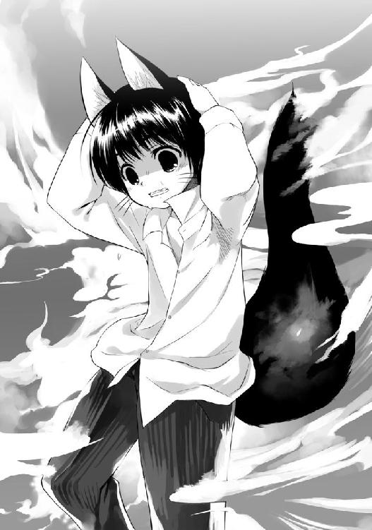

| かのこん (MF文庫J) | |
| 西野 かつみ & 狐印 | |
| メディアファクトリー (2005) | |
ＭＦ文庫Ｊ
かのこん
西野かつみ
カバー・口絵・本文イラスト●狐印
編集●土方 隆
一、彼女はこん、とかわいく咳をして
１
ノックする前に、耕太はひとつ深呼吸をした。
音楽室のドアをぬけて、しっとりとしたピアノの旋律が聞こえてくる。ドアについたガラスごしに覗ける室内に生徒の姿はない。すでに放課後となっていた。
――もしかして、あのひとが弾いているのかな。
おだやかな曲だというのに、耕太の鼓動は速まってきた。まだ着慣れていない制服の、まだつけなれていないネクタイ前に置いたこぶしを、ぎゅっと握る。
二度、ドアをノックした。
「あの、失礼します」
ピアノが止んで静かになった音楽室に、ドアのすべる音が広がってゆく。
なかには整然と机が並べられていた。耕太の教室で使われているものよりも大きな机の板が、やわらかな初秋の陽を受け、きらめいている。
彼女は、どこだろ？
せわしなく耕太は視線を動かした。初めて来る場所だからだ。ピアノはどこに......。
「いらっしゃい、小山田耕太くん」
声は真横から届いてきた。あわてて耕太は体の向きを変える。
耕太の入ってきたドアのすぐ横には、黒塗りの教壇があった。さらに奥に目をやると、教室の隅に、どでんとグランドピアノが置いてある。
濡れたように黒光る大きな楽器。
彼女はその椅子に腰かけていた。桃色の唇を曲げ、にこりとほほえんでくる。
「源......さん」
「ちずるでいいよ、耕太くん。みんな、わたしのことはそう呼んでるもの」
鍵盤のふたを閉め、源ちずるは立ちあがった。ピアノに負けない艶を持った黒髪が揺れる。髪はブレザーの上着を越えて、スカートまで伸びていた。
耕太よりも背は高いようだ。もっとも耕太は、一六五センチしかないのだけど。
「どう、ここまで迷わなかった？」
ちずるは椅子の後ろにまわり、背もたれを持つ。えい、とピアノに寄せた。
「や、大丈夫です。......途中で、その、ちょっぴり人に訊きましたけど」
「そっか......ごめんね、耕太くん。こんなところまで呼びだしちゃって、耕太くんも驚いたでしょう。いきなりだったものね」
ほほえみながら、ちずるが歩きだした。
耕太は心のなかで彼女にうなずいてみせる。たしかに驚いた。
だって、耕太は今日の朝、この薫風高校に転校してきたばかりなのだから。
そりゃ驚くよね――と、転校早々に自分を呼びだした相手を見る。
ちずるの黒髪は、歩むたびに艶めきを変えていた。豊かな髪は彼女の背中だけではなく、体の前にも流れている。髪のひと束が、細身な体にはふつりあいなほど立派な、重みのある胸のふくらみにかかっていた。
歩くたび、その胸も揺れていた。ゆやん、ゆよん。
耕太はぐびりと喉を鳴らす。
い、いけない。視線をそらした。頬がほてりだす。
すぐにまた、覗き見た。
べつにいやらしい思いがあったわけではない。耕太の目的はブレザーの胸部につけられたワッペンにあった。薫風高校と記されたワッペンの地の色は朱色。それはちずるが二年生であることをしめしていた。
いっぽう、耕太のワッペンは紺色。こちらは一年生のあかしだ。
「やだ」
交差した腕が、ちずるのワッペンを、重みのあるふくらみを隠す。
「耕太くんって......けっこうエッチなのね」
――え？
耕太は視線をあげた。女子の制服用の大きな蝶ネクタイを通って、ちずるの顔にたどりつく。彼女は目尻をつりあげ、唇をかるく尖らせていた。こちらを睨んでいる。
目の前に立つちずるは、両手で胸元を覆っていた。ほんのりと頬が赤い。
すぅ、と耕太の顔から血の気が引いてゆく。
「や、やや、誤解です！ そんなつもりでは......たしかに、すごいなあって思ったけど......いや、そうじゃなくて！ あの、えと......とにかく、ごめんなさい！」
全力で耕太は頭をさげた。
頭上を、笑い声がころがる。
「ごめん、ごめん。いまのはちょっとからかっただけ。ふふ、でも......耕太くんが思ったとおりの人で、よかった」
おずおずと耕太が様子をうかがうと、ちずるは秘密めいた笑みをうかべていた。
「それにしても、耕太くんって......大きいのが、好きなんだ？」
胸を隠していた腕を、こんどはふくらみの下にまわす。腕で持ちあげた。
ゆやよん、ゆやよん。
「――はう！」
耕太は視線を下に向けた。どうにかちずるの足元に落ちつける。うう、と両脇に下げたこぶしを握りしめた。お、おじいちゃん、都会は街も女の子も、すごいよう。
「あ、あの、源さん」
「違うでしょう、耕太くん」
え、と顔をあげると、鼻先に立てた人さし指を突きつけられた。
ちっちっちっ......と横に振られる。
「源じゃなくて、ち、ず、る、でしょう、ね？」
鳶色の瞳で、じっと見つめてくる。とても有無はいえない。
「......ちずる、さん」
「はあい」
ちずるのくっきりした目鼻立ちが、笑顔に溶けた。
前髪のかかった細い眉毛や、切れあがった目許、つやつやした唇が、耕太に彼女の喜びを伝えてくる。耕太の鼓動はとくん、と跳ねた。
「あ......」
耕太は息をのんだ。
――あのときとおなじ笑顔だ。
左胸に手を当てる。その下、ブレザーの内ポケットには、ちずるからの手紙が入っていた。もらったのは昼休みのことだ。
つまり、本日、転校初日の十二時半ごろ――。
そのころの耕太は、居心地の悪さこそ感じつつも、それなりにクラスメイトとうち解け始めていた。となりに座る朝比奈さんがクラスの委員長で、転校したばかりの耕太にあれやこれやと世話をやいてくれていたのが大きい。
耕太は、生徒数が片手で数えられるばかりの学校からやってきた。だから、大勢の――耕太から見ればだけど――の人の前では、どうしてもかまえてしまう。それでもようやく、たとえば田舎育ちをからかうような言葉にも、笑って答えることができるようにはなっていた。
そのときだ。美しい黒髪をなびかせ、彼女がやってきたのは。
お弁当の匂いと話し声のたちこめる教室に、ノックもしないで入ってきた。突然の乱入に静まってゆくざわめきにはかまわず、だれもいない教壇へと立つ。
ここで数人が彼女の正体に気づいた。
「あれ......ちずるさんじゃない」
そのひとり、となりの席の朝比奈さんが、眼鏡を直しつつ目を細めた。
聞き返そうとして、耕太は止める。
惹きつけられていたからだ。むしろ引きつけられた、といっていい。壇上で静かに教室を見まわすちずるに、ぐいと視線を持っていかれた。
目と目があう。
彼女はとても整った顔つきをしていた。冷たさすら感じさせる顔だった。
それが――一変する。
「見つけた......！」
長いまつ毛にふちどられた鳶色の瞳が、まぶしげに狭まった。細長い眉も、桃色の唇も、華やかに弧を描く。輝かんばかりの笑みができあがった。
耕太は彼女の笑顔に見惚れた。
たぶんクラスの全員がおなじだったのではないか、と耕太は思う。熱のこもったため息を、朝比奈さんまでが洩らしていたのだから。
あとのことはよく覚えていない。
覚えていることといったら、目の前までやってきたちずるが、耕太に手紙を渡した瞬間のどよめきぐらいなものだ。ほかはすべて夢のなか、ぼやけた世界の出来事だった。
その後、クラスメイトの態度はがらりと変わった。
耕太に話しかけてくる人数が大きく増えた。男女ともが興味しんしんな顔で質問をあびせかけてくる。恥ずかしさに、耕太はほとんどうつむいていた。どういう関係かなんて、訊かれたって答えられない。耕太自身にだってわからないのだから。
委員長の朝比奈さんからは、つぎのお言葉をいただく。
「小山田くん、きみね、くれぐれもあの人には気をつけるように。わかった？」
前髪をサイドでとめているため、つるんとむきだしになったおでこの下、眼鏡ごしの朝比奈さんの目は、やけに尖っていた。
気圧されて、耕太は何度もうなずいたのだった。
でも......気をつけてって、なにをだろ？
耕太はそっとうかがう。気をつけなくちゃいけない相手を、こわごわと。
「――なあに、耕太くん」
まったく邪気の感じられない顔で、ちずるが首をかしげた。
「い、いえ......あ、あの」
なにやら罪悪感がわきあがってきた。ごまかすように、耕太はブレザーの内ポケットから手紙を取りだす。ちずるからもらった、白い無地の封筒だ。
「これなんですけども」
封筒の中身には、ファンシーなレターペーパーが入っていた。横書き用のラインを完全に無視して、文字は縦に書いてあった。それも筆で。かなりの達筆で。
〈放課後、音楽室にて待つ 小山田耕太殿 源ちずる拝〉
果たし状に読めないこともない――ただし、最後にキスマークがなければ。淡い桃色のキスマークは、目の前に立つセンパイの唇とよく似ていた。
ちずるの唇を見つめながら、胸の鼓動を押し隠しつつ、耕太は訊く。
「あの......どうしてぼくを、ここまで呼びだしたんですか」
はぐらかすように、ちずるは窓を見つめた。つられて耕太も見た。
ガラスの向こうには水色の空が広がり、街なみが遠く望める。音楽室は二階だったため校庭は見えないが、かけ声が、活発な部活動の様子を伝えてきた。
耕太はちずるの横顔に視線を戻す。
「どこかで、お会いしたことがあったでしょうか」
いきなりちずるがこちらを向いた。
「ねえ、転校生の耕太くん。ここに来る前は、どんなところに住んでいたの？」
満面の笑みをうかべていた。ぽん、と飛んだ話題を、正当化する笑顔だった。
「山や川、草木、いろんな生き物で満ちたところ。正解？」
耕太は目をぱちくりとさせる。
正解だった。満ちているもなにも、耕太の故郷にはそれしかない。山に囲まれた村で、耕太は祖父とふたりきりで、ずっとすごしてきた。
「は、はい。でも、どうして」
「匂い、かな」
言葉の意味が理解できるまで、たっぷり十秒かかった。
「......匂い？」
「そう、匂い。自然の匂い。もう、むせかえるくらいに、耕太くんからただよって......」
なぜかちずるは頬を赤らめた。ぎゅっと自分の体を抱き、はあ、となまめかしい吐息をつく。
しかし耕太は、その変化を見てなかった。胸にこみあげるものがあったからだ。
熱く、冷たい塊が――。
「それって......ぼくが田舎くさいってことですか」
熱いのは怒り、冷たいのは怯えだった。どろどろに混ざりあって、耕太をうなだらせる。唇を噛ませる。手のなかの手紙を強く握りしめさせる。くしゃりと、嫌な音がした。
「やだ、違う、違うの！ わたし、そんなつもりじゃ」
哀しげなちずるの声に、マグマのような耕太の感情はすっと冷めた。
どうしてだろう、と思う。
いままで田舎ものであることを卑下したことなんて、いちどもないのに。クラスメイトからのからかいだって、笑って受け流せたのに。気にもしなかったのに。
なのに、どうしてちずるの言葉はこんなにも痛いのか。
なんでだろ......。考えてもわからなかった。なんだか大切なことのようにも思えた。
耕太は、つぶしてしまった手紙の皺を伸ばす。
傷つけちゃったかな......。
さっきからちずるは黙りこんでいる。耳をすましてみると、彼女の呼吸は荒くなっていた。怒っているのか、泣いているのか、とにかく普通の状態ではない。
あわてて耕太は顔をあげた。
「ちずるさ――」
ん、の言葉をのみこむ。
ちずるの顔はまっ赤だった。光の加減ではない。夕陽にはまだ時間がある。
興奮からくる赤らみに首すじまで染め、瞳をうるませ、小鼻はふくらませ、唇をやや開いて、熱い吐息をこぼしていた。耕太をじっと見おろしてくる。
「もう、だめ、わたし......がまんできないよう」
耕太の頭は両側から、がし、とつかまれた。
「ふぇ」
強引に引きつけられた。耕太は前につんのめる。顔面がつっこむ先に、耕太は朱色のワッペンを見た。その下には、立派で、重みのあるふくらみが――。
ばふっ。
そんな空気のつぶれる音がして、耕太の顔は、やわらかく、豊かで、ぬくもりのあるものに包まれた。甘い匂いが鼻を通りぬける。奥に熱さを秘めた匂いだった。
「ああ......どうして耕太くんは、こんなにもありのままなの」
耕太の後頭部に、ちずるの腕がまわされる。
締めつけられた。耕太の顔面は、じんわりとちずるのふくらみに埋もれてゆく。
「この土の匂い、草の匂い、花の匂い、木の、森の匂い」
「ち、ちずるさん、ちょっと」
耕太の声は張りのあるやわらかさに吸いとられてしまって、外には聞こえなかった。
「川の匂い、生き物の匂い、そよぐ風、春の雪どけ水、やさしい、あたたかな匂い......ああ、だめだ......わたし、もうだめぇ」
「だめって......いわれても......」
やっぱり外には届かない。もがっが、もがもが......。
もっとも――たとえ聞こえていたとしても、意味はないのかもしれない。
ちずるは、胸のなかの耕太に鼻を近づけ、すんすん、すんすんと匂いを嗅ぐことに夢中だったからだ。抱きしめられながら、耕太はそれを感じていた。
胸元から立ちのぼるちずるの匂いが、色濃くなってゆく。
気をつけてって、このことだったのかな......。
とろけそうな意識のなか、耕太は目を尖らせる朝比奈さんの姿を思いだしていた。光る眼鏡を。むきだしのおでこを。小柄な身体を。
とたんに双球から解放された。
まさか、べつの女性のことを考えていたから――と、耕太はびくつく。気まずさにおどおどする耕太の顔を、ちずるがくい、と上向きにした。
「ごめんなさい、耕太くん」
向きあった彼女の瞳は濡れそぼっていた。いまにも涙がこぼれそうだった。呼吸も荒い。その熱い吐息をあびながら、いつのまにか耕太の息も荒くなっていた。
「い、いえ。いきなり抱きしめられて、たしかにびっくりしましたけど、ぼ、ぼく、べつに気になんか」
ううん――。
ちずるがゆっくりと首を振った。
「そのことじゃなくて、ね」
耕太の背に手をまわしてきた。すっと抱きよせる。
「欲しくなっちゃったの」
ぞくりと耕太の背すじを駆けぬけるものがあった。
「耕太くんが......耕太が、欲しい」
抵抗する間もなかった。
気がつくと、耕太の唇は、ちずるの唇でふさがれていた。
耕太は思いきり目をみはる。飛びでるほど目を開いても、まぶたを閉じたちずるの顔しか映らなかった。しかし、感触が現実を伝えてくる。
やわらかくも、弾力のある唇ざわり。
これは、これが、まさか、ふが。
小山田耕太、正真正銘、ファースト・キッスであった。耕太はちらりと横を見る。
窓の向こうに広がる空は、夕焼けを迎える準備を始めていた。
それでも校庭から届く音は元気なものだった。かけ声、笑い声、たまにどなり声。外では生徒たちが、まだまだ部活動に励んでいる。
なのに......ぼくは......。
弱々しく耕太はまぶたを閉じた。手から手紙が落ち、床で乾いた音をあげる。
音楽室に並んだ机の上に、ひとつに重なったふたりの影が、長く長く伸びていた。背の高い影は身を屈めて、低い影は背伸びをしている。
しばらく、影は動こうとはしなかった。
......ちゅぱっ。
そんな音をたてて、ようやく影はふたりに戻る。
「――ど、どうして、いきなり、こんな」
弾けたように耕太はうつむいた。
唇に指先で触れる。濡れていた。ああっ、と指を飛びのかせる。
「もしかして、はじめてだった......？」
ちずるのささやきが、耕太の頭を熱くする。
「だとしたら......ふふっ、うれしいな」
頭どころか、全身が燃えあがった。
体は熱いのに、やけに冷たい汗が流れだしてくる。「気をつけて」の言葉をリフレインさせながら、耕太はこぶしを開いたり握ったりした。ちずるの足元を睨みつける。
黒い靴下、白い内履き、そして、床のまわりで踊る影。
......踊る、影？
なんだろう、と耕太はおそるおそる視線をあげてゆく。
ちずるの腰の後ろで、スカートをふわりふわりとひらめかせながら、ぱたぱたと動くものがあった。伸びやかな両脚のあいだから、金色のなにかが覗く。
「――え？」
耕太は腰を屈めた。間近に見ようとする。
しっぽだった。
どこから生えているのか――おそらくはちずるのお尻からか、金色の毛なみを持ったしっぽが、犬のように振られていた。弱々しい陽の光でも、毛はきらきらしていた。
しっぽのかたち自体は、犬のものでも猫のものでもない。
根元は太く、先にゆくにつれて細くなっていた。先端の毛なみは黒い。
どこかで......見たような......？
「こ、耕太くんって」
もじもじとちずるの腰が動いた。スカートが揺れる。ちずるの太ももは張りつめていた。内股になった脚のすきまから覗くしっぽも、ぴんと伸びていた。
「けっこう、大胆なのね......」
「あ」
耕太は自分が、ちずるの股ぐらをかぶりつきで見ていたことに気づいた。
「ご、ごめんなさい！」
直立不動となる。両手は両脇にびしっとそろえた。
かたくまぶたを閉じる。最低だ！ ぼく、最低になっちゃった！
「ううん......いいの。耕太くんだったら、わたし、いいよ。なにをされてもいい。いや、違う......むしろ、してほしい」
ずぎゅん。
桃色の弾丸で耕太の胸は撃ちぬかれた。
ばちりと目を見開く。ふんが、と鼻から息を噴きだした。
「ち、ちずるさん、そんな、だめです、体は大切にしないと！ だってぼくたち、まだ高校生で、まだ出会ったばかりじゃない――です――かぁ」
言葉の最後は弱々しく終わった。
まじまじと耕太はちずるを見つめる。口のかたちは、最後に言葉を発したときの「あ」のまま、半開きとなっていた。
「......どうしたの、耕太くん」
ちずるがみじろぎをした。
髪をかきあげる。さらさらと流れた。
――金色の髪が。
漆黒だったちずるの髪は、しっぽとおなじ黄金色に変化していた。その艶は変わらず、夕陽に照り映えていた。
おまけに、耳だ。
ちずるの頭からは、大きな三角形の耳が生えていた。やはりしっぽとおなじく、金色の毛なみだった。耳の内側は白い。先端は黒かった。
あ、これ、狐だ。
しっぽと耳がふたつ揃ったことで、ようやく耕太にもわかった。
これは狐のしっぽだ。狐の耳だ。
「......あ」
狐の姿のちずるが声をあげた。胸元に流れている金髪のひと房を、その手にしている。
「い、いけない」
頭へと手を持ってゆく。尖った狐の耳に触れた。触れた手も、触れられた耳も、どちらもぴくんと跳ねた。口はＯの字になった。
すばやくお尻へと手をまわす。しっぽがびしっ、と硬直した。
「ち......違うのよ、耕太くん」
両の手のひらを広げ、ごまかすように振った。
「これはね、その、そう......コスプレ！ 狐っ娘のコスチューム・プレイなの。耕太くん、こういうの意外と好きかなあって......えーと、あの......」
はあ、とちずるはため息をついた。
「......無理がある、よね」
腰に手を当て、がくりとうなだれる。狐の耳もうなだれていた。
「――そーよ」
ちずるは胸を張った。ふくらみが揺れた。ばゆん。
「バレちゃったらしかたない。そうよ、見てのとおりよ」
そっぽを向く。桃色の唇を尖らせていた。
「や、あの......見てのとおりといわれても」
ちずるは耕太に向き直る。鋭い八重歯をかわいく覗かせた。
「だから、わたしは狐なの！ 化け狐の、妖怪変化の、えーと、うーんと、ともかく、複雑怪奇な美少女なのよ！ だから、わたしは――」
ふてくされたように顔を伏せる。
「耕太くんとおなじ、ニンゲンじゃあ、ないの」
「ちずるさん......」
耕太は、目の前でうつむく、狐の姿をした女性を見た。狐の耳としっぽを除けば、普通の女の子と変わりない。金髪だって染めればいいだけの話だ。
だから、耕太にとっては――。
「あの、耳やしっぽが生えていたって、やっぱり、ちずるさんは」
「ニンゲンだって？」
ちずるの瞳がきらめく。
「これでも......まだそんなことがいえるのかしら」
髪だけではなく、その瞳までもが色あいを変えていた。
瞳のなかに金色の円が輝いている。年輪のように、それは大きな円から小さな円へと、内側に向かって連なっていた。
どこまでも深く、黄金の輪は続く。瞳の奥へと。闇のなかへと。
――のみこまれる。
気づいたときには耕太は一歩さがっていた。
がくん、と体が揺れる。見ると、腕をつかまれていた。鋭い爪の生えた指に。
「どう、耕太くん。これでもわたし、ニンゲン？」
ちずるは、にぃっと目許をゆがめた。
ほほえむ唇は、さっきまでのあたたかな桃色ではなかった。血を思わせる赤に染まっている。金毛の狐がうかべる、紅の笑顔――。
ふと、耕太は思いだした。
幼いころ、祖父がよく語ってくれた物語を。
ほとんどは布団のなかで聞いた。夜の闇にうすぼんやりとうかぶ家の天井を見つめながら、祖父の言葉に耳をすませたものだ。
ときに楽しく、ときに恐ろしく、ときに哀しく。
この世のものではない存在の話が多かった。幽霊だったり、鬼だったり、妖怪だったり、そう、たとえば――いま、目の前にいる彼女のような。
「ちずる......さん」
「ごめん」
ふっ、とちずるの瞳の力がゆるんだ。つかんでいた耕太の腕を離す。
くるりと回った。耕太に背を向ける。
「恐いでしょう、わたしって。逃げだしたいでしょう、ここから」
ふわりと舞った豊かな金髪が、ちずるの背中を隠す。
「いいよ、もう帰っても。いろいろと......その、ごめんね。へんなことしちゃって。でもね、わたしは、本当に耕太くんを、耕太くんのことを――」
ぶんぶんと首を振った。髪が躍り、夕焼けにきらめく。
「なんでもない！ あのね、もし耕太くんが今日のことを忘れられなくて、学校に来るのが恐ろしくなっちゃったなら......わたしの正体、みんなにバラせばいいよ。源ちずるは狐の妖怪だって、バケモノだって、みんなに伝えればいいよ。わたしたちみたいなのには、ちょっとした決まりがあってね......そうすれば、もうわたしは、ここにはいられないから」
すっ......と背すじを伸ばす。
「もう、会わなくてすむよっ」
あはっ、と明るい声をあげた。
耕太はちずるの後ろ姿を見つめる。しゃんとした背中とは裏腹に、狐の耳としっぽは、だらりとうなだれていた。沈みかけた陽に照らされ、半身に影ができている。
豊かな金髪の横からちらりと覗く、なだらかにさがった肩。
ちずるのほうが背が高いはずなのに、なぜか耕太は小さいと感じた。ちずるを年上の女性としてではなく、か弱い女の子だと感じた。
胸のうちに痛みが広がる。せつなく、甘やかな痛みだった。
「恐くは......ないです」
思わずそう答えていた。
ぴくん、とちずるの肩が上がる。狐の耳としっぽも動いた。
「や、恐いのは、その、恐かったんですけど」
ちずるの肩と耳としっぽはうなだれた。しょぼん。
耕太はあわてる。あの、えと、と言葉を探しているうちに、足元の手紙に気づいた。
拾いあげる。白い、無地の、すこし皺の入った封筒だった。
さっき、キスされたときに落とした、ちずるからの手紙――。
耕太の頬は赤くなる。思いだしていた。あの情熱的な口づけだけではなく、豊かな胸に抱かれたことや、間近で太ももを見てしまったことを。あう......。
最後にうかんだのは、ちずるの笑顔だった。
喜びの笑顔。耕太を見惚れさせた、まばゆい笑顔。
耕太は、うん、とうなずく。
「きれいでした。恐かったんですけど、とても......きれいでした」
ちずるのしっぽは跳ねあがった。ふわりとスカートがまくれる。耳はぴんと立ち、金色の髪もざわざわと揺れた。
「......きれい？」
「はい、きれいです。それこそ、恐いぐらいに」
うふふ、うふ、うふふふふ。
ちずるが笑い声を洩らしはじめた。肩を揺すっている。
「あの......ちずるさん？」
「もう、やだ、耕太くんったら......この、正直者！」
狐の姿をした女の子が、耕太めがけて飛びこんできた。
金色の耳を立たせ、金色の髪をなびかせ、金色のしっぽをふりふりと振って、そして、あの輝く笑顔をうかべている。
「わわ、わ」
どうにか耕太は受けとめようとした。
しかし、ちずるは耕太よりも背が高く――体重はどうかな――いきおいもあった。
「――わあ」
耕太はつぶれた。
押し倒され、背中からもろに落ちる。しばらくもだえ苦しんだ。
ひ、ふ、はあぁ。
止まっていた息を、あえぎながらしぼりだす。
「い、いきなり、なにを......」
ちずるは真剣な顔をしていた。耕太の上に四つんばいとなって、じっと見おろしてくる。金輪の瞳は、いまはおだやかな光をたたえていた。
「やっぱり耕太くんは、わたしが思ったとおりのひとだった」
口元をやわらげた。唇は血の色から、桃色へと戻っていた。
「ねえ、今朝のこと、覚えてる？」
「け、今朝、ですか」
ちずるの問いかけに、耕太は目をおよがせる。
今日の朝、転校してきた朝――登校時？
「雨が降っていたでしょう」
その言葉で、耕太は通学路の出来事を思いだした。
頬に当たる雨粒――。
雨かと見あげると、空は青かった。朝の光がまばゆかった。なのに雨が降りそそいでくる。ぽつぽつと、登校する耕太を濡らしていった。
「――はい、天気雨でした」
「そして耕太くんは濡れていた」
耕太は目をしばたたかせた。
「や、見てたんですか。あれは、その、傘がなくて」
雨のなか、いそいそと傘をだす人、駆け足になって学校を目指す人、さまざまだった。ブレザー姿の生徒たちがあわてるなか、耕太はただひとり、普通に歩いていた。
「平気な顔で濡れてた」
「だって、すぐに晴れると思いましたし、たいしたことなかったし」
「だからわたし、受けいれてくれると思ったの」
ちずるの瞳はうるんでいた。
ほほえむちずるの瞳は、陽が沈みきったあとでも、山吹色にきらめいていた。
「晴れた空から降る雨粒のように――光の世界に生きる闇でも、わたしみたいなひとかけらの影でも、耕太くんなら」
きゅっ、と唇を噛む。
「ちずる......さん」
「耕太くん」
ゆっくり、ちずるの顔が降りてくる。まぶたを閉じていた。ちずるの肩から、金色の髪がしゃらしゃらとすべり落ちてくる。カーテンのように耕太の顔の両脇にたれた。
だからもう、耕太の視界には、近づいてくるちずるの顔しか入らない。
「ぼ、ぼくは」
「好きだよ、耕太」
――ちゅっ。
夜の気配が忍びこむ音楽室に、そんな音が響いた。続けて、ちゅっちゅっちゅっちゅっちゅっー、なんて音も響いた。苦しそうにぱたぱたと手足をばたつかせる音も、響いた。
２
いつのまにか、夜になっていた。
窓の向こうに広がる深い藍色の空に、ぽつぽつと星がまたたき始めている。もうこんな時間なんだ。そう思いながら、耕太はうつろなまなざしを戻した。
「なにを......してるんですか」
耕太は音楽室の床に大の字になっていた。
ちずるがその上に馬乗りとなっている。鼻歌を奏でながら、耕太のワイシャツのボタンを外していた。すでにブレザーの前は大きく広げられている。
「なにって、続き」
ちずるの金髪の頭から生える狐の耳は、ぴんと立っていた。
背中では狐のしっぽが楽しげに振られている。ちらちらと先っぽが覗いた。
「続きって、あの......」
指先を押さえようとするも、耕太の手には力が入らない。ちずるからの愛の告白と、熱い熱い口づけのせいで、頭のなかがとろけていた。
「キスの続きといったら、決まってるじゃない」
悪びれずにちずるは続ける。どんどんボタンが外されていった。
「男の子とはね、わたしも初めてだけど......うん、きっとどうにかなるよ。本能と遺伝子を信じて、思うがまま、がんばりましょう」
ガッツポーズを作る。むん、と口をへの字に曲げた。
だんだんと耕太の頭はしゃっきりしてくる。
「や、もしかして......続きって......もしかして？」
「当たり」
ふたつのボタンを残して、ちずるの手は止まった。ひらりとワイシャツをめくる。
「ごほうび、あげちゃう！ 賞品は、ハイ、源ちずる。ぴっちぴちの狐っ娘よ」
くねくねと身をくねらせた。
ちずるが腰を乗せている場所がぐりぐりと刺激される。耕太はうめいた。
「あ、あう、だ、だめです！ だってぼくたち、まだ」
「大丈夫よ。お互いに初めてでも、痛いのはわたしだけだから」
ぶほっ。耕太はむせかえる。ぜひぜひと息をついた。
「そ、そうではなく、ぼくたちはまだ高校生で、出会ったばかりで、それにそれに、こんなところで、こんなこと......あれ？ えと、さっき、男の子とは初めてって」
「なによう」
ちずるは耕太のネクタイをゆるめていた。
「わたしが初めてじゃ、おかしい？」
しゅるしゅるとぬきとる。
「や、その......男の子とはっていうことは、つまり......女の子とは......」
「知りたい？」
ちずるは耕太のネクタイをぽいと投げすてた。
「いいよ......訊いても。好きなだけ、ね」
えい。
耕太のワイシャツはちずるにぬがされた。
ただし肩だけだ。両腕はまだ袖のなかにある。そのために腕の自由が利かない。ひい、と声をあげて、耕太は身をよじった。
ふふっ......。
びくつきながら耕太は見あげる。
ちずるが笑っていた。暗い天井を背景にして、金髪で狐耳の女性が、口元をゆがめ、うっすらと白い歯を覗かせていた。背中で狐のしっぽが揺らぐ。
その笑みは、まるで下弦の月だ。
「たっぷりと訊いて......ちずるの、いけない体に」
耕太の全身を、震えが走りぬけた。ぎゅっとまぶたを閉じる。
「ぼ、ぼくは、ぼくはっ」
ワイシャツの袖の縛めによって後ろ手に拘束された耕太は、せめて身を縮めることしかできなかった。腰にはちずるが乗っている。逃げられない。
――ごめんなさい。
耕太は心のなかで詫びた。おじいちゃん、天国のお父さん、お母さん、それにポチ、ミケ、金魚のヤルコフスキー、みんなみんな、ぼくは、ぼくは......。
大人になって、しまいます――。
覚悟を決めた。
それでも耕太の体の震えは止まらなかった。ハムスターのように震える。ぷるぷる、ぷるぷる、ぷるぷる、ぷる......。
「......」
まだ......かな......？
ちらりと耕太は横目で見る。
ちずるは視線をうかしていた。あらぬ方向を凝視している。狐の耳がけばだっていた。まるで動物が警戒しているかのように。
「いっけない。あいつが来ちゃう」
「あいつ？」
ぱっ、とちずるの顔が動いた。窓の側を向く。
同時に、窓側からの風が耕太の頬を撫でた。たしか窓は開いてなかったよね――そう思いながら、耕太も顔の向きを変える。
「――どぉしたんだよ、ちずる」
ガラスの窓は開いていた。
だけでなく、窓枠には男が腰かけていた。長い脚を組んでいる。うっすらと見えたズボンは、耕太が履いている制服のズボンとおなじものだった。
「聞いてないぜ、今日、男と約束がある、なんてさ。なあ？」
男は跳んだ。床に降り立ち、大きく腕を広げる。
夜窓を背にして、首をかるく曲げた。
脚の長さにふさわしく、男の背は高い。一八〇センチ近くはあるのではないだろうか。やはり薫風高校の制服姿だった。ブレザーのボタンはとめず、ネクタイは締めず、ワイシャツは裾をだしと、かなりだらけた格好をしている。
「教えてくれねーかな、ちずる」
男が歩きだす。
くせっ毛なのかパーマを当てているのか、男の黒髪はところどころ跳ねていた。髪の量は多く、ぴんぴんとなった毛先が耳まで隠して、さらに広がっている。
「どうしていつもと違って、おまえがそいつを押し倒してんだ？ どうしておまえはそいつに正体をさらしてんだ？ でもって、これがいちばん知りたいんだが......」
男の足音は硬かった。
靴......？
はっ、と耕太は表情を変える。男が入ってきた窓に目をやった。夜空をまじまじと見つめながら、音楽室がどこにあるのかを思いだしていた。
このひと、外から......ここは二階なのに。
耕太の頭のすぐそばで、足音は止まった。
床に寝そべる耕太を、男が見据えてくる。冷たいまなざしだった。つりあがった目のなかで、男の瞳は――銀色に光っていた。
ぎり、と男が歯を鳴らす。覗いた犬歯は鋭く尖っていた。
「こいつはいったい、だれなんだよ！」
いきおいよく指先を振りおろした。
顔面を指さされて、上半身むきだしの耕太は身をすくませる。
「うるさいな......」
耕太の上で、ちずるがぞくりとする声をだした。
「呼んでもないのに、なにをしに来たのよ、たゆら」
男を睨みつける。ちずるは狐の姿のままで、耳もしっぽも隠そうとはしていなかった。どうやら耕太の上からどくつもりもないらしい。どっしりと腰を落ちつけていた、
ちずるの瞳は、冷たい金色に輝いている。
「質問に答えろよ、ちずる」
たゆらと呼ばれた男も負けてはいなかった。
腰を屈め、顔を寄せ、ちずるを睨み返している。瞳は銀色に輝いていた。たゆらの興奮そのままに、どぎつい光だった。
金のきらめきと、銀のぎらつき――。
耕太の上では、人ならぬモノの、ふたつの光がぶつかりあっていた。
「なんなんだよ、こいつは。いまおまえが尻に敷いているのは、いったいなにものなんだよ。見ない顔だけど、なんだ、新入りの妖怪か。まさか......まさかニンゲンだなんていうなよな。おまえだってわかってんだろ、おれたちの立場は。ニンゲンに正体を知られるだけでも事だってのに、その上、手ェなんかだしたりしたら......おい、ちずる！」
「まさかで正解。ただのニンゲンよ、耕太くんは」
あっさり認められ、たゆらは目をむいた。
「なっ......」
「ああ、違うな。訂正する。耕太くんはただのニンゲンなんかじゃない。わたしの、ちずるの心を奪っていった......罪作りな人」
ちずるは耕太を見おろした。
目尻をとろんとさげ、豊かなふくらみを自分で抱いて、はぁ、と熱い吐息を洩らす。狐の耳もとろんとたれていた。
「いっしょに、罪を犯したい......！」
ぶるりと震えた。耕太も震えた。たぶん、お互いべつの意味で。
「と、いうことで、もうわたしは覚悟ができてる。耕太くんと愛しあうことで、どんな目に遭ったってかまわない。......まあ、バレないようにやるけどね。ふふっ」
真顔になってたゆらを見た。
「だからおまえの出る幕じゃあないのよ。これからわたしは耕太くんと共犯関係になるので、とってもいそがしいの。ほら、いい子だからお外で遊んでなさい」
背中からにゅっ、と顔をだした金色のしっぽが、しっ、しっ、とたゆらを追い払うように動いた。
凍りついていたたゆらは、ぎ、ぎ、ぎ、と唇の端を曲げる。
へ、へ、へ......。
ぎこちなく笑った。景気づけのつもりか、ハッ、と大きく声をあげる。
「愛しあう？ ニンゲンと、狐が？ 狐ったって妖怪だぜ。化け狐なんだぜ。化け狐の化けはバケモンのバケなんだぜ！ ハハッ、笑わせんなよ。だいたいにして、こんなガキのいったいどこが――」
耕太に向かって身を屈め、鼻をひくつかせる。
「ただの田舎くせえガキじゃねーかよ！」
唾を飛ばすたゆらの胸元を、耕太はじっと見つめていた。
ブレザーに貼りつけられたワッペンの色は、耕太とおなじ紺色だ。
――なんだ。
ガキ、ガキって、自分だっておなじ一年生じゃないか。
「あーん？」
ぎろりとたゆらが睨みつけてくる。
「なんだぁ、その目はよォ！」
噛みつかんばかりのいきおいで、たゆらが牙をむいた。耕太は身を硬くする。体をかばおうにも、両腕はまだワイシャツの袖で後ろ手に絡めとられていた。ひゃあ。
小気味のいい音が、鳴り響く。
耕太の眼前で、たゆらの顔が、ひしゃげながら真横を向いていた。
膝をがくがくと揺らして、たゆらは数歩さがる。手で頬を押さえていた。信じられない、といった様子で、口を半開きにしている。
「耕太になにをするの」
たゆらの頬を撲ったちずるは、手を振りぬいた姿勢のままでいた。
いきおいよく腕を戻す。たゆらとまともに向きあった。金色の髪がふわりと舞う。
「なにものであろうと、耕太くんに手をだすやつは、この源ちずるがゆるさない。それはたゆら――たとえおまえであろうとも、よ」
たゆらは呆然としていた。
ふへっ、と奇妙な声をあげ、がくんとうなだれる。
「......てめえか」
両手をだらりとさげ、ゆらりと体を揺らした。
「てめえなんだな......てめえが、ちずるを......ちずるを、こんなにしちまったんだなァ！」
銀色の瞳が、ぎゅん、と収縮した。
があっ、と口を開く。鋭い牙の奥で踊る舌が、やけに赤かった。
髪の色が変わる。
のけぞっていたたゆらの頭から、瞬時に黒みがぬけていった。入れかわり、くすんだ銀色が覆う。
瞳とおなじ色に転ずる髪――それは、耕太にあることを連想させていた。
ぶん、とたゆらが首を縦に振る。
頭には耕太の考えを裏づけるように、銀色の耳が生えていた。
大きな、三角形の、尖った耳。
それは狐の耳だった。
狐の姿に変化したたゆらの腰から、ぬっと銀色のしっぽが姿を見せる。たゆらの感情を伝えるかのように、毛なみをびきびきと逆立てていた。
耕太は喉を鳴らす。
このひとも――ちずるさんとおなじく――。
「返せよ」
たゆらが、指をかぎ爪のように立てた。
いつでもひっかくことができるように右腕を構えて、銀狐の姿をした男が、ゆっくりと近づいてくる。表情のない顔の、目線は耕太に据えられていた。
「ちずるを、元に返してくれよ」
瞳の鈍い銀の光に、かえって耕太は底冷えするものを感じた。身震いする。
耕太の上のちずるが、ため息をついた。
「おまえには、口でいってもわからないみたいね」
耕太のワイシャツを直す。むきだしになっていた肩に服が通され、ようやく耕太の腕は自由となった。続いて耕太の脇に手を差しいれ、起きるのを手伝ってくれる。
素直に従って耕太は立ちあがり、自分よりやや背の高い金狐の女性を見つめた。
「わたしたちがどれだけ愛しあっているのか、このバカに教えてあげましょう。とってもわかりやすーく、ね」
にこりとほほえむ。するりと耕太に身を寄せてきた。
「や、やや、ま、まさか――」
むちゅっ。
爪を突きたてようと振りかぶっていたたゆらが、大きく目をむいた。はが、と声をあげ、固まる。
耕太とちずるはキスしていた。
正確には、ちずるにキスされていた。ん、ん、んっ、とちずるが耕太に覆いかぶさってゆく。むさぼられるままに、耕太はむ、ぐ、ぐっ、と背をそらしていった。ちずるの肩からすべり落ちた金髪が、耕太の体を包んでゆく。
た、たしかに......。
耕太は思った。たしかにこれなら、とてもわかりやすく伝わるかもしれない。
が。横目でちらりと見る。
かぶさったちずるの金髪ごしに覗くたゆらの顔は、蝋人形のように青白くなっていた。逆立った銀髪と、尖った狐の耳が、彼の怒りのほどを伝えてくる。
「な、な、なぁにをやってんだよぉ、おまえらはよぉ！」
目許を泣きそうにぐにゃりとゆがめながら、たゆらは右腕を振りかぶる。その爪先は、じつに鋭く見えた。
ち、ちずるさぁん！
心のなかでそう叫んだ瞬間、視界を流れる金色の毛が消えた。
背を支えていた腕の感触も消える。ちずるにかぶりつかれてのけぞっていた耕太は、たまらず倒れそうになった。腕をぱたぱたと振ってバランスを取る。よろめきながらさがって、どうにか体勢を立て直した。
「ち、ちずるさん、いきなり、なにを――お？」
耕太は目をしばたたかせた。
顔を右、左と動かす。後ろにまで回した。
「あれ？ あれれ？」
ちずるの姿が消えていた。
さっきまで耕太の唇を奪っていた場所に、つぶれた制服の山だけを残して、金狐の女性はいなくなっていた。
「ちずるさん？ ちずるさーん？」
呼びかけても返事はない。
夜の教室にぽつんと残されたちずるの服を、耕太は手に取ってみた。
まだぬくもりがある。薫風高校のブレザー、首の蝶ネクタイ、ブラウス、スカートと、すべてが残っていた。いったい、彼女はどこへ......。
ぱさっ。
拾いあげた服のなかから、白いものが落ちた。ほんのり湿った音だった。
内履きと黒い靴下の上に乗ったそれを、耕太はつまみあげる。なんだろ、と広げてみた。
ぱんつだった。
（だめっ）
ぐきっ、と首が横を向く。
耕太は痛みにそり返った。ワイシャツがはだけ、薄い胸が覗く。
「う、うう、な、なに？」
うかんだ涙をぬぐおうと、手の甲を近づけた。いっしょに、手のぱんつも近づいた。
（だめだったらっ）
ぐききっ、とこんどは首が逆を向いた。
耕太は身もだえして苦しむ。手からちずるの服が落ちた。もちろんぱんつも。
首は、痛いというよりしびれていた。あうう。耕太は涙をこぼしそうになる。い、いまのはいったい......と首をさすった。
はっ、と耕太は目を見開く。
「も、もしかして、ちずるさん!?」
ぶんぶん、とあたりを見まわした。
「どこにいるんですかっ」
（ここよ）
「こ、ここ？ ここって」
（だから――ここ）
え......？
耕太のみぞおちに、なにやら冷たいものがわいてきた。鼓動が速くなってくる。ふと視線を感じた。見てみると、たゆらが耕太を凝視していた。身じろぎひとつせずに。
なにかを知っている目だった。
これからなにかが起きることを、知っている目だった。
どんどんと、耕太の鼓動は速く、強くなる。
最後にひときわ強く、跳ねた。
「うあっ！」
耕太は体をくの字に曲げる。
――熱い！
得体の知れない力が、体中を駆けめぐっていた。炎とも違う。電気とも違う。なぜか耕太は、近いのは体温だと思った。ちずるのぬくもりを何十倍にもすれば――。
「ああ、あ、ああ......」
視界がまっ赤に染まる。
耕太は自分の体を強く抱きしめた。腕に爪を立てる。唇から、よだれがひとすじたれた。
のけぞる。
吠えた。
白くかすむ視界のなかで、耕太は力が飛びだしたのを感じていた。おもに頭の上と、尾てい骨のあたりから。頬からも、ちょっぴり。
がくん、とうなだれる。
「ああ......」
はあ、はあと耕太は荒い息をついた。顔の汗をぬぐう。
とたんに、ぞびぞびと震えが走った。
「あひいっ」
頬から手をひっぺがす。な、なんだ......？
震えは頬から伝わった。こわごわと指先を伸ばす。長いものに触れた。ぞくりとした。指先ではなく、その長いもの自体がぞわぞわと感じていた。
頬から、ひげが生えている。まるで猫のように。
「ど、どど、どうしちゃったの、ぼく」
まさか、と耕太は思った。
頭に手をやってみる。尖ったものに当たった。尖ったものはぴちぴちと、魚のように跳ねた。
......耳？
お尻に手をまわした。ふさふさしたものに指が埋まる。探ってみると、尾てい骨から生え、ズボンの上から外に出て、長々と伸びているようだ。
......しっぽ？
たしかめるまでもなく、股のあいだから黒い毛なみがにゅっと姿を見せた。狐のしっぽとおなじかたちで、色はすべてまっ黒な毛先が、ぴこぴこと動く。
耕太は笑った。笑うしかなかった。
たゆらを見てみると、あちらはあちらで口をあんぐりとさせていた。
口をまる開きにしたたゆらが、こちらを向いたままでポケットに手を差し入れる。細長い、小さな板を取りだした。開くと、半分がほこりとりのブラシで、残り半分は鏡になっている、いわゆるエチケットブラシだった。
鏡の面を耕太に向ける。たゆらの口はまる開きのままだ。
おずおずと耕太は顔を寄せてゆく。小さな鏡のなかには、我ながら情けないと思えるような、びくついた顔があった。角度をずらして、頭を映す。
やはりというかなんというか......狐の耳が生えていた。
毛なみの色はしっぽとおなじく黒い。髪の色に変化はなく、瞳の色も、元のこげ茶色のままだった。なぜか、頬からはひげが伸びている。左右、三本ずつ。
......なんなの、これ。
耕太の心境は複雑だった。
なのに、鏡のなかの耕太は、心とは裏腹のしぐさを見せた。
『やーん、かわいー！』
手のひらを重ねて頬に当てて、狐姿の耕太は身をくねらせる。その声には、耕太の声だけではなく、聞き覚えのある女性の声が重なっていた。
え？ ええ？
驚こうにも、まったく顔も体も反応してはくれない。それどころか、鏡を前に、いろいろな表情を決めだした。睨んでみたり、笑ってみたり、うっとりしてみたり、そのたびに、きゃあきゃあとはしゃいでいる。
な、なにを――。

「なにをやってんだよ、ちずる！」
耕太の思いを、たゆらが代弁してくれた。
ふっ、と耕太の唇が勝手に笑う。
『憑いたのよ、もちろん』
鏡に向かってウィンクしていた耕太が、こんどはあざけりの笑みをうかべた。
『耕太くんとわたしがどれほど愛しあっているのか、おまえみたいなおばかさんにもよーくわかるようにしてあげたんじゃない。ねえ、たゆら。狐にとり憑かれたニンゲンがこういう状態になることが、いったいなにを意味しているのか――おまえだって一族のはしくれ、理解はできるでしょう？』
自分の頭から生えている狐の耳と、ズボンから伸びるしっぽを指さした。黒い毛なみがふぁさふぁさと動く。
「ふええ？」
ぱっと耕太の表情は変わった。
自信ありげにつりあがっていた目尻が、元の気弱そうなたれ目に戻る。
「ど、どういうことなんでしょうか」
あれ、と口元に手を当てた。いまのは耕太の声しか発せられてはいなかった。
――や、喋れる！
と、思ったら、また自由が利かなくなった。三本ひげだけがひくつく。
（ごめんね、耕太くん。ちょっとだけ、体を借りるよ）
耕太の目尻がつん、と切れあがった。まるでちずるのように。
『たゆら、耕太くんに説明』
くい、とあごで指示した。たゆらは苦々しい顔でそっぽを向く。
『た、ゆ、ら』
自分よりも背丈の小さな黒狐の少年に見据えられ、のっぽな銀狐の少年はわなわなと唇を震わせた。やがて、震えた息をしぼりだす。
「......狐がニンゲンに完全にとり憑くためには、相手が心を許してなくちゃいけない。もしもニンゲンが心を閉ざしていたなら、その姿には......おれたちの姿には、なれない」
『つまり？』
「つまり......それは......その、ニンゲンは、ちずるに......」
『なあに？ 聞こえなーい』
黒狐の耕太が耳に手を当てた。狐の耳ではなく人の耳に手を添えたことで、なかの耕太は、なるほど、やっぱり元からある耳を使うんだ、と思った。
あれ？ ちずるさんの場合、元からあるのは狐と人、どちらの耳になるんだろ？
「――まだだ」
うなだれていたたゆらが、きっ、と顔をあげる。
真正面から耕太を見つめ返してきた。銀の瞳をらんらんと輝かせ、銀の髪をざわめかせる。尖った歯をぎしぎし軋ませた。
耕太は「わ」と声をあげた――つもりだった。
『へえ......？』
口からはそんな感心したような声がでた。
「まだ、わかんねえじゃねえかよ」
たゆらが右腕を後ろに引いた。斜め下に伸ばす。
「本当に、そいつがちずるに心を開いているのか......おれたちバケモノを信頼しているのか、ふたりの心が結びついてるのか、このおれが試してやらあ！」
後ろに伸ばしたたゆらの手が、声とともに燃えあがる。
赤色の、淡い炎だった。肘までを包み、火先をゆらゆらと揺らす。炎はうねり、やがてなにかの顔のかたちを成した。
狐......？
耕太の瞳には、ゆらぐ炎のすきまが、つりあがった目や、笑う口に見えた。
どこか現実感のない色あいをした、狐の炎。
狐火――。
『ふうん』
耕太が、というより、憑いたちずるが、すっ、と目を細めた。
『狐とニンゲン、互いの結びつきが強いほど、その力も強くなる、か......』
「おうよ！ 見せてみろ、てめえらの力！」
球を投げるように、たゆらが腕を振りかぶった。炎が尾を引き、軌跡を残す。
燃えさかる手が眼前に突きだされた。なかの耕太は息をのむ。
が、そとの耕太は、えーい、とまるでバレーのサーブをするような格好で、左手のひらを、宙に向けた。
（いくよ、耕太くん。わたしたちの力、ふたりの想い――）
瞬間、耕太の視界は赤で満ちる。
轟、という大きな音をあげて、耕太の手のひらから、炎が渦を巻いて飛びだしていた。火の色あい自体は、たゆらのものとおなじく淡い。が、その迫力はとんでもなかった。
なにしろ大きい。
天井にまで届かんばかりに、炎の柱が噴きあがっていた。音楽室を焼く直前で火先は向きを変え、うなりをあげて宙を飛び回る。
四方八方を駆けめぐって、やがてまとまった。炎の球となる。
――にぃっ。
小さな太陽は笑った。つりあがった目は、目の前で呆然としている銀狐に注がれていた。たゆらの腕で燃えあがる炎が、まるでろうそくに見える。
......なんて大きな狐火だろ。
なかの耕太はたゆらとおなじ表情をしていた。驚きすぎると、こんどは呆れてしまうらしい。いちおうは自分の体が作りあげた炎なのだが。
『さあて、どうする？ わたしたちの愛の結晶、試してみる？』
黒狐の姿をした耕太が、狐火サーブの目標をたゆらに据えた。
「......あは」
たゆらは力なく笑った。すでに腕の炎はかき消えていた。
「あは、あははは、あは」
笑い声はだんだん大きくなる。やがては高笑いをあげ始めた。
『......壊れちゃったかな』
憑いたちずるが、耕太の顔を怪訝そうにゆがめたところで、たゆらはいちだんと大きく笑った。
そして跳ぶ。
ただし、前ではなく後ろへと。跳びながら、たゆらは体を丸めていた。
「まいりましたァ！」
床に着いたときには、平らに伏していた。見事な、ジャンピング土下座であった――。
『......おまえのそーゆーところ、嫌いじゃないけどね』
苦笑いする狐耳の耕太の前で、たゆらは、ははー、と頭を床にこすりつけた。銀毛の狐の耳が、ぷるぷると震えている。しっぽも丸くなって縮こまっていた。
「ま、まいるしかねーだろ、そんなもんだされたらよ。なんなんだ、そのばかでかい狐火。いままで見たこともない......死ぬぞ、死んじゃうぞ、そんなの喰らったら」
『それだけわたしたちの愛が深く、強いってことよ』
うふふっ、と、ちずるの喜びそのままに、耕太のしっぽは左右に振られた。黒い毛先がひょこひょこ動く。真上で燃える狐火も、いっしょに炎の先を振っていた。
表情を真顔にした。炎を見あげる。
『でも、ここまで力が高まるとは、わたしも思わなかった......』
目を細めた。狐火も見つめ返している。炎がゆらぎ、まばたきをした。
「互いの結びつきが強くなるほど、その力も増す――かよ。なあ、ちずるもそこのニンゲンも、今日会ったばっかなんだよな？ なのにどーしてそこまで通じあってんだ？ おれが学校サボってるあいだに、いったいなにがあったってんだ？ ......くそっ」
土下座したままのたゆらが洩らした言葉に、耕太はどきりとした。
たしかに、今日、出会ったばかり......なのに。
ずいぶんと、まあ、いろいろなことをしてしまった。抱きつかれ、口づけされ、服をぬがされ、あげく襲われそうになって。というか、ぜんぶぼく、受け身だよ。
耕太の頬から生えているひげが、しんなりとなった。
（ごめんね）
すっ......と耕太の腕が動く。自分の胸に当てられた。
『だって、好きになってしまったのだもの。あなたに......耕太くんに、ひとめぼれしてしまったのだもの』
ぬくもりが耕太の胸を満たしてゆく。頬のひげが起きあがってゆく。
「けっ、齢四百を超えようって古狐が、いまさらひとめぼれもねーだろがよ、年を考えろっつーんだ、年を」
這いつくばったままで、たゆらがせせら笑う。
ざわり。
耕太は、自分から生えている狐の耳としっぽが、その黒い毛なみを逆立ててゆくのを感じていた。怒り――耕太以外のものの感情が、体のなかでふくれあがる。
『......女性に対して』
耕太の体から、白い肌が飛びだす。
ずるり、とぬけでた。耕太は魂をぬかれるような感覚に震えながら、軽く舞う、豊かな金髪を見つめていた。
「年のことは、いうなーっ！」
ちずるが、土下座したままのたゆらに跳び蹴りを入れた。
素っ裸で。一糸まとわず。
ぐぎん、となにやら骨がずれたような音をあげて、たゆらはふっとんだ。音楽室の後ろの壁に激突する。衝撃で、貼られていたポスターが何枚か落ちた。
「まったく、失礼なやつだ！」
ちずるは怒りに肌を紅潮させながら、のたうちまわる銀狐の男を睨みつけていた。金髪をまとわりつかせただけの裸身が、月明かりにうかびあがっている。なにも隠そうとはせず、腰に手を当て、むしろ胸を張っていた。
ふん、と鼻息を荒げる。揺れた。なにも束縛するもののないふくらみが、ゆたゆたと。
「あ、あう......」
耕太の鼻からは血がしたたっていた。
頭からもお尻からも、そして頬からも、もう狐をしめすものは生えていない。普通の少年の姿で、耕太は目を血走らせていた。流れる鼻血で、ぽたぽたと床を汚す。
耕太の目には、ひとつの映像が焼きついていた。
......白い、桃。
ちずるが耕太からぬけだし、たゆらに襲いかかっていったとき。金髪をなびかせ、金毛のしっぽをおどらせ、飛びだしてきたとき。
耕太からは、お尻からすべてまる見えだったわけで。その、えと、なにもかもが。
「あううー......」
出血のせいか、頭に血が昇ったからか、耕太はふらついた。だめだだめだ、と頭を振る。鼻血がびちびちと飛んだ。うう......。充血した目が、ちずるへと向く。
狐のしっぽが、尾てい骨から生えているのがよーくわかった。
「桃！」
耕太の出血量は増えた。ぼたぼたぼた。
「ちょっ、ちょっと、どうしたの、耕太くん」
気づいたちずるが、耕太のほうを向く。
耕太の眼前に、無防備な姿がさらされた。耕太は鼻から鮮血を噴く。
「耕太くん、耕太くん!?」
ちずるが駆けよってきた。
なるほど......ぜんぶ、金色に......。
「なにがあったの、どこを怪我したの、ねえ、耕太くん、こっちを見て、耕太くん！」
耕太は上を向いていた。鼻血を押さえるために。その原因から逃れるために。
「ふ、服を......ちずるふぁん、お願ひでふから、服を......」
「服？」
ちずるが下を向く。自分の姿を見おろした。
あ、と声を洩らす。
「えーっと、その......あ、あは、ごめんなさーい」
そそくさと狐の耳が遠ざかってゆく。
耕太は天井を向きながら、ちずるが服をまとい始めたのをちらりちらりとたしかめた。ほっ、と息をつく。鼻血のことを思いだして、とりあえず首すじをとんとん叩いた。
「――でもね、耕太くん」
ちずるはいそいそとブラウスのボタンをとめていた。
「耕太くんになら、べつに見られたって......だってほら、遅かれ早かれ、ね？」
ブラウスをはおっただけの姿で、ちずるがほほえみかけてくる。
腕を後ろで組んでいるせいか、ちずるの胸はやけに突きだされて見えた。そのためにブラウスが引っぱりあげられ、裾が短くなっている。太ももがきわどいところまであらわになっていた。
服を着たら、かえって......。
耕太は首すじを叩く速さをあげた。だめだだめだだめだよ！
「おい、おまえら、そこのバカップル！」
ふあい、と耕太は声のしたほうを見た。ちずるも、なによ、と向きを変える。
ちずるに蹴られて曲がった首を押さえながら、たゆらがよろよろと立ちあがっていた。手で支えにしている壁には、激突の凄さを物語るへこみがある。ひびすら広がっていた。
「ちずる、それ、それ、それ！」
震えながら指さす方向には、ブラウス一枚のちずるがいた。
「いったいなにを興奮しているのよ。わたしの裸なんか、おまえはいつも見ているでしょうに。そんな喜ぶほどのこと？」
いつも!?
耕太はちずるを見た。きらめく金髪と狐の耳と、きらめく金毛のしっぽが視界に入る。しっぽによって持ちあげられたブラウスの裾と、そのために見えてるお尻まで。
......白い、桃。
つん、と鼻の奥に痛みを感じた。鼻血の気配に、あわてて真上を向く。
耕太は天井を睨みながら、思った。
そういえば、ちずるさんとあの銀狐さんって、どういう関係なんだろ......？
「てめえの裸なんかとっくに見飽きてるよ！ じゃなくて、そっちだよ、そっち。おまえの向こう......ニンゲンの後ろ！」
裸なんか見飽きてる、の言葉にくらりとなりながら、耕太は後ろを向いた。
「――あ」
耕太の全身の毛が、ぞっと逆立つ。
天井近くに浮かぶ炎の塊が、狂おしく身をよじっていた。
がたがた、ぶるぶると震えて、その場でうねっている。炎のなかの顔は、かろうじて狐だとわかるぐらいにまでくずれていた。
狐火は暴走しかけていた。
「それはいまだれが制御してんだよ！」
「あ、いっけない。すっかり忘れてた」
のんきな声をあげて、ちずるが耕太の肩から顔を覗かせた。舌をぺろりとだす。
「忘れてたじゃねーよ、もうボケたのかよ。四百年も生きてるとそうなるのかよ」
「おまえがそんなこというから、忘れたんじゃないのよ！」
振り向きざまに、ちずるは右足を蹴りあげた。
足から飛んだ内履きが、見事にたゆらの顔面に命中する。耕太はむきだしになった太もものあまりの白さに、一瞬、息を止めた。
だらり、とまた鼻血がたれる。両の穴から。
「と、ともかく、どうにかしろよ、それ！ そんな大きさの狐火が暴れまわってみろ......こんな部屋、ふっとぶぞ。おれたちだってあぶないんだぞ！」
さっきの一撃で、たゆらの鼻からもひとすじ血がたれていた。
「さあて、どうにかといっても......もうわたしの手は離れちゃってるしね」
「や？ じゃ、じゃあ、いったいだれの手にあるんですか」
じっ、とちずるが金色の瞳で耕太を見つめてきた。
おそるおそる、耕太は自分の顔を指さす。
「......ぼく？」
狐耳の彼女は、しっかりとうなずいた。
「耕太くんに憑いたときに、耕太くんの体から生みだしたものだもの。だから、やっぱり耕太くんの炎なのよ、あれは」
......と、いわれても。
耕太はあらためて炎を見る。
狐火は、もうしんぼうたまらんといった様子で、宙をじたばたしていた。火の粉をあたりに飛ばし、すでに天井の一部も焦がしている。狐火特有の淡い光は、夜の音楽室の隅までもぴかぴかと照らしていた。
耕太の背筋に寒気が走る。
でも......ぼくがやらなくちゃ。
耕太は口をへの字に曲げて、えい、と両の手のひらを狐火に向けた。
「止まって！ ......くださぁい」
あくまで気弱な命令に、たゆらががくり、とこける。
それでも狐火の動きは、ぴたりと止まった。
「おお!?」
「うふ」
妖狐ふたりの声がシンクロする。まさか成功するとは思っていなかった耕太も、まぶたをしばたたかせた。
――にたり。
狐火がゆらぐ。裂けた炎のすきまは、まるで獣が笑っているように見えた。ぐにゃりとうねる。表情がなくなり、ただの火球と化した。上下にはげしくぶれだす。
「――耕太くんはよくやった」
ちずるは耕太の肩を抱いた。
その手が背中にまわされる。耕太の脇に差し入れた。よいしょ、と声をあげて、膝も持つ。わわっ、と耕太はちずるに抱きあげられた。
「たゆら、わたしの服、お願い」
お姫さま抱っこをされながら、耕太は下からちずるの顔を見あげる。いまにも破裂寸前の火球によって、凛々しい横顔が照らしだされていた。金髪と、金毛の狐の耳とがきらめく。視線に気づいたのか、ちずるが耕太を見おろしてきた。
「さあ、最後の一手、いきましょう」
目許を細め、ほほえむ。
「......最後の一手、ですか？」
「逃げるの！」
ちずるが真正面を向いた。
とたんに耕太の視界はがくん、と揺れだす。ちずるは駆けだしていた。目指す場所は窓。たゆらが侵入してきた、開けはなたれている窓へと、猛スピードで走る。
外へ？ でも......。
耕太はぎゅ、とちずるのブラウスにしがみつく。
「でもここ、二階で――」
ちずるが跳んだ。
いったん、窓枠に降りたつ。ばねをたわめるように、膝を屈めた。
「いぃぃ――やぁ！」
耕太の眼前に、星空が広がった。
満ちかけた月がぽかりと浮かんでいる。遠くには街なみだ。ネオンの明かりがぽつぽつと見えた。あまりの現実感のなさに、耕太は下を覗く。足元は？
眼下では校庭が小さくなっていた。
ランニング用に白いラインで描かれた大きな楕円、一部が重なっている野球部とサッカー部のグラウンド、テニス部のコートに、プール......。
すべてが一望にできたことで、耕太はかえって現実感をなくした。ぶる、と震える。
「大丈夫？ 耕太くん」
狐の耳を生やした女性が、心配そうに見つめてくる。その後ろには、夜空。
飛んでいた。
耕太はちずるに抱かれて、空を飛んでいた。
いや、違う――。
跳んでいるのだ。ただし、とてつもなく高く、とてつもなく遠くまで。そうか、と耕太は思った。
これが......妖怪なんだ。
「ちず――」
閃光が差す。
耕太の視界がくらんだ瞬間、爆発音が鳴った。爆風が耕太たちを押す。飛翔が加速した。なんなの、と思って耕太はちずるの後ろを覗きこむ。
「あ......ああ！」
音楽室は、本校舎から離れた、別棟にある。
その独立した建物の二階が、炎に包まれていた。
淡い赤色の火が、窓からあふれて、外壁を舐めている。その火の色に耕太は覚えがあった。ここではない、どこかの世界にあるような、淡い火の色――狐火。
ごくりと唾をのむ。
これこそが......妖怪！
あの炎を生みだしたのは..................あ、ぼくだ。
「ああ......ぼく、なんてことしちゃったんだろう。て、転校したばかりなのに」
「耕太くんはできるかぎりのことをしたじゃない。炎に立ち向かったときなんか、わたし、どきどきしちゃった。大丈夫よ、大丈夫......黙っていればわからないから」
「だ、黙っていればって！」
耕太は黒煙をあげる音楽室を見やる。音をたて、屋根が崩れた。火の粉が舞い散る。あううー、と耕太はうめき声をあげた。
「大丈夫なの。だってほら、狐の耳としっぽを生やした女の子にとり憑かれて、ぼく、音楽室を爆破してしまいました――なんて話、だれが信用すると思う？」
「......で、でもぉ」
「おーい！ いったぞ、そっち！」
ちずるの後ろから声がかかった。
いっしょに脱出したたゆらからだ。銀狐の姿に、ちずるの服を両手で抱えて、やや後方を跳んでいる。
強風にあおられ、ひらり、と白いものが舞った。
耕太は手を伸ばす。その小さな布を、広げてみた。
ぱんつだった。
「――やだ！ もう、ばかたゆら、しっかり持ってなさいよ！」
耕太はその小さな布地を、きゅっ、とつかむ。
「え？ こ、耕太くん？」
「彼だとよくて......ぼ、ぼくだと、だめなんですか......？」
いってしまった。
いつも裸を見ている、すでに見飽きている......そんなたゆらの発言によって、耕太のなかでは渦を巻くものがあった。その紫色の感情のままに、思わず口走ってしまった。
「あ......ご、ごめんなさい、ぼく......」
目をぱちくりさせていたちずるの顔が、とろける。
喜びに包まれた顔に――耕太を見惚れさせた顔へと変わった。
「やーん、耕太くん、かわいー！」
頬をすりよせてくる。耕太の前髪はくちゃくちゃになった。
「あれはね、あのばかはね、弟なの！ シスコンな弟なの！ だから、耕太くんが心配するようなことは、なーんにもないの！」
ふえ、と声を洩らした耕太の鼻を、ぺろりと舐める。
血で汚れていた顔を、ちずるは舌で清めていった。
「ちょ、ちずるさん、き、汚いですよ、は、はなぢ......」
「もう、もう、もう！ 耕太くん、だーい好き！」
「なにやってんだよ、落ちるぞ、おまえら！ いちゃつくんなら降りてからやれーい！」
弟くんが後ろで吠えていた。
ぺろぺろと舐められながら、耕太はたゆらの銀毛の髪と、狐の耳を見つめる。
「あ、あれ？ でも、け、毛の色が......」
「だって、血はつながってないんだもの。六十年ぐらい前かしら、あいつを拾ったのは。あのころはちっちゃくて、かわいくてねー、いまじゃあもう......」
ろくじゅうねん。......終戦直後？
そういえば、ちずるは四百歳だとかいっていた。
なるほど......妖怪なんだ......。耕太はぺろぺろと顔を舐められながら、ちずるを見つめる。金色の瞳で見つめ返され、手に持ったぱんつを、そっと握った。
３
ひとりの転校生と、一匹の妖怪によって、音楽室が爆破された、同時刻。
校舎にはほとんど人影は残っていなかった。いたものも、突然の轟音と揺れにあわてるだけで、なにが起こったのかは把握できていなかった。
ごく一部の教師と、生徒をのぞいて。
ひとりはスーツ姿の男だった。
白髪まじりの髪をオールバックにした男が、畳敷きの部屋であぐらをかき、瞑想をしている。まぶたを閉じた顔は、白髪から連想するほどの年齢には見えない。およそ三十半ばといったところか。
「......三十八......三十九......四十」
精悍な男の口からは、ずっと数字が洩れていた。六十をひと区切りに、また一から始めるのを、もう二度くり返している。
男の前には、ちゃぶ台があった。
その上にはカップラーメンがある。割り箸でしっかりとふたがなされてあった。
「......五十八......五十九......六十」
すっ......とまぶたを開けた。鋭いまなざしを、カップラーメンのとなりに並んだストップウォッチに向ける。デジタルの表示は三分を過ぎてゆくところだった。
にたり、と薄い唇の端を曲げた。
「さて......」
正座し、割り箸を取った。手を顔の前で合わせ、いただきます、と低くつぶやいた。割り箸を口にくわえ、ぱきっ、と小気味よく割る。
その瞬間、爆音がとどろき、校舎が揺れた。
男は倒れぬように支えていたカップラーメンから手を離し、かたわらに置いてあった竹刀をつかみ取る。
「場所は、東南のはずれ――音楽室か？ いったいどこの阿呆が......」
部屋を飛びだす。廊下を駆けていった――足音もたてずに。
男がでてきた部屋の出入口のプレートには、「宿直室」と書かれていた。
もうひとりは、暗がりのなかにいた。
だれもいない教室で、明かりもつけずに、じっとノートパソコンの画面を見つめている。モニターの光にうかぶ真剣な表情の顔は、尋常なものではなかった。
ごつごつと岩のような顔で、鼻はつぶれ、口も大きい。なにより、太い眉の下、左目には斜め十字に傷が刻まれていた。
身体を見れば――こちらも並みの体格ではない。
壁のように広い背中、太い腕、太い腰、太い脚。覗ける太い首には、贅肉だけではなく、筋肉の太い筋がうかんでいた。服も特注なのだろう、やたら大きなブレザーだった。
その胸元には、薫風高校のワッペンが貼られている。
色は草色。その濃い緑の色は、男が三年生であることをしめしていた。
男がキーボードを操作する手を休める。モニターを右目で睨み、厚い唇を動かした。
「△×社が増資......ふむ」
むう、とうなる。しばらくみじろぎもしなかった。
「......買っておこうかね」
クリックしようとした瞬間――。
爆発が起きた。
ぱらぱらと天井からほこりが落ちてくる。男は驚いたそぶりも見せず、ノートパソコンが落ちぬよう、両手で押さえている。
揺れが収まったとき、男は壁を睨んでいた。その方角は――東南。
男はいかつい顔で、むふ、とかわいく笑った。
「強いな？ 強い。ふふ、こいつは楽しみだ！」
鼻歌まじりで、パソコンに向き直る。
「冴えてきたぞ！ 買わん、買わん、こんな株、いらん！」
カチカチ、とクリックする音が響いた。
二、みんなみんなみんな、彼を放っておいてはくれない
１
学校から徒歩で五分ほどの住宅街に、薫風高校の学生寮はある。
その一室で、耕太は正座をしていた。カーテンごしに朝の光が差しこむ部屋で、布団の上にパジャマ姿で、身動きひとつしない。
ちちち......と、小鳥が鳴いた。
「やっぱり、このままじゃいけない......」
わずかに開いた耕太の目の下には、うっすらとくまができていた。
六畳ひと間の部屋のそこかしこには、ダンボール箱が置いてある。ひっこしの片づけもせずに、あれからずっと耕太は考えていた。
それこそひと晩中、ずっと、ずっと、ずっと。
昨日はいろんなことがあった。
いや、ありすぎた。転校という一大事件がかすむほどの出来事が、じつにつぎつぎと起きた。夢だといわれたほうが納得できるような、不可思議なことばかりが。
でも......。
布団の脇にある机を、耕太は見た。
電気スタンドと辞書の載った机のまん中には、小さく折りたたんだ白い布地がある。その絹でできた生地が、耕太に、昨日の出来事がまぎれもない現実なのだと教えてくれる。焼けた夜空に高々と舞った、白い布の姿が――。
ぱんつだった。
耕太はため息をつく。
「そんなに欲しいのなら、恥ずかしいけど、耕太くんにあげちゃう！」のお言葉とともにいただいたものだった。もらったはいいがどうすればいいのかわからず、広げてもおけず、とりあえずたたんで机に置いておいたものだった。
......洗って返したほうがいいのかな。
昨日の出来事を考えるということは、結局、その下着をくれた女性について考えることとおなじだった。
腰まで伸びた黒髪が美しい、ひとつ先輩のしとやかな女性。
その正体は、齢四百年を生きた化け狐の女の子。狐の耳としっぽを生やし、黒髪をきらめく金髪に変化させた姿が、耕太の脳裏にうかぶ。
ついでに、一糸まとわぬ裸身も。
うっ......と耕太は正座したまま前屈みになった。
あとに起こった出来事も思いだす。暴走した、ちずるの、耕太の、ふたりの力――荒れ狂う炎、狐火。
耕太はすっ、と上半身を起こした。
太ももの上に置いたこぶしを、ぎゅっと握る。
「ここは、正直に――」
「どうするの？」
背後からの声に、ひゃあ、と耕太は飛びあがった。
布団にころがって、後ろを見あげる。
「や、やや......」
制服姿の女性が、さわやかな笑みをうかべていた。窓からの光に、黒髪が艶めいている。その毛先は、腰までも届いていた。
「ち、ちずるさん」
「おはよう、耕太くん」
耕太は両足を前に投げだし、かたむいた背を後ろについた手で支えるといったまぬけな格好で、いまは人の姿をしている彼女に、おはようございます、とあいさつを返した。
はっ、と表情を変える。
「か、鍵......ドアには、鍵が」
「開けちゃった。だって、ノックしても返事してくれないんだもの」
耕太はちずるごしに、玄関のスチール製のドアを見る。あ、開けたって......。
「耕太くん、昨日はちゃんと眠れた？」
ちずるが耕太の顔を覗きこんでくる。目の下にうかぶくまを、指先でなぞった。
「......あまり眠れなかったみたいね。まあ、しかたないか。いろいろあったものね」
「え、ええ、まあ......本当に、いろいろと」
耕太に触れた指先を、ちずるが自分の唇に添える。
「やっぱり昨日いっしょに帰って、添い寝してあげればよかったかしら。でも......そうなるとわたし、添い寝ですませられる自信がないし......」
げふふ。耕太は咳きこんだ。
「ち、ちずるさん！」
「冗談よ、冗談。そんなことより......じゃーん！」
抗議する耕太の前に、黄色いきんちゃく袋が突きだされた。
「はい、朝ごはん、作ってきたの」
「え。も、もしかして、ちずるさんが......？」
ふふ、とちずるが唇をやわらかく曲げた。
「だって......昨日は、わたしのせいで耕太くんに迷惑かけちゃったし、たぶんすっごく疲れてるだろうって思って、せめて、このぐらい......ね」
はあ......と、耕太が感動の吐息をついているあいだにも、ちずるは壁にたてかけてあったちゃぶ台の脚を広げていた。きんちゃく袋から弁当を取りだし、てきぱきと並べる。
ぽかんとしている耕太に、ちずるが気づいた。ウィンクする。
「ほらほら、いまのうちに着替えて。ね？ あ、な、た」
「あ......はい！」
ちずるに背を向け、耕太はパジャマのボタンを外す。
ぴた、とその手が止まった。
......あなた？
みるみるうちに顔が赤くなる。
それから――。
女性の前で着替えるわけには、という耕太に「わたしの裸は見たくせに......」とちずるがすねたり、それをまっ赤になりつつどうにかなだめたりと、いろいろあって。
ようやく制服姿になった耕太の前には、お弁当があった。
タッパーに入った、サンドイッチとサラダ。湯気をたてているコーヒー。
手作りのお弁当かあ......。
耕太の胸にじんわりと広がるものがあった。うれしい反面、どこか照れくさいような。
「ほら、食べてみて」
「いただきまーす」
ちずるの真剣なまなざしを感じながら、耕太はハムらしきものが挟まれたパンに手を伸ばした。あーん、と口に運ぶ。
むぐむぐむぐ......。
「――ふごっ」
耕太の口から、奇妙な声が洩れた。顔まで奇妙にゆがむ。
さわやかな朝の光の下で、あいさつをかわす生徒たち。
おおむねさわやかで、たまにだらけた会話は、耕太とちずるのまわりでもさかんだった。道路脇に並んだ街路樹が落とす影のなか、しかしふたりはあまりさわやかではない。
耕太のとなりで、ちずるはうなだれていた。
「ごめんね......塩かげん、まちがっちゃって......」
「い、いえ、あれはあれで、ひと味違った......なんといっても、しょっぱいと思ったら甘いという、いままでにない」
ちずるの表情がゆがむ。唇を噛んだ。
「......塩かげんどころか、塩と砂糖自体、まちがってた......？」
ああ、と顔を手で覆う。
「いえ、いえ、いえ！ じつに新鮮かつエキセントリックな味わいで......そもそも、ハムかと思ったらあぶらげで......いやあ、今日のお昼がじつに楽しみだなあ！」
若干、棒読みだった。
耕太は、顔を覆うちずるの手からぶらさがった、黄色いきんちゃく袋を見つめる。あのなかには朝食だけでなく、昼食までも入っていた。もちろん、ちずるの手作りだろう。
「......無理しなくても、いいよ？」
ちずるが、指のすきまから耕太を覗き見てきた。
「む、無理なんかじゃ、ないです！ だって、ちずるさんはぼくのために早起きして、がんばってくれたんじゃないですか。なにより......その気持ちがうれしいです」
くすん、としょぼくれていたちずるが、かわいく鼻をすする。
「ありがと、耕太くん」
ようやく笑顔となった。えへへ、と目許の涙をぬぐう。
すぐ横の道路の白線内を、自転車が連なって走っていった。巻きおこった風に、ちずるの黒髪が舞う。
「そういえば、耕太くんさ、朝――なんか正直に、とかいってなかった？」
「ああ、それですか」
ちずるの機嫌が直ったことでほっとした耕太は、はい、とうなずく。
「音楽室のことです。ぼくたち、昨日あそこを爆破し――」
耕太の口はふさがれる。
唇に、ぴしっとちずるの人さし指が当てられていた。
「だめ」
ちずるがすばやく視線を動かす。まわりを見た。
耕太はちずるの瞳を追いかけてみる。まわりの生徒たちは――や？ やや？
みんなの視線が耕太に集まっていた。いや、正確には耕太とちずるに、だ。ひそひそと会話を交わしているなかに見知った姿を発見して、耕太はあわてた。
クラスメイトだ。
昨日、ちずるとの仲をさんざんに訊いてきた彼ら、彼女ら――。さぞかし、いまは好奇心を満足させていることだろう。耕太は逃げだしたい気分になってきた。
いやしかし、クラスメイト以外にも、ずいぶんと......？
「どうしてみなさん、こんなにぼくたちのことを」
「あまり美男、美人すぎるのも罪ってことかな。どうしても人目を引いちゃうものね」
ふふ、とちずるは笑った。
「ちずるさんはたしかに美人かもしれませんけど......」
唇を軽く尖らす耕太。
ちょっと耳をすましてみる。
「あれ、源さんと転校生」「手が早いよな......」「えっちだ」「あいつ、昨日来たばかりでしょ」「源がやつに手紙を？」「朝っぱらから」「え？ そうなの？ もう？」「えっちだ」「いちゃつきすぎー」「名前は小山田耕太......」「かわいい顔してね」「捕まったか」「いや、意外とああいうタイプが」「ともかく、えっちだ」
男女ともに、耕太とちずるをじとりと見ていた。
――ええ？ えええ？
耕太は口をぱくぱくとさせる。ちずるは平気な顔だ。むしろうれしそうにほほえんで、耕太の耳元に唇を寄せてきた。どよめきがおこる。
「ね？ 壁に耳あり障子に目あり......ここには耳ばっかり。だから、大切な話は、ここではだめ。あとでゆっくり......ね？」
耕太は身をはがす。まわりからの視線で体に穴が開きそうだった。
「で、でもですね、やってしまったことは、なるべく早く謝ってしまったほうが」
「だから――」
またちずるが人さし指を伸ばしてきた。
その指先に、耕太は目をみはる。両手でつかんだ。どよめきも気にならない。
「こ、これ......」
指は傷だらけだった。まじまじと見てみると、ほかの指も、手も、細かい傷が走っていた。すでに治りかけているようだが、まだ痕が残っている。
「どうしたんですか！ まさか、昨日ので、怪我を？」
「ち、違う、違います。なんでもないの、これは」
振り払われた。ちずるは手を背中に隠す。
「だって、昨日はそんな傷......すべすべで、とてもきれいな手で......」
ざわめきがあがった。
「すべすべ!?」「昨日......昨日、もうかよ」「なにがあったんだ。......ナニか！」
あ......、と耕太は口を手で押さえる。
「もう......耕太くんったら」
ちずるが、強引に耕太に腕を絡ませてきた。
引っぱってゆく。すでに遠巻きに囲んでいたまわりの生徒たちも、いっしょに移動し始めた。ぞろぞろと続く。
「意外と目立ちたがりなのかな、耕太くんって」
ぴたりと身を寄せ、ささやいてきた。
「そ、そういうつもりでは......ご、ごめんなさい」
「まあ、悪い気分じゃないんだけど」
ちずるは楽しげに笑った。
耕太といえば、腕にちずるのふくらみを押しつけられていることで、動きがかちんこちんに固くなってしまっていた。
「だ、だけど......音楽室の......その、件は、早く先生にいわないと。本当なら......昨日のうちに連絡すべきだったんです。ぼくに勇気がないから......」
「大丈夫よ、そんなに心配しなくても、あれくらい」
「そんなわけにはいきませんよ！ 正直に話して、謝って......いくらかかるかわからないですけど、弁償して......その、できれば、出世払いにしてもらって」
「どう正直に話すつもりなのかな」
「どうって......」
あ、と耕太は口を開ける。
「わたしのことを正直に話す？ 昨日も話したけど、それって信じてもらえると思う？ 狐の姿をした女の子がぼくにとり憑いて、どっかーん、だなんて」
「で、でもでも」
耕太は自分の腕にまわされた、ちずるの手をつかむ。
あん、とちずるが悩ましい悲鳴をあげた。逆に耕太は、ぼろぼろの手触りに悲鳴をあげたくなる。泣きだしそうに目許をゆがませた。
「ぼくのせいで......ちずるさんに、こんな怪我まで負わせてしまって」
「だ、だから、これは違うんだったら」
ぶんぶんと耕太は顔を横に振る。
「いいんです。ぼくを傷つけないための嘘なら」
「じゃなくて......これなのっ」
耕太の視界が黄色くなる。
ちずるが、きんちゃく袋を耕太の目の前に突きつけていた。
「......お弁当？」
「そう！ その......ね、耕太くんも、もうわかっちゃってるとは思うんだけど......わたし、あんまりお料理が上手じゃないのね。だから......切ったり焼いたり炒めたりすると......ゆ、指も、あの、いっしょに、切ったり焼いたり炒めたり......で」
どんどん声は小さくなってゆく。
きんちゃく袋がさげられると、うつむいてもじもじしているちずるの顔があらわれた。その頬はほんのりと赤い。
「そうだったんですか......じゃあ、やっぱりぼくのために」
耕太は、つかんでいたちずるの手を撫でさする。
胸にわいた慈しみの思いのままに、丁寧に、ゆっくりと。ちずるは目を丸くした。が、すぐにまぶたを伏せ、あとはされるがままとなった。
歓声があがった。
なぜかまわりからは拍手まで起きて、耕太は自分がけっこう大胆なことをしていることに気づいた。ぱっ、と手を放す。
「す、すみません！」
「ううん......いいの......」
ちずるは、耕太に撫でられていた手を、自分の胸に抱く。
耕太はまっ赤になってうつむいた。しばらく、無言で歩く。まわりの雑音も気にはならなかった――それどころではなかった。
そっと、耕太はちずるをうかがう。
どうして......こんなにきれいなんだろ。
ちずるは美しい。それは耕太にもわかっていた。初めて見たときからそう感じていた。そういうことではなく――。
耕太の目には、ちずるの横顔が、いつにもましてきれいで、美しくて、かわいく映っていた。見ていると胸が痛い。なのに......見ていたい。
これって、なんだろう......。
ちずるの唇が動いた。ためらうように、やがてはっきりと。
「ねえ、耕太くん。どうしても？」
耕太はなんどかまばたきをした。
三度目のまばたきで、音楽室の話だと気づいた。
「あ......そ、そうですね。やっぱり、このまま黙っているのは」
「わたしのためでも？」
耕太の足はぴたりと止まった。ちずるも半歩進んで止まる。ぞろぞろとついてきていたまわりの生徒たちが、ふたりの急停止に押しあいへしあいした。
文句をいいあう生徒たちを、ちずるがちらとだけ見て、耕太をうながした。耕太はうなずき、歩みを再開する。
「......あの、それって、どういう意味ですか？」
「ここにはね、あいつがいるの」
ちずるの横顔は、前方を睨んでいた。
「あ、あいつ？」
ちずるはそのままの表情で、耕太のほうを向いた。強いまなざしに耕太はびくつく。
「――妖怪ハンター」
「......ようかいはんたあ？」
しっかりとちずるはうなずいた。どうやら冗談ではないらしい。
「怖ろしいやつよ。あいつに、ハンターにわたしの正体を気づかれてしまったら......まちがいなく終わり。もう逃げられない......地の果てまでも追ってくる。あいつは猟犬だもの」
ぎゅ......っと、ちずるが唇を噛んだ。
「......そんなに？」
あのちずるをここまで恐れさせる......耕太の顔色は悪くなってきた。
「これは噂だけど......ハンターはね、教師のなかにひそんでいるらしいの」
「きょ、教師？ 先生ですか！」
むが、と耕太の口はちずるの手でふさがれた。
「――静かに。お願い」
ちずるが視線をすばやくまわりに走らせていた。
耕太はこくこくとうなずく。
「だから......ね、耕太くん。あのことは、秘密にしてほしいの」
あのこと――耕太は、ちずるのうるんだ瞳を見つめ返した。
いまは鳶色の瞳が、金色に変化した姿を思いだす。彼女にとり憑かれてひとつになった感覚を、燃えあがるこの世ならぬ炎を、そして、火に包まれた音楽室を。
ついでに、夜空に舞う白いぱんつも。
口をふさいでいたちずるの手を、耕太はそっと外した。指の、手の傷を見る。自分のためにできた傷......。触れて、耕太はきゅっ、と唇を引き結んだ。
ちずるの目を見て、うなずく。
「わかりました。あのことは、ぼく、秘密にします」
「耕太くん......！」
ちずるが耕太の手をつかんだ。両の手を、指を絡めてくる。視線も絡んだ。
見つめあうふたりに、おおおおお、と生徒たちからどよめきがあがるが、耕太はもう気にならなかった。もちろんちずるはまったく意に介しない。
重なりあうふたりの手に、力がこもる。
「耕太くん......」
「ちずるさん......」
「――天下の往来で、朝っぱらからいったいなにをやっているんですか。源くんのお姉さん......ちずるさん！ 聞いているんですか！」
横あいから険のある声に刺され、あわてて耕太はちずるから離れた。
真横を見る。制服姿の小柄な女性が、眼鏡をくい、と直していた。耕太を見て、彼女はレンズの向こうの目をぱちくりとさせる。
「きみ......小山田くんじゃない」
「あ」
サイドでとめた前髪、つるんとむきだしになったおでこ、きらりと光る眼鏡、やや尖り気味のレンズごしの目......が、さらに尖った。
「忘れた？ 朝比奈よ。きみのクラスメイトで、となりの席の朝比奈あかね。おはよう、昨日転校してきた、小山田耕太くん」
「お、おはようございます」
もちろん耕太は覚えている。委員長の朝比奈あかねさんだった。
転校したばかりの耕太に、なにくれとなく世話をやいてくれた人。ちずるが耕太に手紙を渡したときも――くれぐれも気をつけるように、と告げてくれた人。
あかねがちずるをちらりと見た。
「......忠告、したんだけどね」
「す、すみません」
思わず謝ってしまった耕太に、こほん、と咳払いがかかった。
ちずるがにっこりとほほえんでいる。なぜか、耕太は不機嫌そうだと感じた。
こほん。さらにあかねが咳払いを重ねた。こちらは普通に不機嫌な顔つきだ。なぜか耕太はその裏表のなさにほっとした。
「小山田くん、きみ、なにやら顔色が悪いようだけど、なにか不安でも？ なんでも相談してね。委員長として、できるかぎりの力にはなるわ。学校生活の不安......女性問題の不安、なんでもね」
見据えられる。目の奥まで覗かれるような、ぞっとする目つきだった。
耕太は相談というより、尋問されている気分となった。不安ならそれこそ、おすそわけできるくらいにたくさんあるけれど......。
不安の元となっている人物の顔色を、耕太はうかがってみる。
のけぞった。
いつのまにか、ちずるがあかねの目の前に立っていたからだ。
あかねの上から下までを、ちずるの視線が舐める。胸元で止まった。なだらかなふくらみを、ちずるは目でなぞり――。
鼻で笑った。失笑。
ちずるが自分の豊かなふくらみを揺らしてみせる。ゆよん、ゆやん。あかねの眉間に皺が刻まれた。ぎり、と歯がみする。
「――それがなんですかっ」
あかねは胸を張った。足りない身長のぶん、爪先だちとなって、背伸びする。
火花を散らすふたりに、まわりのギャラリーがどよめいた。
「え、えと......」
止めなくてはいけない。
おろおろと手をあちらこちらに動かしながら、耕太は思った。決してあかねは引けをとっていない。しかし、問題は怒ったちずるだ。弟くんに対する、びんた、跳び蹴りなどの容赦ない暴行が思いおこされる。早く止めなくてはいけない。
が、耕太は、女性ふたりの激突に、ある意味で特大狐火に向かったよりも恐ろしいものを感じていた。
「お、おふたりとも、そ、そのぐらい......で？」
耕太は目を疑った。こすってみた。
ちずるが、あかねに頭をさげていた。それも深々と。ちずるさんが引いた......？
「いつもいつも、あのばかが......たゆらがお世話になって、ありがとうね」
「――べつに。源くんはクラスメイトですから。クラスの委員長として、不良の級友を指導するのは当然の責務です」
笑顔であかねは答えた。どうやら闘いはまだ続いているのだと、耕太は思った。
ちずるが、ふふ......と、首を軽く曲げる。黒髪がしゃなりと揺れた。
「ふうん。委員長としてね......あいつもかわいそうなやつ」
「な、なにがかわいそうなんですかっ」
あかねがさらに爪先だちとなって、ちずるに顔を近づけ、吠えた。ぴた、と止まる。踵を落として、ごまかすように、眼鏡をくいくいと直した。
「べつに......かわいそうなんかじゃ」
「あの......」
ふたりの女性の視線をあびて、耕太は肩をびくん、と跳ねあげた。
「す、すみません。えと、朝比奈さんと、弟くん......たゆらくんがクラスメイトということは......もしかして、ぼくとたゆらくんもクラスメイトなんですか？」
「なにを当たり前のことをいっているの？ 昨日だって、ちずるさんがあなたに手紙を渡したとき、みんなで源の話をしてたじゃない」
「そう......でしたっけ」
ちずるから呼び出し状をもらって、クラスメイトから質問責めにあって――。
そういえば、耕太は恥ずかしさのあまり、ほとんどうつむいて適当に答えていたのだった。ちっとも覚えてやしない。
あかねのまなざしを、耕太は笑ってごまかした。あは、あはは......。
「......は。そういえば、昨日はたゆらくん、教室にいませんでしたよ！」
「だって源、昨日はサボっていたもの。まったく、とっちめてやらないと」
ぎり、とあかねが親指の爪を噛んだ。
その視線が耕太を向く。
「そんなことより、気をつけたほうがいいわ、小山田くん。最近はいろいろと物騒だから」
「あら、それはどういう意味かしら？」
ずい、とちずるが胸を突きだす。ぶるん。あかねは顔をしかめた。
「お姉さんだけのことではありません。音楽室の話、聞いてませんか」
......音楽室？
耕太の頬は引きつった。あわてて手で隠す。ぴしゃりと音が鳴った。
怪訝そうな顔であかねが見る。
「......どうしたの？」
「む、虫ですぅ、虫」
「もう秋なのに？」
しばらく見ていたが、まあいいわ、と話を続ける。
「火事が起きたのよ、昨日」
「......火事？」
「そう。朝のニュースは見なかった？ 漏電が原因なそうよ」
「漏電......爆破じゃなくて」
え？ とあかねが眉間に皺を寄せる。
耕太はあわてて手を振った。
「あ、いえ、ニュースは見てないです。ちずるさんのお弁当で、それどころでは――」
ぱっ、と口を押さえた。じと......っと、ねばついたちずるの視線を感じたからだ。
あかねが眼鏡の位置を直す。
「小山田くん......きみ」
「さあさあさあ、ここはわたしにまかせて、朝比奈委員長は、ほら、いつものように問題児のたゆらの指導にかかってあげて。姉からのお願い」
「そうはいきません。――ここにも問題児がいるようですから」
眼鏡のレンズのきらめきが、ちずるを照らした。
「ちずるさん、小山田くんにいったいなにをしたんですか？ この際ですから、前々から思っていたことを、いまいわせていただきます」
「どうぞ？」
「源を......弟さんを使って、美人局のようなまねをしているって、本当ですか。源も源ですが、それを使うちずるさんにも問題はあります。まさか、小山田くんのこともそうやって、毒牙に......！」
美人局――。
たしか、女性に誘惑させて、いざえっちなことをしようとすると、男の人が入ってきて、お金をおどし取ったりすること......。
耕太は、昨日のたゆらの言葉を思いだしていた。
どうしていつもと違って、おまえがそいつを押し倒してんだ――。
「いつもと違う」って、あれはそういう意味だったの......？
耕太が見ると、ちずるはたじろぐように目を見開いていた。それも一瞬で、すぐさま笑顔で塗り隠す。
「ふうん......？ つまり、わたしと耕太の関係がどうなのかを知りたいのね？ ふふっ、あかねちゃんもそういうことが気になるお年ごろだものね」
「こ、耕太？ あかねちゃん？ そういうこと？ お年ごろ？」
あかねの目許はどんどん険しくなる。
うふふ......。
鋭い目つきのあかねの前で、ちずるは耕太の頭を抱え、自分の胸元に押し当てた。耕太は口をあんぐりと開ける。あかねもおなじ表情をしていた。
まわりの生徒たちまでおなじ顔をしていた。
ＵＦＯでもあらわれたかのような騒ぎとなる。携帯電話で写真を撮りだした。並ぶレンズをものともせず、ちずるは高らかに宣言した。
「こういう関係よ。わたしと耕太は、オ、ト、ナ、の、カンケイ」
「なっ......小山田くん、きみ、転校早々、そんな！」
「ち、ちが、違いますっ。まだそんな！」
顔の半分を立派なふくらみに押しつけながら、耕太は弁明した。我ながら説得力がないよね、と思いつつ。
あかねが二歩、三歩としりぞく。
「まだってことはいつかは？ ......不潔！ 小山田くん、きみ、不潔よ！」
「あうあう、そ、そうではなく」
はっ、とあかねが表情を変える。
両手で頭を抱えた。ぶんぶんと顔を横に振る。
「......だめだ。落ちつけ、落ちつくんだ、あかね。そうだわ、小山田くんは昨日ここに来たばかり......右も左もわからない状態......騙されている、きっと騙されているのよ！」
あかねの大きなひとりごとは、当然ながらまわりに聞こえていた。
おかげで「騙し騙され......」「第二の女......」「いきなり二股......」などなど、耕太にとって非常によろしくない噂が、いままさに生まれようとしていた。
ど、どうしてこんなことに......。
耕太は眉をハの字にした。顔の半分をちずるの胸に埋めながら。
「小山田くんの級友として、そしてクラスの委員長として求めます！ 小山田くんと即刻別れてください。不純異性交遊は――校則違反です！」
あかねが指先を突きつける。
「べつに不純じゃないけど？ わたしと耕太の愛は......とーっても純粋よ」
ぎゅ～、と耕太は抱きしめられた。
「そういう問題では！ 小山田くん、きみもいつまでそうやってるの！」
「ああーん、耕太くぅん、この子ぉ、こわいぃ～」
眼鏡っ子には睨まれ、狐っ子には抱きつかれ、耕太はもうどうしていいのかわからなくなった。まわりにはブレザー姿の人垣ができている。彼ら、彼女らには、もう耕太たち三人は痴話喧嘩をしているとしか映っていないらしい。携帯で写真まで写されているし。
耕太の鼻は、つんとしてきた。
鼻血ではない――熱い涙があふれそうになっていた。耕太はちずるの腕を振り払う。あん、という声が耳を撫でた。それも振り払う。
「は、早く学校にいかないと......ち、遅刻しちゃいますからー！」
耕太は駆けた。
生徒の壁が崩れる。ぶんぶんと首を振って、耕太は走る。逃げる。とりあえず、学校まで。
２
耕太は歩道を蹴った。
ゆく手をはばむ制服姿の女子を、あやういところでかわす。
「す、すみません！」
横を駆けぬけた。彼女の三つ編みが耕太の起こした風で躍る。きゃっ、という悲鳴を耕太は聞いた。もういちど謝る。ごめんなさい！
通学路は登校中の生徒たちでいっぱいだった。
それでも耕太は速度をゆるめない。人と人のあいだを、たまにさっきのようにぶつかりそうになりながらも、なんとかすりぬけていった。こういうのは耕太は得意だった。田舎にいたとき、木々の立ち並ぶ山で遊んでいたりしたから。
もっとも――山にあんな恐ろしい存在はなかったのだけれど。
ちずるのことではない。ましてあかねのことでもない。いや、どちらもある意味では恐ろしいのだけれど、いま耕太を追いかけているものとは違っていた。
それは人々の視線だった。みんな、ぼくのことを笑ってるよう！
「な、なんだなんだ？」
「すみませぇん！」
横並びになった男子生徒にぶつかるところだった。無理によけたせいで、耕太はフェンスにぶつかってしまう。外と校庭とをへだてる金網で腕がこすれた。歯をくいしばりながら、なおも耕太は走る。
――どうしてこんなに恥ずかしいんだろう？
ちずるといっしょにいるのを見られたからだろうか。おかしな噂をされたからだろうか。あかねが絡んできたからだろうか。
じんじんと腕が痛む。耕太は顔をしかめ、息を乱した。それでも足は止めない。
で、でも......こんなになるなんて......。
逃げだしてしまうくらいに恥ずかしいなんて。もっと自分は、泰然自若と、落ちついているものだと思っていたのに――。
耕太は前を見つめた。
ともかくいまは学校にゆこう。教室に入ろう。ちょっとひとりで考えてみよう。どうしてぼくは変わってしまったのだろう。なんのせいで......だれのせいで？
人波をかわし、ついに耕太は校門へとたどりついた。
そして――足が止まる。
額から汗をしたたらせ、荒く息をついて、耕太は校門の前で立ち止まっていた。
石造りの門柱と門柱のあいだに、男がいる。
黒いスーツ姿だった。後ろに撫でつけた黒髪には、一部白髪がまじり、まだらな縞を作っていた。白髪のわりに顔つきは若い。といっても三十は超えているだろう。手には竹刀をさげている。切っ先は地面を向いていた。
目は鋭く、なかの瞳は小さい。
いわゆる三白眼が、耕太を捉えていた。
底冷えする目つきが――耕太の足を動かさない。
ほかの生徒たちは平気な顔で、男の横から学校の敷地内へと入ってゆく。通りぬける際にあいさつをしていた。男は「ああ」「うむ」と無愛想に答えている。
このひと、もしかして――。
「やっと追いついた！」
後ろからあかねの声がやってきた。
耕太のとなりに並ぶ。息切れしながらも、レンズごしに耕太を睨みつけてきた。
「小山田くん、まだ話は......」
あかねは眉をいぶかしげに曲げた。耕太の目線を追いかけ、スーツの男にたどりつく。
「――八束先生？ 先生がどうかしたの？」
「......あのひと、八束先生っていうんですか」
八束の三白眼に見つめられたまま、耕太は訊いた。
「そう、生徒指導の先生。でもめずらしいわ。今日は服装検査の日でもないのに」
耕太に向かって首をかしげる。
「どうしたというの、小山田くん。やましいことがなければ、生徒指導の先生なんてどうということはないはずでしょう。ちずるさんと違ってきみは......あれ？ ちずるさんは？」
あかねの言葉に耕太は我に返る。
ようやく八束の目から逃れ、まわりに視線をやった。ちずるの美しい艶を持った黒髪を探す。普通の髪しか見えなかった。
「逃げ足の速い人......！」
あかねが口を不機嫌そうに曲げていた。眼鏡のレンズを光らせる。
「ともかくいきましょう、小山田くん。きみにも訊きたいことがたくさんあるわ」
うながされて、しかたなく耕太はついていった。
やましいことがなければ、指導部の先生なんてどうということはない......あいにく、耕太はやましいことばかりだった。あかねから遅れながら、校門へと向かう。
なるべく目をあわせないようにして、八束の横をぬけた。
安堵のため息をつく。
「――待て」
二歩ほど通りすぎたとき、声をかけられた。耕太は肩をびくん、と跳ねあげる。
「小山田......おまえ、このままいくつもりか」
八束は学校の敷地外を見つめたままで、耕太に背を向けていた。そのため、耕太からは八束の襟足しか見えない。長く、白髪まじりだった。
耕太は立ちつくした。
やっぱり、このひと、あのことを――。
「......小山田くん」
「は、はい！」
あわてて振り向くと、あかねがじとりと見つめていた。眼鏡をくい、と動かす。
「......ここは、八束先生にまかせるとします」
「え」
じゃあね、とあかねは足早にいってしまった。
ああ、と耕太はその小さな背中に向かって手を伸ばす。ま、待って......。
「小山田」
耕太の肩口から、細長いものが飛びだしてきた。
竹刀の先だった。
「こっちを向け」
「は、はい......」
すぐそばの竹刀に、耕太は頬にちりちりするものを感じながら、ゆっくりと振り返る。
やたら高い位置から三白眼が見おろしていた。
たゆらよりもやや背は高いようだ。耕太の体に、かすかな震えが走る。
「おれになにかいうことはないのか」
八束はまばたきすらしなかった。
耕太のすべてを見通すような目。あかねの目つきにも近いが、それよりもなお執拗で、冷酷な瞳の色だった。耕太は唾をのみこむ。
「な、なにか、といいますと」
「昨日の夜は眠れたか」
どきん。
耕太の鼓動は大きくなる。聞こえやしないかと思ったら、さらに大きくなってきた。
「布団は濡らさなかったか」
「ふ、ふえ？」
まぬけな声をあげた耕太に、八束は薄い唇をにやりと曲げる。
「火遊びをすると、おねしょをするなんてな......そんな話、おまえぐらいの年ごろじゃ知らんか」
――火遊び。
眉間に竹刀を突きつけられた。
「どうなんだ、小山田」
やっぱりこのひと......音楽室のことを知っている！
耕太の体の奥から、ぞくぞくと震えが湧きあがってきた。ぎゅっ、と奥歯を噛んで無理に押さえる。さっきのちずるの話が思いだされた。
ハンターはね、教師のなかにひそんでいるらしいの――。
も、もしかして。
耕太は竹刀の向こうにある、教師の顔を見つめた。
もしかして、このひとが、この先生が......。
冷たいというより、血の通っていない、機械のような目つき。つぎつぎと湧きあがってくる震えを、しかし耕太ははねのけた。
八束の三白眼を睨み返す。
――ちずるさんを、守らなきゃ！
「やっと話す気になった......わけではなさそうだな」
八束が眉をわずかに動かした。
耕太は、眉間に突きつけられていた竹刀に、自分から頭をくっつけた。八束の眉がはっきりと驚きに動く。耕太は押し返した。
ぐ、ぐぐ、ぐ。
「小山田......ず、ずいぶんと反抗的な黙秘じゃないか」
八束も押し返す。
ふたりで竹刀を介した押しあいが始まった。
周囲がざわめく。
生徒たちが、奇妙な闘いをしている教師と一年生を、遠巻きにしながら眺めていた。八束に対するあいさつもそこそこに、その場に残っている。
八束が、竹刀を押しながらまわりを睨みつけた。
「なにを見ている......？ さっさといかんか！」
生徒たちはあわてて駆けだした。
ふん、と鼻から息をはいて、八束はいきなり竹刀を外す。肩にかついだ。
いきなり相手をなくして、耕太は前につんのめった。わ、わわ......。手をぱたぱたと動かしながら、ぶつかる。
黒くて堅い壁を見あげた。
三白眼を持った精悍な顔にいきつく。口の端をあげた、凄みのある笑みがうかんでいた。
「いい根性だな、小山田......。おれはおまえのようなやつは嫌いではない。よし、場所を変えるぞ。生徒指導室で、じっくりと事情を聞かせてもらうことにしようか」
生徒指導室......。
ま、負けるもんか！ 耕太は上目づかいで睨んだ。
「阿呆め......いくぞ」
笑いながら、八束は背を向けた。意外と広い背中に、耕太はついてゆく。せめてかたちだけでもと、肩を持ちあげ、せいぜい怒り肩に見えるようにした。
「あらー、八束先生。おはようございますー」
のんびりとした声がかかった。
八束の背中が、かくん、とかたむく。耕太の肩もかくん、と下がる。
「......なんですか、砂原先生」
肩ごしに覗かせた八束の顔は、まさに苦虫をかみつぶしたような苦い表情だった。
耕太も振り返る。
後ろにはにこにこした女性の顔があった。丸い眼鏡のレンズごしに、ぱっちりとした目でやさしく耕太たちを見つめている。おなじ眼鏡姿でも、あかねとは大違いだった。
「あらあらー？ 小山田くんまで。どう、わたしのこと、わかるー？」
ほほえみながら、えんじ色のスーツを着た女性は首を斜めにした。
豊かな黒髪で、彼女はふた房の太い三つ編みを作っている。うち、胸元へとたらした一本が、ぶらん、と揺れた。
「あ......は、はい。砂原先生、ですよね」
一見幼い顔つきをした――ちずると並べたらどちらが年上かわからない――女性は、社会科の教師であり、耕太の担任であった。
転校したてで緊張していた耕太を、大丈夫よー、死ぬわけじゃないんだから～、と肩を叩いて励ましてくれた。けっこう痛かったことを耕太は覚えている。
「やだぁ、もう。先生はやめて～」
すぱん、と肩を叩かれた。小さな手なのに、やっぱり痛い。
「ほらほら、早くしないと遅刻しちゃいますよ。こんなところでなーにをやっているの？」
えと。
耕太は視線を泳がせた。やがて八束にたどりつく。
なぜか、八束の三白眼のなかの小さな黒目も、泳いでいた。どこか気まずげに唇を引き結んでいる。
「あらあらあらー？ 八束先生......？」
砂原のはっきりした目が、笑みのまま、すっ......と細くなった。
「なんだ」
八束は目をあわさずに答えた。砂原の笑顔がさらに深くなる。
「わたくしの生徒に、なにかご用ですかー？」
「昨日の、音楽室の件で......」
「あれは事故だったはずです。漏電による火災。そうでしょう？ それとも......ほかになにか原因でもあるんですかー？」
むむ、と八束は口を曲げた。
耕太はふたりの教師を交互に見つめる。なぜか八束先生は小さく、砂原先生は大きく感じた。実際にはまったく反対なのだが。
砂原が、ひょい、と手を動かす。
続けてひょいひょい。早くいきなさい、と耕太には読めた。八束はあらぬ方向を睨んでいるため、砂原の手には気づいていない。
耕太はぺこりと頭をさげた。
「失礼します！」
八束が竹刀を肩から外した。ぶん、と振る。
「待て、小山田。まだ話は......」
「わたくしの話も終わってはおりませんがー？」
「ぬ、ぐぬ」
睨みあうふたり――ひとりはよそ見しているが――をちらちらと見ながら、耕太は前にそびえる校舎を目指した。
「......なんかへんなの」
ひとのことはいえないか、と胸のうちでつぶやきながら、耕太はアスファルトで舗装された道を急ぐ。自分なんか狐な女の子ともっとへんな関係だ。
玄関前まで来て、ふと足を止めた。
生徒たちがつぎつぎになかへと入ってゆく。下駄箱で靴と内履きを履きかえているのをちらと見つつ、耕太は視線を真横へと向けた。
校舎を左手側にずっと眺めてゆくと、やがて渡り廊下を経て、二階建ての別棟にたどりつく。
本来ならば、音楽室があるはずの建物だ。
二階部分がいまは、青いシートで包まれている。
耕太は生徒のざわめきを背に、元音楽室へと近づいていった。右側には校舎の窓ガラスを、左側には木でへだてられた校庭をのぞみながら、足元の土を踏みしめてゆく。
これ......ぼくがやっちゃって......。
結構な距離を歩いていざ真下まで来てみると、ブルーシートのすきまから黒こげの建物が覗けてしまい、耕太はうなだれた。ため息を深くつく。
夜空を焦がした、あの爆発が......爆発で......爆発？
ぱち、と耕太は目を開いた。
もういちど音楽室を見あげる。そうだ。たしかに爆発だったはずなのに......。
――火事が起きたのよ、昨日。
耕太はあかねの言葉を思いだしていた。火事になってる......？
地面を見る。土は乾いていた。もし火事なら、当然、消防車が出動して消火活動をしたはずで、だったら――どうしてぬかるんでいないんだろ？
なんかおかしい。
爆発にせよ火事にせよ、昨日、たしかに音楽室は燃えたのだ。耕太が自分の目で見たのだから――というか耕太が燃やしたんだから、それはまちがいない。燃えたのなら消さなくてはならないだろう。水で消火しなかったのならば、なにで消したというのだろう。
足元に目をこらしてみると......なにか細かいものが土にまぶされていた。
「......砂？」
手で触れてみた。じゃりじゃりとした。
屈みこんだまま、耕太はしばし首をひねる。うーん？
そのために――はるか頭上で起きている出来事に気づけなかった。
二階を包むブルーシートが、風でまくれる。なかでは焼けこげた柱が、軋みながらすこしずつかたむいていた。その下で、耕太はまだ考えこんでいる。
うーん......。視線を一階に向けた。
外壁はとくにこげてもなく、濡れてもいない。窓ガラスも割れておらず、一見すると無事に見える。それもまたおかしいよね......と、耕太はまた首をひねった。
おかしい。
なんだかすっごくおかしい。
そもそも、と耕太は目を細め、口を引き結んだ。妖怪はいるし、妖怪ハンターもいるしと、いったいこの学校はなんなのだろうか。
腕を組み、首をひねってひねってひねる。うううん。
「......考えたって、わかるわけないか」
はあ、とため息をつく。
そこに悲鳴がかぶさって、驚きのあまり耕太はため息をのみこんだ。
な、なに？ なんなの？
耕太は頭上を見あげ――大きく口を開けた。
「や」
黒い圧倒的な塊が、耕太めがけて落ちてきていた。
太くて長い、棒状のもの......柱？ 耕太は口を悲鳴をあげるかたちにしておきながら、声ひとつ発することもできず、ただ頭を抱えた。かたくまぶたを閉じる。
ぼく、死んじゃ――。
地面が跳ねた。
耕太の体も跳ねあがる。大地の振動か、空気の振動か、体のうちを暴れる恐怖か、それらすべてが原因なのか、耕太ははげしく震えた。びりびりと肌が痛い。
痛いということは。
......まだぼく、生きてる？
おそるおそる耕太はまぶたを開けた。頭を抱えたまま、いつのまにかしゃがみこんでいた。強ばった関節をばきばきと鳴らしながら、なんとか立ちあがる。
「――わ」
土ぼこりのなか、太くて長い、棒状のものが、見事にまっぷたつになっていた。耕太はちょうどそのふたつに分かれた落下物のあいだに入っている。おかげで柱の断面が覗けた。昨日の狐火の威力がどれほどなのかがよくわかる。黒こげが侵食して、コンクリート部分はほとんど残っていない。落下してきたのはこのせいか。
耕太は自分の体を確かめてみた。
腕を伸ばし、足を曲げ、首を回してみる。どこにも怪我はないようだ――ただ、震えが止まらないだけで。
足音が近づいてくる。
「――おまえ、なにやってる？」
震えながら耕太は見た。
耕太より、やや背丈が高いくらいの男が、そこにいた。本人にその気はないのかもしれないが、非常に目つきが悪い。眉はほとんどないし、目をぎょろりとむいている。赤茶けた髪は、棘になって逆立っていた。
どことなくたゆらと印象が似ている、と耕太は思った。つまり不良だ。
いまの耕太に返事をする余裕はない。ネクタイすらしめていない彼の胸元を、ぼんやりと眺めていた。ブレザーのワッペンは、ちずるとおなじ朱色......二年生。
せ、先輩......？
「仲間なら、このていどは自分でどうにかすべき。おれはそう思う。こんなものでぺちゃんこ。それで死ぬ、すっごく恥ずかしい」
男が、柱に向けて、悪い目つきをさらに悪くしていた。
まだしゃっきりしていない頭で、耕太はあれ、と思った。どうも彼の口調はぎこちない。外国のひと......にも見えないけれど、とあまり体格の変わらない相手を眺めた。
「仲......間？」
耕太は男が睨んでいるコンクリートの柱を見た。
鮮やかな断面だった。
ちょっと鮮やかすぎる、とここで気づいた。自然に折れたものではない。
自然でないなら......じゃあなあに？
「......もしかして」
男は腕だけがやけに長かった。
そして――瞳の色は、うっすらと銀に光っているように感じた。
「これ......あなたが」
「んー？ そういえば、おまえ」
ずい、と男が身を寄せてきた。や、やや、と耕太は声をあげてしまう。
眉なしの尖った目で、男はじろじろと耕太を見つめてきた。
「初めて見る顔、だな。新入りか？」
すんすん。鼻をうごめかした。
とたんに通った鼻筋に皺が入る。
「くさい！ おまえ......キツネくさい、あのオンナくさい！」
男が飛びのいた。ううう、と獣のようにうなり、歯をむきだしにする。
え？ ええ？ と、耕太は手をあたふたさせた。キツネとオンナ、そのふたつのキーワードに当てはまる人物を、耕太はひとりしか知らない。
あのひとのことを知って――。
というか、ぼくがちずるさんくさいってどういう!?
「おまえ、あのオンナの弟か！ また一匹、増えたのか！」
どなるなり、男の姿はぼやけだした。
耕太の後ろから風が吹く。風は男へと向かっていた。足元では土ぼこりが渦を巻いて、男へと集まっている。彼のまわりをとりまく空気が動いていた。
いや......違う。耕太は一歩さがった。
このひとが空気を動かしているんだ。風を吹かせているんだ。耕太は男の顔を見つめていた。眉間に険しく皺を刻む、男の目許を。
瞳が、はっきりと銀色に輝いていた。
耕太はこんな変化をする人物に、二度会ったことがある。それも最近。というか昨日。
風は、どんどんと強くなってゆく。
「――桐山くん、だめっ」
風切り音に乗って、女の子の声が聞こえた。
しゅるしゅると風が止む。盛大にはためいていた男のブレザーやワイシャツも収まっていった。尖った髪に変化がないのはさすがというべきか。
小さな、かわいい足音が駆けてきた。
あらわれたのはおかっぱ頭の、小さな体つきの少女だった。さきほど桐山と呼んだ男のブレザーの裾をつかみ、くいくいと引っぱる。
「澪、邪魔はよくない」
上目づかいの少女に向かって、桐山はほとんどない眉を曲げてみせた。
少女の体格は小さく、華奢だった。小学生といわれても納得できそうな少女が、大きくて、若干たれた目をうるませている。
唇をきゅっ、と噛んだ。
「ち、ちずるさんの匂いだけじゃないよ」
かろうじて耕太にも聞き取れるようなささやき声だった。
ん？ と桐山のむきだした額に、皺が入る。
いきなり耕太の匂いをかいできた。前よりも顔が近い。耕太は背をそらすも、さらに鼻を寄せてきた。
すぱっ、と桐山は離れる。むいていた目を、さらにむく。
「......ホントだ。ニンゲンくさい。おまえ、半分ニンゲン、半分キツネなのか？ 澪とおなじなのか？」
澪が桐山の肘を引っぱった。
前髪のかかったたれ目を、周囲に向ける。
「み、みんな見てるから」
耕太も視線を追いかけて、まわりを多くのやじうまがとりまいていることを知った。それどころか、校舎の窓からも生徒たちが顔を覗かせている。
無理もないよね......。
柱が落ちただけでも事件なのに、下に人がいて、奇跡的に助かったとくれば大事件だろう。さらにはそのどうにか命を長らえたやつが、なにやらあぶない人に絡まれているのだから。......でも、見てるだけなんだね、と耕太は立ちつくしながら思った。
「見てる、かまわない」
耕太から視線を外さずに、桐山は答えた。まわりを見ようともしないで。
「く、熊田さんや先輩に怒られるよ」
澪のささやきに、桐山は唇をすごいへの字に曲げた。あご先に皺がうかぶ。
いきなり耕太に向かって、長い腕を伸ばしてきた。え、と首を縮めた耕太の、襟元をひっつかむ。ぐいと引っぱった。よろめく耕太。
「来い」
不機嫌な顔のまま、桐山は耕太を引きずりだす。
「おまえら、ジャマ。コロすぞ」
行き先をふさぐ人の壁を睨んだ。たちまち人垣は割れる。
桐山と、引っぱられる耕太、すこし遅れて澪が続き、静まりかえった人ごみから離れた。玄関とは反対の方向へと歩いてゆく。
襟首をつかまれているため、耕太は腰を曲げてついてゆくしかない。
「あ、あの、どこへゆくんでしょうか。もう授業の時間で」
「熊田さんのところ、だ」
歩調をゆるめずに桐山は答えた。
「く、熊田さん？ ......あの、だれですか、それって」
「おれたちの長、ボス、頭。新入りはまずあいさつする、それがここの決まり」
「......ボス？」
校舎の外側をぐるりとまわり、裏へと入った。ぽつぽつと生えている雑草を、三人は踏みしめてゆく。
耕太は自分を引っぱり続ける男を見つめた。
まったく振り向いてくれないため、尖った髪形の後頭部しか視界に入らない。体格はたいして違わないのに、力は強かった。
なんとなくわかっていた。おそらく、柱はこのひとが切ったのだ。
耕太は男が風を起こした姿と、柱の断面を思いだしていた。中の鉄骨までもきれいに切断されていた。そんなことができるのは――。
「あなたは......」
いや、と耕太は数歩遅れてついてくる澪を見る。
「あなたも......あなたたちも」
耕太の頭のなかには、金色の毛なみを持った狐の女性と、銀色の毛なみを持った狐の男性の姿があった。
ごくり、と唾をのみこむ。
「――妖怪、なんですか」
華奢な体の少女に目をこらすと、彼女はびく、と震えて、うつむいた。頬がみるみる赤くなってゆく。あれ？ と耕太はまばたきをした。
やっちゃったかな――と思ったら、前にぶつかった。
よそ見をしていたせいで、桐山がいつのまにか立ち止まっていたことに気づけなかった。頭から桐山の背中に当たってしまう。なんとも堅い感触だった。
「す、すみません、へんなことをいっちゃ」
「『妖怪』、その言葉、ニンゲンくさい。なんかおれ、ヤダ」
「し、しかたないよ。だって、わたしとおなじで......は、半分は、ニンゲンなんだもの」
まっ赤な顔の澪が、ちらりちらりと耕太に瞳を向けてくる。
「わたしも、あなたといっしょ......なんです。わたしは、半分、かえるさんなんですけど」
ぎこちなくではあるが、ほほえみかけてきた。
かえる......さん？
ひっく。耕太の喉が鳴った。白いすべらかな肌、たれた目、ふっくらした幼い頬が、なんとなくかえるを思わせる――かもしれない。
ふっふっふ、と桐山が笑った。
「おれ、ぜんぶいたち。ふっふっふ」
得意げに肩を揺すり、歩みを再開した。耕太を引っぱる力も元に戻る。
いたち......？
耕太の頭のなかを、昔、祖父から聞いたおとぎ話がつぎつぎとかけめぐった。いたち......ものを切断する......風......。
ぴん、とくるものがあった。
もしかして、か、かまいたち？
耕太はよろめきながらついていった。ちずるたちのほかにも、妖怪がいる。そのことで耕太の頭は白くなってくる。
足元の雑草が数を増やしてきた。
顔をあげると、すでに校舎裏へとまわっていた。
まったく人気がない。建物に並んだ窓から廊下は覗けるのだが、たまたまなのかいつもなのか、だれも歩いていなかった。校舎が作りだす影のせいでじめじめと暗い。脇にある、学校の敷地にそって続くフェンスに、耕太はなんだか圧迫感を覚えた。校庭のフェンスと、べつに役目も材質も変わらないはずなのに。
――ボス、だって。
耕太の足どりは重くなった。引きずられるから速さは変わらない。
桐山は、おれたちのボス、といった。おれたち......つまり、妖怪たち？ 耕太の体に寒気が走る。
この学校って......いったい......。
耕太は首をねじって、見あげた。影のなか、校舎はやけに高くそびえたっていた。
不機嫌そのものといった顔で、たゆらは教室のなかに入ってきた。
目を細く狭め、眉はその目許にぴたりとくっつけ、眉間には皺を刻み、唇はぐにぐにと噛みしめている。
そんな険だらけの表情でも、まわりの生徒は遠慮しなかった。
「おーう、たゆら。おまえの姉さんとさ、転校生さ」
「うるせ」
「ねえねえ、源くん、今朝ね、朝比奈さんとね、ちずるさんが」
「やかまし」
「さっきよう、音楽室で柱が」
「ああ！ 音楽室の話はするな！ 嫌なこと思いだしちゃうだろ！」
たゆらは耳をふさいで、頭をぶんぶんと振りながら、なおも話しかけてくるクラスメイトたちをつっきった。大股で歩いてゆく。
ううう......とうなった。
窓ぎわ、最前列の席に、荒っぽく鞄を置く。座ろうと席の背もたれを引いたところで、動きが止まった。
斜め後ろの席に座る女性と、目をあわせている。
つるんとしたおでこをむきだしにしている女性が、眼鏡の位置をくい、と直した。
「待っていたわよ、源」
あかねが、背筋を伸ばして座っていた。
「な、なんだよ、委員長」
たゆらは頬をひくつかせる。ぶんぶんと手を振ってみせた。
「昨日のことか？ べつにサボったんじゃないぞ。アレはだね、祖父が危篤でだね」
「源たゆら――」
「は、はい？」
しゃきん、と背を伸ばして立つ。
「きみね、ちゃんとお姉さんを監督してなさい！ わかってるの、転校したばかりのいたいけなクラスメイトがね、ちずるさんの毒牙にかかってしまったんだから！」
いつでも位置を直せるように眼鏡のつるを持ったまま、あかねは吠えた。
「ああ......そのことかよ」
たゆらは疲れた顔になった。椅子に腰を落とす。
「ちずるともめたんだって？ さんざん聞かされたよ。ちずるとあいつが朝っぱらからいちゃついてるところにでくわして、説教かましたんだろ」
「そうよ！ 不純異性交遊は校則違反です！」
机に身をのりだすあかねに、たゆらは醒めた目を向けた。
「知ってるか、いまどんな噂になってるのか」
「......噂？」
「ちずると朝比奈で、あいつを取りあっているそーだぞ。もっともあいつの本命は砂原らしーけどな」
鋭かったあかねの目が、丸くなった。すぐに鋭さを取り戻す。
「なによ、それ！ たしかに小山田くんはかわいい顔してるかもしれないけど......なんでわたしがちずるさんと争わなきゃならないのよ！ おまけに砂原先生まで」
ふーん、とたゆらは頬杖をついた。
「かわいいんだ、あいつ」
「な、なによ」
「べっつにー......くそ、やっぱり昨日のうちに始末しとくべきだったか」
あかねの眉がぴくりと動く。
「昨日？ なにがあったの、昨日」
「なんでもありまっせーん。っていうかさ、あいつはどこいったのよ。おれのクラスメイトなんだろ、あのオンナったらしがよ！」
「オンナったらしって、きみがいう......」
さめた目をしていたあかねが、あら、と首をかしげた。
「サボったくせに、やけにくわしいじゃない」
「なんか知らねーけど、校内中の噂になってんだよ！ なにをやらかしたんだね、あいつとちずると、朝比奈！ きみは！」
「わたしはただ当たり前のことを指導しただけです！」
「どーだか」
ハッ、とたゆらは肩をすくめてみせた。
むー......、と歯をくいしばっていたあかねが、詰めていた息を大きくはく。肩の力をぬき、眼鏡の位置を直した。レンズがきらめく。
「小山田くんなら、いまごろ八束先生に指導されているはずだわ。源、あなたもごいっしょしたらどう？ こってりと、これからのぶんをふくめて二年ほど」
「......八束ァ？ あの暴力教師なら来るとき見たが、あいつなんかいなかったぞ」
あかねは目をぱちくりとさせる。
「校門のところで、八束と砂原がいつものようにいちゃついてはいたが、あのオンナったらしの姿はなかったぞ。おれがこの目で見たんだから、まちがいねーよ」
「どうしたのかしら、小山田くん......迷ってるのかな、転校したばかりだし」
「あんな田舎ヤロウ、どうなったってかまいやしねーや。そんなことよりも、だ」
たゆらがあたりを見まわす。
やけに教室のなかは活気づいていた。明らかにざわめきの音量が高い。
「――なんかあったのか？」
「わたしもくわしくはわからないんだけど。教室に入る前のことだから」
まずあかねは前置きをして、続ける。
「昨日、音楽室で火事が起きたでしょう。その焼け跡からコンクリートの柱が落下したらしいわ。悪いことに下に人がいて......」
「ぐちゃりと？」
「違うわよ、バカ。幸いなことに、空中で柱が折れたらしいの。その分かれた柱と柱のあいだに、ちょうど人がいたってわけ。うまく助かったそうよ」
へえ、とたゆらは気のない返事をした。
「だれだい、その運のいいやつは」
「それが、連れていかれたらしいのよ。例の不良たちに」
たゆらの目が、すっ......と細くなった。
「例の不良？ 熊田たちのこと？」
「そう。八束先生も、なぜかあの人たちにはあまり厳しくないのよね......源？」
たゆらはあごに手を当て、考えこんでいた。
「音楽室......熊田たち......もしかして、あいつか？」
「ちょっと、源。どうしたのよ」
ん、とたゆらが顔をあげる。
「いや......こっちの話。ま、あいつがどーなろーが、おれの知ったことでは」
「あいつって......小山田くん？」
たゆらは、む、と口を曲げる。
「なんだよ、小山田、小山田って。そんなにあいつが気になるのかよ」
「気になるのかよって......」
へえ、と あかねは口元をほころばせた。
「もしかして、妬いてたり――する？」
「だっ！」
いきおいよくたゆらは立ちあがった。教室が一瞬、静まりかえり、なにがあったのかとたゆらに視線が集まる。
「......だーれが妬くかね。おれはちずるを奪ったあいつが憎いという一心でだね」
ぶつぶついいながら、ゆっくりと座る。そっぽを向いて、あかねとは顔をあわせない。
「シスコンめ」
ぼそ、とあかねがつぶやいた。
「......なんかいったか」
「いいえ？ べつに？」
こんどはあかねがそっぽを向いていた。たゆらは頭をがしがしとかく。
３
耕太は薄汚れたスライド式のドアを見つめた。
ドアの覗き窓にはくもりガラスがはめられているため、なかの様子はわからない。耕太はぶるりと震え、ぐびりと喉を鳴らす。
このなかに......妖怪のボスさんが......。
「緊張、べつにいらない。おまえ、弱い」
「え？」
「だ、大丈夫です。熊田さんは、強くないひとにはいたずらしませんから」
「ええ？」
耕太の両脇は、桐山と澪が押さえていた。つんつん頭の男はちらとも耕太を見ない。いっぽう、おかっぱ頭の少女は上目づかいで見あげてきた。
耕太は正面のドアに視線を戻す。
「ここから先は、強さがどうこういう世界、なんですか......？」
自然と背中がうなだれてゆく。
桐山に引きずられるまま、耕太はこんなところまで来てしまった。校舎をぐるりとまわって、正面の玄関ではなく裏口から校内に入る。すぐの階段を使って三階まで上がり、朝だというのにやけにうす暗い廊下を通って、端の教室にたどりついた。途中、ただのひとりとも出会うことはなかった......。
にゅ、と横から長い腕が伸びる。ドアにこぶしを向けた。
ちょ、ちょっと待って――。
耕太の覚悟を待たず、桐山は乱暴にノックをした。
「桐山臣、入る！」
「お、長ヶ部、み、澪です」
両側から続けて声が飛んだ。
沈黙が流れる。
ちちち......と外で鳥が鳴いた。とたんに桐山が横目で睨みつけてくる。澪までじと、と目をうるませてきた。
袖をくいくい、と引っぱられて、あ、そうかと耕太は気づいた。
「お、小山田、小山田耕太でっす！」
叫ぶと同時に桐山がドアを開く。
ぎこちなくスライドした戸の向こうは、朝なのにカーテンが閉めきられていた。どん、と背中を叩かれて、耕太はよろめきながら薄闇のなかへと入る。
室内には、机と椅子がおもいおもいのかたちで並べられていた。向かいあうもの、横たわるもの、隅に追いやられ、重ねられているものまである。
部屋のまん中には大きな椅子があり――大きな背中が腰かけていた。
そこからは、かたかた、という硬い音が聞こえてくる。耕太が目を凝らすと、大男は自分とおなじ服を着ているとわかった。
薫風高校のブレザー。ただし大きさは五倍ほど違うけれど。
「んー？」
桐山は室内を見まわしていた。
「ほかのやつ、先輩とか、どこだ？」
「もう、ホームルームの始まる時間なのだぞ。とっくにみな教室に戻ったわ」
大男が振り向かずに答えた。耕太の胃にまで響く、低くて重い声音だった。
「そーゆー熊田さんはなにやってる。またアレか。ゼニか」
桐山はじつに嫌そうに顔をゆがめていた。耕太のことを狐くさい、と叫んだときとおなじく、眉間に皺を刻み、歯をむきだしにする。
かたかた、と音を響かせながら、男はうなずいた。
「うむ。ここのところ株価の変動がはげしくてな、ちと目が離せん......ときに、桐山。さっき、ひとつ聞き覚えのない名前があったようだが。たしか小山田とな」
「おう、新入りの小山田！ 澪とおなじ、半分ニンゲン、半分おれたちの仲間だ！」
か、株価......？ とあんぐりしていた口を、耕太はあわてて閉じる。
「新入りだと......」
ゆっくりと大男は振り向く。彼の座っている椅子が軋みをあげた。その耳障りな音に、耕太の心拍数は跳ねあがってゆく。
「そんな話は聞いてはおらんが......おまけに半妖とな？」
男はとてもごつい顔のつくりをしていた。
広く、角ばった、たとえるならば岩石のような顔だちだった。岩の上下はぼさついた黒髪と無精ひげが飾っている。眉は太く、鼻はひしゃげ、唇は厚く大きい。
なにより耕太の目を引いたのは、左目の傷だった。
斜め十字に切れこんだ傷跡で、目はつぶれている。そんな怖ろしい顔つきでありながら――なぜか耕太は親しみを感じていた。目の傷ですら、鮮やかな星に映る。
「ほう......」
男の唇がまくれる。白い歯を覗かせた。どうやら笑っているらしい。
「なるほど、おまえたちには彼が半妖と感じられたわけか......ふふ」
笑いながら耕太の後ろに視線をやった。背後に並んでいた桐山と澪が、ちらりと目を見あわせる。怪訝な顔つきとなった。
男が椅子をずらし、体全体をこちらに向ける。
「小山田だったな。お初にお目にかかる、わたしが熊田、熊田流星だ」
よろしく、と大きな手を差しだしてきた。
まるでグローブのようなその手に、あわてて耕太は近づく。
「こ、こちらこそよろしくお願いします。ぼくは小山田、小山田耕太です」
おずおずと手を伸ばした。
グローブにすっぽりと包まれる。温かなその手は、骨を砕いたりすることもなく、やさしく握手だけして、耕太の手を解放してくれた。
耕太は手を握手のかたちに残したまま、熊田――妖怪のボスの姿を眺める。
ともかくでかかった。なんといっても座っているのに、立っている耕太を見おろしているのだからすごい。これで立ちあがったらどれほどになるのだろうか。胸板はぶ厚く、お腹はさらにふたまわりほど太い。そんな太めの体つきではあったが、顔や首のごつさから、それが決して贅肉ではないだろうと、耕太には思えた。
ブレザーのワッペンは草色。その深い緑から、熊田が最上級生であるとわかった。
そして――膝の上にちんまりと置かれたノートパソコンに、耕太の目はとまる。さきほどからかたかたと鳴っていたのは、キーボードを打つ音だったのだろう。パソコンのサイズは普通なようだが、熊田が使うとおもちゃに見えた。
もっとも、そんなことが驚きなのではなくて――。
耕太だってパソコンのことはよくわからないのに、こんなごつい、おまけに学校の妖怪のボスさんが、自在に使いこなしているなんて。
ぱたん、とパソコンのふたは閉じられた。グローブのような手によって。
「ふふ......おかしいかね、わたしがこんなものを使っていては」
はっ、と顔をあげると、ごつい笑顔にぶつかった。
あわてて耕太は手をぱたぱたと振る。
「い、いえ、ちっとも！」
「おかしい。すっごくおかしい」
え、と振り向くと、桐山が唇を尖らせていた。
「そのキカイ、なんだかニンゲンくさい。ヒグマらしくない。ボスに似合わない！」
「き、桐山くんっ」
澪が腕を引っぱる。尖った桐山の唇は変わらない。そうかそうか、と熊田は笑いだした。
豪快な大音声を間近であびながら、耕太はぽん、と手を打った。
もしかして......ヒグマだから、熊田？
さらにぽんぽん、と手を打つ。
「そっか、切るからキリヤマ......桐山なんだ」
「なんだ！ いきなり！」
尖った桐山の唇が、耕太を向いた。
「や。す、すみません」
「まあ、それ、正解。たくさん切るから、おれ、キリヤマ。ふっふっふ、いい名前。ふっふっふ、カッコイイ」
桐山の唇がにんまりと曲がった。は、はあ、とあいづちを打ちながら、耕太はちずるやたゆらの名前にも理由があるのだろうか......などと考えてみる。
「えと......じゃあ、澪さんは」
澪の背はぴん、と伸びた。みるみる顔がまっ赤になってゆく。
桐山の背中に隠れた。桐山はちら、と後ろを覗いてから、ぼそりという。
「小山田、おまえ、スケベ」
「――なっ、なんでですかっ！」
熊田の笑い声のボリュームがあがった。うんうんとうなずいている。
「仲良きことはすばらしきかな。よいよい」
ぱっ、と笑いを収めた。
真顔になって、体をずい、と耕太にのめらせてくる。
「さて......桐山からどう聞いておるのかわからんが、ボスといってもだ、わたしはそんな大したものではない。我ら『人ならぬ者』の互助会......お互いに助けあいましょう、というやつか、そんないわゆる仲良し会の、まとめ役をさせてもらっている。ただ、それだけのことだ」
「仲良し会......ですか」
「うむ。我らは元が元なのでな。動物やら物やら......だからまあ、あまり頭も良くないし、ニンゲンの常識も知らん。澪あたりは例外なのだが」
そ、そんな......と、澪は桐山の背中から顔を覗かせ、もじもじした。桐山といえば、ふっふっふ、澪スゴイ、と、なぜか得意げにしている。
「ありていにいえば、我らはバカなのだよ」
「バ、バカ......」
「そうだ。我らバカモノは助けあわねば、とてもとても複雑怪奇なニンゲンの世は渡ってゆけん。つまり......テストのときにヤマを教えあったり、食事のマナーを学んだり......手づかみで食うなとか......掃除の仕方を覚えたり......舌で舐めるな、とか」
「ウラギリモノをコロしたり」
ぼつり、と桐山がいった。
「コロ......す？」
耕太の頬はぴくりと震えた。熊田がグローブな手で桐山をたしなめる。
「こら、桐山。おどかすでない」
「だってホントのこと。ウラギリモノ、許せない。おれたち、ニンゲンに正体バラす、ダメ。なのに、平気で正体明かすやつ、いる。――源たち」
知った名前に、耕太の頬はまた震える。
「源ちずる、たゆら、あいつらバカ。おれたちよりバカ。特バカ。あいつら、おれたちと仲良くしないで、ニンゲンと仲良くする。いつか正体バレる！」
「し、しかたないよ......ちずるさん、きれいだから、男の人、放っておかないし」
桐山の背中ごしに、澪がつぶやいた。耕太はうんうん、とうなずく。
「あんなのちっともキレイ違う！ あれなら澪、おまえのほうがキレイ！」
桐山の叫びに、澪はあう......とまたもや赤面した。桐山の背中に消える。
「とくにあいつら許せないの、おれたちのこと、熊田さんのこと、バカにしてること！ 特バカにバカにされる、すごくムカツク。許せない、コロす！」
がっはっは、と熊田は大口を開けた。
「まあ、元気なのはよいことだが......また弟狐めに、返り討ちにあわんようにな」
「返り討ち、違う！ あれ、引き分け！」
鼻息を荒くする桐山を、熊田が手で制した。
「まあそれはともかく――小山田よ、どうかね、入会するかね？ つまり仲良し会に入って、仲良くせんか、ということだが。べつに強制はせんぞ。さっき桐山がいうたように......また、おまえもよく知っておるように、源姉弟だって入ってはおらん。あやつらは気ままに生きるほうが好きなようだ」
「うん？ 小山田、おまえ、源バカ姉弟、知ってるのか？」
桐山は首をかしげていた。
「あ......その」
「仲間になれぬ理由はいろいろあろう。――ただ」
くわっと、熊田の右目が見開かれる。
なかの瞳は――銀色にぎらついていた。
「化生の力を使って、この学校で勝手なことをしたならば......八束のみならず、我らも敵にまわす。それは覚悟してもらうぞ」
あやかしの輝きに息をのんでいた耕太は、「八束」の響きに目をしばたたかせた。
「八束......それって、あの八束先生のことですか」
うむ、と熊田はうなずいた。
目の前にそびえる大男を、耕太は見あげた。
このひとも......いや、妖怪たちすらも、妖怪ハンターの仲間......？
耕太は構えた。身を守るように、両腕を顔の前に置く。
「どうした、おまえ？ 弱いのに無理するな」
「そ、そうですよ、熊田さんにそんなこと、したら......」
熊田は豪快に笑いながら、手をぶんぶんと振った。ちょっとした風が巻きおこった。
「心配するな。わたしとてそこまで無節操ではないぞ」
どうかな、どうかしら、というささやき声が、耕太の耳にも届く。
湧きあがる冷たい恐怖を噛みしめながら、耕太は唇を動かした。かすかに震えた。
「ぼくは......仲間になれません」
熊田の右目が、にたり、と笑みに曲がった。
「入会費、年会費が心配か？ ならば安心しろ。ともに無料だぞ」
「ち、違います」
「では......ふむ、入会特典かな。そうだな、ここに来ればお茶に菓子ぐらいはでよう。おなじ人ならぬ者どうし、ニンゲンとはできぬ会話も交わせよう。そうそう、春には花見、夏には海水浴、秋には紅葉狩り、冬には温泉に行く予定もある......まあ、これ次第なのだが。株価があがってくれればなあ」
とんとん、と熊田は指先でパソコンをつついた。
温泉......下がりかけた顔のガードを、あわてて耕太は戻す。
「だ、だめなんです」
「なぜかね？」
「だってぼくは......ぼくは、妖怪じゃないから」
いってしまった。
しばらくだれも喋らなかった。
「......おい、おまえ、なにいった、いま？」
「ぼくは、ただの人間なんです！」
耕太は振り向いて、叫んだ。桐山も、その背中から顔を覗かせる澪も、どちらも口をぽかんと開けていた。おずおずと熊田を見ると、なぜかにやにやと楽しそうだった。
チャイムが鳴る。
きーん、こーん、かーん、こーん......。
ホームルームの始まりを告げるチャイムだった。
鳴り終わるなり、桐山がまなじりをあげる。
「だ、だ......騙したのか！ おれのこと、澪のこと、騙したのか！」
「そ、そんなつもりでは」
はっ、と耕太は桐山の後ろの澪を見た。
瞳をうるませきって、涙をぽろぽろとこぼしていた。
「は、はじめて......わたしとおんなじ、半分ニンゲンのひとと出会ったと思ったのに......うそ......嘘、だったなんて......こわい......やっぱり、ニンゲンってこわい」
えぐえぐと泣きじゃくった。桐山にしがみつく。
罪の意識に、耕太の心はざわざわとさわだった。
「ご、ごめんなさい、あの、えと、その――」
思いきり頭をさげた。
「人間で、すみませんでした！」
......でも、どうしてぼく、人間であることを謝っているんだろ。いきおいがよすぎて膝に頭をぶつけながら、耕太は内心、首をひねった。
「小山田、二歩さがりなさい」
熊田の声が届いた。
二歩......？ なんだろ、と思いながら、耕太は従う。頭を起こし、さがった。
直前まで耕太の頭があった場所を、桐山の手刀が通過する。切られた前髪が、はらはらと舞った。
「よくも澪を泣かしたな！ お、おれも泣きそうだぞ！」
たしかに目をうるませながら、桐山は牙をむいた。
ひ、と耕太はうめく。
「さらに三歩さがる」
熊田の指示にあわてて耕太は従った。目の前を、びゅんびゅんと桐山の手刀や蹴りがかすめてゆく。髪がまた散る。
「ほい、体を左にひねって。つぎは右。こんどはしゃがむ。立つ。這いつくばる。よし、ほふく前進だ。うむ、なかなか上手いぞ」
「うわあああ」
「よけるな！ うそつき！ ひきょーもの！」
背を反らしたり、身をひねったり、床を転がったり。暴風のような桐山の攻撃を、耕太はどうにかぎりぎりのところでかわしていた。
「そこを右だ。......さて小山田。そろそろ本当の力を見せる気にはならんかね」
「ほ、本当の力って」
「おぬし、ただのニンゲンではなかろう」
「ただの人間ですぅ！」
床に尻もちをついた体勢で、耕太は荒く息をつく。とうとう追いつめられてしまった。迫る桐山の鼻息も、とんでもなく荒い。
「ただのニンゲンから、あれほど我らの気配が匂うものかな？ まあ、おぬしが半妖でないのはたしかだろう。しかしニンゲンでもありえない。もしただのニンゲンだというなら、なぜにそれだけ妖狐の――あの源ちずるめの匂いを、ぷんぷんとさせておるのか、ということよ」
「――やっぱり源か！ おまえも特バカの一味か！」
桐山の鼻息はさらに荒くなる。ふしゅー、ふしゅー。
熊田が、口の端をにたりと曲げた。
「ふふ......小山田、もしやおぬし、源を抱いたのかね」
「だ、抱い......」
あまりにストレートなものいいに、耕太は尻もちをついたまま、絶句する。見れば、澪もまっ赤になってうつむいていた。
「ああ、なるほど。あやつめの性格からいって......逆か。抱かれたのだな」
「違います！ まだそんな！」
「まだということは、いずれは？ ふむふむ」
熊田があごひげをさする。
「そ、そうではなくてぇ！」
「うがーっ！ そんなスケベ話、どーでもいい！」
目の前で仁王立ちになっている桐山が、身を震わせた。
「大切なの、スケベ小山田、スケベキツネのオトコ！ だったらおれたちの、敵！」
「ぼくはそんなにスケベじゃあ......」
空気がゆらいだ。
巻きおこる風に、耕太は桐山がかまいたちなこと、彼がコンクリートの柱をまっぷたつにしたであろうことを思いだした。
半分に断たれた柱――。
半分に断たれそうなぼく――。
小柄な少年が、頭から股まで、すっぱりと断ち割られた姿が脳裏にうかんだ。ふたつに分かれたおでこには、血で文字が書かれている。
助平、と。
ひいいいい、と耕太は口を開けた。叫ぼうとしても声はでない。
桐山はすでに小さな竜巻と化していた。
机や椅子が、ずずず、と床を動き始めている。熊田は平然としていた。澪はその大きな背中に隠れている。おかっぱ頭を風に揺らがせながら、熊田にささやいた。
「く、熊田さん。このままじゃ、あのひと、本当に......」
ふむ、と熊田。
「本当にただのニンゲンなのか。それはそれは――なんともつまらんなあ」
じと、と澪は見あげた。やれやれ、と熊田が立ちあがる。頭は天井近くにまであがった。
「ぬ？」
窓に顔を向ける。
閉めきったカーテンの向こうから――。
「お待ちなさーい！」
ガラスを割って、ふたつの影が飛びこんできた。
カーテンを蹴りぬけたのは、長い黒髪をなびかせた短いスカートの女性と、いかにもやる気がなさそうに口を引き結んだ男性だった。
ふたりとも、手には消火用のホースを持っている。
おそらくは屋上に結ばれているだろうホースから、ぱっと手を放した。ガラスの破片をきらめかせながら床に降り立ち、そのいきおいのまま、また跳ねる。
「耕太くんに――なにをする！」
桐山の顔面に、女性の靴裏がめりこむ。
跳び蹴りをかまされ、桐山はへぶーっ、という叫びをあげてふっとんだ。桐山くん、という澪の悲鳴があがる。
女性はすっく、と耕太の前に立った。重みのある胸元が揺れた。ゆやよん。
ああ......ああ！
耕太の胸に、熱いものがこみあげてくる。
「ち、ちずるさ――」
「ああん、耕太くん、無事だったのね！」
床に座っている耕太に、豊かな肉体が飛びこんできた。
思いきり抱きつかれる。ふがふが。
「大丈夫？ 痛くない？ 怪我はない？ もう、こいつらったら本当にケダモノ！」
ぎゅむぎゅむと耕太の顔を胸に押しつける。
窒息しかけて手をわたわたさせる耕太の上で、ちずるは鋭く目尻をつりあげていた。視線の先には大男がそびえたっている。
「......ガラスも、ただではないのだがなあ」
苦笑いしながら、熊田はゆらりと背を向ける。
どすどすと歩いた先には、ロッカーがあった。なかからホウキとちりとりをつまみだす。
「おい、ちずる。さっさと逃げよーぜ。仲間が戻ってきたらめんどーだ」
たゆらの言葉に、そうね、とちずるは、床に散ったガラスの破片を片づけ始めた熊田から、目を外した。
「耕太くん、立てる？」
「ふ、ふわい」
胸に埋められたせいで、ぐったりとなった耕太を起こす。肩を貸した。
耕太は、ちずると体を密着させてしまうことにちょっと抵抗するも、結局は強引に抱きよせられてしまう。けっ、とたゆらが声をあげた。
「んがー！ 待て、特バカ三姉弟！」
蹴り飛ばされて壁にたたきつけられた桐山が、耕太たちの前に立ちふさがる。顔には、ちずるの靴のあとがしっかりと残っていた。
「だまって返すと、思うのかっ」
「......ねえ、それって小悪党のセリフよ。典型的やられ役。まあ、ぴったりだけど」
きー、と桐山は目をむいた。
「おれ、やられ役、違う！ やる役！」
「ほら、たゆら......相手してあげなさいよ。おなじバカどうし、いつものように」
「こいつはしつっこいから嫌なんだよなあ......めんどくせ」
わなわなと桐山は震えた。
「ぎ、ぎ、ぎ......特バカ三姉弟め！ きっちり三等分にしてやる！」
ふっ、とちずるは鼻で笑った。
「できるのかしらね、あなたに」
耕太の頬を、両手で挟みこむ。くい、と曲げて、自分のほうに向けた。
うふふ、と桃色の唇を曲げる。
「あ、まさか、だ、だめですよ、また音楽室みたいなことに」
「......音楽室とな？」
熊田は、ガラスを片づける手を止めて、振り向いた。
ちょうど、耕太とちずるはキスしているところだった。
熱烈に唇を重ねあう......どちらかというと女性にむさぼられている男性の姿を眺めて、ほう、と熊田は感心したような声をあげる。澪も、はわわわわ......と手で顔を覆いつつ、しっかり指のすきまから覗いていた。
ぽかんとしていた桐山の瞳に、銀色の光が戻る。
「お、お、おまえら、いくらなんでもふざけすぎーっ！」
飛びかかった。
ふっ、とちずるの姿がかき消える。ぱさ、と床に落ちた服に、桐山の目は見開かれた。一瞬、揺らいだ手刀を、それでも残った耕太に突きたてようとした。
にたり、と耕太は邪悪な笑みをうかべる。
桐山のそろえた指先をあっさりかわすと、その場で旋回した。蹴り足を、脇をぬけた桐山へと飛ばす。後ろ回し蹴りが、見事に桐山のこめかみに命中した。
カンフー映画のようにきりもみ回転しながら、桐山はすっとぶ。
すた、と片足で着地する耕太。
その頭部と腰からは、黒い狐の耳としっぽを生やしていた。頬からは三本ひげが。
『やっぱりあなた、典型的やられ役ね』
ぱちりとウィンクする。その声には、ちずるの声が重なっていた。
直後、耕太の顔から険がとれる。
「ああ！ ごめんなさい！ 桐山さん、大丈夫ですか！」
わたわたと手を動かす。床に転がっている桐山は、白目をむいてぴくぴくと痙攣していた。駆けつけた澪が、桐山をかばって上に覆いかぶさる。
たれ目をつりあげ、耕太を睨んだ。
「嘘だけじゃなく......ぼ、暴力まで！」
う......と声を洩らして、耕太は自分の胸をぎゅ～っとつかんだ。ざ、罪悪感が！
「ほほう......」
がしゃん、と鋭い音が、空気に棘を刺す。
熊田の手からは、ホウキとちりとりが落ちていた。さっきの音は、ちりとりのなかの砕けたガラスが発したものらしい。
天井をつくほどの巨体が、ずい、と近づいてきた。
「なるほど、なるほど！ そやつからおぬしの匂いがしておったのは――」
熊田は、ちずるの制服を見ていた。床の上にぺたんとつぶれた山を作っていた服から、こんどは耕太へと視線が移す。
「つまり、そういうことか！」
右目には銀色の輝きが宿っていた。大きな口は笑みのかたちにゆがんでいる。
耕太は強ばった。顔だけではなく、手足が動かない。目の前に立つ、岩石のような大男に、視線だけでつぶされそうになっていた。
（――ふんだ）
引きつっていた耕太の表情から、緊張が取れた。唇を薄く曲げる。黒い毛なみを逆立てていた狐の耳やしっぽまで、しなやかさが戻った。
『だとしたら――どうするの、熊田さん』
ほほえみながら見あげる耕太。頬のひげだけはまだ強ばっていたが。
「だとしたら――」
ふんぬ、と熊田は鼻息を噴く。
熊田のワイシャツのボタンがいっせいに弾けとんだ。厚い筋肉ともじゃもじゃの胸毛を見せつけながら、ふしゅー、と噛みしめた歯から息を洩らす。
「わたしが相手だっ！」
黒狐の姿の耕太は、眉と目を水平にした。
『......どうしてそうなるのかしら』
「ひとーつ！」
醒めた目の耕太に向けて、太い一本指を見せつけた。
「小山田は我らをペテンにかけた！ おのれが妖怪であると桐山、澪をたぶらかし、我らに近づいたのだっ！ 許せぬ！」
耕太の頬ひげがぴくぴく動いた。
――そ、そんなことっ！
『......だまって聞いてみましょ、耕太くん』
「ふたーつ！」
熊田の太い指に、二本目が追加される。
「小山田に、我らは秘密を知られてしまった！ 我らの正体をな！ ニンゲンに妖怪であることを知られるは、あってはならぬこと！ これまた許せぬ！」
指に三本目が足された。
「みーっつ！ おぬしは桐山めを倒した！ 仲間をやられた以上......長であるわたしは黙っているわけにはいかん。これまたまた許せぬ！」
『で、そのココロは』
むふーん、と熊田が満面の笑顔をうかべながら、鼻息を洩らした。
「いまの小山田は強かろう。おそらくは、源ちずる、おぬしひとりだけよりもな......。わたしはな、強いやつと闘いたいのだ！ それにだ、狐が憑依したニンゲンとは、まだやったことがないし......ああ、味わってみたい！」
はむーん、ほむーん、と鼻息がどんどん荒くなる。
『この戦闘狂が......』
狐耳の生えた頭をかいて、耕太はため息をついた。
「ああ、そうそう。音楽室を爆破したのはおぬしたちなのだろう？ いちおう、学校の妖怪をまとめる立場としては、そんな危険な存在を放っておくわけにもいかんしな」
『べつにいいわよ、無理にいいわけしなくても』
にたり、と頬を持ちあげる。
『これで終わるんだし......ね』
すっ、と自然な動作で、バレーのサーブをするかのような構えをとった。上向きにした左手のひらの上にある空間が、揺らぐ。
頬のひげがぴん、と伸びた。
「だめですっ！」
右手が、左手を押さえた。耕太の目は驚きに見開かれる。
『こ......耕太くん？』
すぐに真剣な顔となった。
「いま、狐火を使おうとしたでしょう、ちずるさん！ 昨日のこと、忘れたんですかっ」
『だ、大丈夫だってば。こんどはちゃんとするもの』
「ちゃんとしたら、熊田さんは黒こげじゃないですかあ！」
『......ま、それはそれで』
「よくありません！」
声色が変わるたび、いそがしく表情も変わる。ちずるの声が混じっているときは目尻がつりあがり、耕太の声だけのときは、気弱そうにたれる。
「ハッ、いそがしいこって」
たゆらは頭の後ろで腕を組み、呆れた顔つきをしていた。
「狐の弟よ......気づかぬか」
「おれにはたゆらって名前があるんだぜ、熊の大将......うぉ？」
鼻息荒く、目を血走らせていた熊田に、たゆらはびくついた。熊田は口に獰猛な笑みをうかべながら、それは失礼した......と、頭をさげる。
「な、なんだよ、熊田さん。おれに、気づかぬかって」
「妖狐に憑依されたニンゲンが、あれほどまでに己の意志で動けるものなのかね」
熊田の問いに、たゆらは虚をつかれた顔となった。
瞳をさまよわせる。
「......それは」
熊田は牙をむきだしにした笑顔をさらにつりあげ、まだいい争っている耕太を見おろした。大きな熊田の影がかかり、耕太は、はっ、と見あげる。
「おもしろいな......おまえたち、ふたりともおもしろい！」
耕太の体は舌打ちをして、その場から飛びのいた。
ぐっ、と腰を落とす。
『来るなら来なさいな、この熊公！』
頬のひげはぷるぷると震えている。
（大丈夫よ、耕太くん）
『ちずると耕太の愛の前には......敵なんていないんだから！』
手のひらを熊田めがけて突きだした。ひげもしゃっきりした。
たゆらと、白目をむいている桐山を介抱していた澪とが、いまにもぶつかりあいそうなふたりに、息をのんだ瞬間――。
「なにをやっとるんだ、きさまら」
教室のドアが開いた。
竹刀を持った、スーツ姿の男が入ってくる。
「もうとっくにホームルームは始まって――」
白髪まじりの髪をオールバックにしていた男が、いいかけたまま立ち止まった。鋭い三角の目を、激突寸前のふたりに向ける。
ワイシャツをはだけて、筋肉と胸毛を覗かせている大男。
黒い毛なみをした狐の耳としっぽを生やしている、小柄な少年。男の三白眼のなかの、小さな黒目がさらに小さくなる。
「――ほう」
耕太はあわてた。
妖怪ハンターである八束先生が、いきなり入ってきたのだから。狐の姿を隠そうと、手で耳をつぶしてみたり、しっぽのつけねを押さえてみたりした。
ま、まずいよぅ。
せせら笑いがあがる。
見ると、八束が肩に竹刀をかついで、薄い唇から歯を覗かせていた。
「なるほど、女狐に憑かれていたか、小山田」
ぞくぞくと、耕太のなかに湧きあがるものがあった。
『だれが――』
ぬるん、と金色の髪と白い肌がぬけでてくる。
「女狐だって！」
ちずるがあらわれた――すっぽんぽんで。
狐の耳としっぽを生やして、とくにしっぽは生え際がよくわかる姿で、なにひとつ隠そうとせず、八束に指を突きつけていた。
きゃあ、と悲鳴をあげたのは澪。
八束はただひとこと、「阿呆が」と洩らした。
「だーれが阿呆よ！」
「ちずるふぁん、ちずるふぁん」
耕太は片手で鼻を押さえながら――指のすきまから血をたらしながら、もう片方の手で、ちずるに自分の上着を渡した。
「あ......そ、そうね」
ちずるはブレザーを受けとり、着るかと思いきや、顔を埋めた。
「耕太くんの匂い......」
ぴこぴこと金毛のしっぽを動かす。
鼻を押さえていた耕太の手から、ぶっ、と鼻血が噴いた。
「はひをひてふんへふは、ひふるふぁん！」
なにをしてるんですか、ちずるさん、という叫びはどうやら通じたらしい。
「やだ、もう、冗談だったら」
おほほ、と笑うちずるの顔に、女物の制服がひとそろい、降りかかった。
「とっとと着ろ、色ボケ女！」
たゆらの顔は怒りにゆだっていた。
「なによ......もう」
いそいそと着始める。ぱんつに片足を通したところで、耕太は目線を外した。
八束と目があう。
「阿呆はさておき。化かされているとはいえ......教師相手にずいぶんな目つきじゃないか」
耕太は鼻血をたらしながらも、八束を睨んでいた。
ずっ、と鼻の下をぬぐう。血の跡が引いた。
「本当にあなたは......教師なんですか」
八束の眉がぴくりと動いた。鋭い視線をちずるに向ける。
「源姉......きさま、どこまで喋った」
すでにブラウスまでまとい終えていたちずるが、金色の髪を整えながら唇を開く。
「えー......っと」
「たとえあなたが、冷酷無情、極悪非道な妖怪ハンターであったとしても、ぼくは......」
手を広げ、ちずるを背中にした。身を楯にしてかばう。
阿呆、と竹刀で頭を叩かれた。ぺしっ。
「おい、妖怪ハンターとはなんのことだ、小山田」
「なんのことだって......あなたのことじゃないですか！」
「おれが？ 妖怪ハンター？」
「はい、妖怪ハンター」
ぴた、と空気が止まった。
つぎの瞬間、どっと笑いが起こる。
八束は苦笑し、熊田はくぐもった低い重低音を響かせていた。いちばん爆笑しているのはたゆらで、涙をうかべて耕太を指さしている。
え？ ええ？
耕太はまわりを見まわした。ブラウス一枚のちずるは、なぜか親指の爪を噛みながら、上目づかいでこちらを見あげている。狐の耳はうなだれていた。
「小山田よ......その話、いったいだれから聞いたんだ。まあ、予想はつくが」
ちずるの瞳がうるんだ。
「ごめんね......耕太くん。あれ――嘘、だったり、して」
耕太は喉の奥が見えるほどに大きく口を開けた。
「え、ええ？ それじゃ......えええ？ 八束先生が妖怪ハンターで、だからちずるさんとたゆらくんは正体を隠しているって......う、嘘？ みんな嘘なんですか」
「知りたいか、小山田」
八束が竹刀の先を耕太に向けた。
「おれがなにもので、こいつらはなにものなのか。この学校はなんなのか。どうだ」
耕太は、あまりな事実にくらくらしながらも、うなずく。
「よし、いいだろう。ここまで妖怪どもと関わってしまった以上、もはや無関係ともいえん。知る権利はある」
耕太はだんだんと震えてきた。
押さえようと、自分で自分を抱きしめる。夜の闇に、ひとりおきざりにされたような気分だった。まわりにはだれもいない。どこにいけばいいのかもわからない。
お、おかしいな......。
朝だというのに。みんないるのに。怖いわけでもないのに。なのに、どうして――。
くい、と引っぱられる。
ちずるがそっと腕を伸ばして、耕太の袖をつかんでいた。
なのに耕太は、どうしても狐の姿をした彼女に、ほほえみかけることができなかった。
「――さて、この学校はなんなのか。ずばりいおう。不良妖怪どもの更生施設だ」
八束の声に、耕太はおずおずと向き直る。
「不良？ 更生？」
「妖怪は実在する。それは身をもって理解しているな」
耕太は袖をつかんだままのちずるを横目で見た。
「......はい」
「この世には多くの妖怪が存在している。いままで知らなかったのは当然だ。ほとんどの妖怪は、人間社会にうまく溶けこんで生きているのだから。だが、なかにはなじめないものもいる。わかるか、小山田。人だっておなじだろう。うまく生きられないものたち......生徒でたとえるならば不良だな。結果として、まわりに迷惑をかけてしまう」
「みなさん、不良だと。その......迷惑を、かけていると」
ちずるはうつむいたまま、唇を噛んでいた。しっぽがだれんとたれている。
「まあ、そういうことになるな。だから捕まえたわけだ」
八束が竹刀を振った。風切り音にびくついたせいで、耕太の袖からちずるの指がはずれる。すぐさま、こんどは手をつかまれた。鼻血で汚れている、手を。
「さっき小山田は、おれを妖怪ハンターなどとぬかしたが......覚えてるぞ、冷酷無情に極悪非道ともいいやがったな。まあ、それもあながちはずれではない。おれは妖怪に対する警察官であり、また監視官でもあるのだから。冷酷無情、極悪非道のな」
「警察......監視......」
ちずるの手は、温かく、しっとりと汗ばんでいた。
「人には人の法があるように、妖怪には妖怪の法がある。妖怪の刑務所だってあるのだぞ。法を破ったものは捕らえられ、裁かれる。罪の重さによって刑罰も決まる。だからこいつらは捕らえられた。――とはいえ、さっきもいったとおり、こいつらはせいぜいが不良だ。刑務所に送るほどではない。となれば、監視下において、更生できるかどうか、様子を見るのがまあ、妥当というわけだ」
「でも......ど、どうして学校なんですか」
「罪を犯したことよりも、むしろ人間社会になじめないことのほうが問題だからだ。必要なのは刑罰よりも教育......。こいつらの頭の出来や倫理観は、ちょうど高校生ぐらいでな。だったらいっそ、高校生にしてしまおうというわけだ。実地に人間と触れあえるし、勉強もできるし、人間社会における最低限のルールも学べるし」
「で、ですけど」
「危険だと思うか？ そのためにおれがいるんだよ」
竹刀をちずるに向けた。耕太と手をつないだまま、ちずるは反応もしない。
「なにかやらかせばおれが許さん。校内の監視官はおれだけではないしな。悪ふざけしすぎた妖怪には、しかるべきつぐないが待っている。それこそ刑務所送りだ」
けっ、とたゆらがはきすてた。静かに八束が視線を向ける。
「これはおれたち人間が決めたことではないのだぞ。むしろおまえら妖怪側で作りあげたシステムだ」
「おれが作ったわけじゃねーよ。なあ、ちずる。......ちずる？」
「......ええ、そうね」
ちずるの顔色は暗かった。声のトーンも低い。
耕太は黙ってその横顔を見つめていたが、やがて八束に視線を移した。
「八束先生は......人間なんですね」
「おい、小山田。おまえはおれをなんだと思っているんだ。ハンター扱いのつぎはバケモノ扱いか。そういえば、おまえには音楽室のことでも訊きたいことがあった！」
竹刀の先が、ちずるから耕太へと動く。
あ、と耕太は口を開け、深く頭をさげた。
「すみません！ あれはぼくのせいです！」
「できれば自分から正直に話してもらいたかったが......それに、まだ嘘をついているな」
「う、嘘なんて」
「おまえだけのしわざではないだろう。すべてを話せ」
頭をさげたまま、耕太は目をぎゅっと閉じた。
唇を噛み......まだつないだままのちずるの手を、そっと握り返した。
体を起こす。背筋を伸ばして、八束を見た。
「いえ――ぼくひとりだけです」
うつむいていたちずるが、ぱっ、と顔をあげた。よそ見していたたゆらも、弾けたように耕太の顔を見る。耕太は力みのない、落ちついた表情をしていた。
「ふざけるな、小山田。人間ひとりで、あれだけのことができるわけがあるか」
「つまりニンゲンではない、ということでしょうな」
なに、と鋭い目をさらに鋭くしながら、八束は離れた場所に立つ大男を見た。
「......どういう意味だ、熊田」
「八束先生。妖怪どうしでやりあうぶんには、なにも罰則はありませんでしたな」
「なにをわかりきったことを訊いている。おまえはいつだって強そうなやつを見ると、勝手にやりあっているだろうが。それがどうしたというんだ」
「ならば――小山田よ」
ずん、と床を踏みしめた。
「わたしはおまえに、決闘を申しこむぞ！」
え、と耕太は声を洩らした。ちずるとたゆらも声をあわせる。
八束は竹刀を横に一閃させた。
「なにを考えている、熊田！ 小山田は普通の――」
「ニンゲンであるわけがない。己ひとりの力で、音楽室をあそこまで破壊できるのですぞ？ 学校の妖怪を統率する身としては、とうてい見逃せない妖怪ですな、小山田は」
「ふざけないでよ！ 耕太くんはただのニンゲンなんだから！」
ちずるが耕太を背にかばい、熊田の前に立ちはだかった。
「ほう？ ただのニンゲンなら――どうやって音楽室を爆破したのかな？」
むふふ、と熊田は笑った。ちらりと八束を見る。
ちずるはまなじりをあげた。
「あなた......わざと......耕太くんと闘いたいがために！ 根性、悪！ それでも上に立つ長なの！」
振り向き、耕太の肩をつかんだ。
「いいの、いいのよ、耕太くん。正直にいって。さっきはわたしたちのこと、きっとかばってくれたんだろうけど......大丈夫だから。ね？」
耕太はゆっくりと首を振る。肩に置かれたちずるの手に、自分の手を重ねた。
「さっき八束先生は、刑務所送りだって」
「大丈夫だってば！ あん、もう――」
金髪をひるがえして、ちずるは八束のほうを向いた。
「いい、八束。昨日のことは、わたしが耕太くんに」
ちずるの唇は、耕太の手でふさがれた。鼻血のついていない、きれいなほうの手で、ぱふっ、と押さえられる。
耕太は熊田の巨体を見あげた。
「――やります。あなたとの決闘、受けます」
ぐふ、と熊田が笑い声を洩らした。ちずるは耕太の手を振り払う。
「だめよ、だめだめ！ そんなこと」
「大丈夫ですから。ね？」
耕太は前にまわりこんだ金狐の女性に、やさしくほほえみかけた。
いまにも泣きだしそうに、ちずるの顔はゆがむ。
「もう、あなたってひとは......なんてひとなの」
抱きついた。しっかり耕太は支えた。
ちずるが身を返す。涙が空中に散った。
「わたしもゆく！ 耕太くんとわたしは一心同体なんだから！」
「むろん、かまわんよ。ふふふ......はっはっは」
天井を向いて、豪快に笑いだした。あまりの大声に蛍光灯が揺れる。耕太とちずるは、獣の笑い声をあびながら、静かに手を握りあった。
「まて......おれも......おれも、やる！」
よろめきつつ、桐山は立ちあがっていた。澪がああ、と手を伸ばす。
「いまの、いまの油断しただけ！ おれ、負けない！」
笑いを止め、熊田はふむ、とうなずいた。
「小山田と源はわたしの相手だからな......さて」
「だ、だったら......おまえ！」
指さされ、ひとごとのような顔をしていたたゆらが、目をしばたたかせた。
「お、おれか？」
「前からおまえ、気にくわない！ だから倒す！」
「関係ないじゃん。ただの八つ当たりじゃん！」
八束が、耕太と熊田のあいだにすっ、と入る。
耕太にじろりと三白眼を向けた。
「いいのか、小山田。これで、本当に」
耕太はうなずいた。ちずるまでいっしょにうなずいた。
「魅入られたか、化かされたか、憑かれたか、それらぜんぶか。いずれにせよ、阿呆だな」
竹刀で床をこつこつとつつく。
熊田に目を向けた。
「そんなに強いのか、おまえがそこまでするほど......源が憑いた小山田は」
にいっ、と熊田は大きな口を曲げた。
八束はため息をつく。
「阿呆ばかりだな。だが......ふむ、狐に憑依された人間が、どれほどの力を発揮するか、この目で見ておく必要はあるか......」
４
「はいはーい、ここ、テストにでちゃうかもしれませんよー？」
ざわつく教室に、女教師の声が響いた。
ぱんぱん、と手を叩き、黒板に注意を向けさせる。それなりに効果はあって、だいぶ私語は薄れた。眼鏡の丸いレンズの向こうの目を、よろしい、と教師はにっこりさせる。
耕太は授業を受けていた。
教師はクラスの担任の砂原だ。黒板にはなにやら年号が書かれていたが、広げられた耕太のノートには、なにも写されていない。
目の前にはたゆらが、最前列だというのに机につっぷして、寝息をたてている。
はあ、と耕太はため息をついた。
「ね、小山田くん......小山田くん？」
となりのあかねだった。
「え？ あ、はい」
「源といっしょに、ホームルームをさぼっていたみたいだけど......なにをやっていたの」
目を鋭く細めていた。
「......その」
「なに、いえないようなこと？」
眼鏡の向こうの、目の鋭さが増す。
「えと」
にゅ、と太い三つ編みが目の前に降りてくる。ブラウス姿の砂原が、耕太とあかねのあいだに入ってきた。
ふふ、とほほえむ。
「はいはーい、いまは授業中ですよー、おしゃべりは休み時間にねー」
くるりと向きを変え、プリントを丸め始めた。
「源くん、あなたは起きなさーい。お休みはお家でねー」
丸めたプリントで、ぺしぺしと寝ているたゆらの頭を叩く。ふが、と起きるたゆら。またすぐに机につっぷす。どっと笑い声があがった。
あかねはじっと耕太を見つめている。
耕太は、鉛筆のお尻を、がじがじと噛んだ。
三、ぼくときみとあなたとあなたで、地獄の特訓を
１
にぎにぎしい音楽が流れていた。
奏でているのは、派手な装飾の遊具たちだ。上下に揺れながら回る白い木馬の群れ、おなじく回るコーヒーカップ、はてなマークで飾られた角ばった建物、ドラキュラとひとつ目お化けという、和洋折衷なお化け屋敷......それぞれ、楽しげだったり、おどろおどろしかったりな音を鳴らしていた。
遠くからは悲鳴が聞こえる。
見れば、揺れすぎて空中をぐるんぐるん回転している海賊船、レールをあがったりさがったりまわったりひねったりしているジェットコースター、高いタワーのてっぺんからまっさかさまに落下する箱などなどなど。
「......特訓するんじゃあ、なかったんですか？」
耕太は、ゲートをくぐったところで、ぽかんと口を開けて突っ立っていた。動きやすいようにと学校指定のジャージ姿だった耕太の横を、家族連れが通りぬけてゆく。
「もちろん特訓よ？ あの熊公をぶちのめすには、このぐらいやらなきゃ」
白いワンピース姿のちずるが、にこにことほほえんでいた。
ワンピースとおなじく白い帽子から黒い髪をさらさらとなびかせ、肌を覗かせた腕には、赤いポーチとバスケットを持っている。
「特訓って、だって、普通――」
耕太は、えい、やあ、とこぶしを突きだしたり、蹴ったりしてみせた。最後に、はるか向こうでゆったりと動く観覧車を、びしっ、と指さす。
「なのに、ここって、遊園地じゃないですか！ これじゃただのデートですよ！」
「だから、デートなの」
ふえ、と声を洩らした耕太の腕に、ちずるが自分の腕を絡めてくる。
「わたしが耕太くんとひとつになったときに発揮される力はね、ふたりがどれだけ心を通じあわせていたかによるの。だから......ね、いっぱい、仲良くしましょ」
耳元で、ふふっ、と笑った。
――えー、こほん。
わざとらしく大きな咳払いが、ふたりの背後からした。
ちずるから笑顔が消え、眉間に皺がうかぶ。
「この、邪魔者ぉ......」
振り向いた先には、腰に手を当て、しかめっつらをしている女性がいた。
眼鏡をきらめかせたのは、あかねだった。
が、いつもの前髪を横でとめた、むきだしおでこスタイルではない。前髪はおろし、風に揺らしてる。赤地に格子柄の半袖ワイシャツに、すねまでの丈のズボン、黒い靴下にスニーカーを履いていた。
「高校生は、高校生らしいおつきあいを、です！」
しかししぐさは変わらない。眼鏡の位置を、くいくいっと直していた。
ちずるは半分まぶたを閉じた、じとっとした目を、あかねのとなりに向ける。
そこには、どこか所在なさげなサングラス姿の男がいた。
腕を頭の後ろで組んで、こつこつとブーツの先で地面をつついている。黒地にドクロが描かれたＴシャツに、ぼろぼろのジーパンを着ていた。首もとや手首が鈍く光る。銀のネックレスやリストチェーンをつけていた。
「ねえ、たゆら......？ たしか昨日、高校生どうしのデートにふさわしい場所を訊いたわたしに、おまえはこう答えたのよね。『遊園地にしとけば？』」
あかねも横目でたゆらを睨む。
「ねえ、源......？ たしか昨日、不純きわまる異性交遊がおきちゃうって、きみがわたしに電話してきたんだよね。『遊園地がやばいんだよ！』」
ふたりの女性から睨まれ、たゆらは乾いた笑い声をあげた。肩をすくめる。
「ははは......せっかくの土曜日なんだぜ。なかよくなかよく」
「だれのせいだと思ってるのよ、バカ！」
「なにしたいのよ、きみは！」
どなられ、うひゃあ、とたゆらはおどけてみせた。
はは、と耕太は力なく笑う。
ゆっくりとジェットコースターはレールを昇ってゆく。
かたん、かたん......耕太は自分の体を押さえつけている、安全用の太いパイプをぎゅっと握った。急角度で上を向いているため、視界には青い空しかない。
ちらと横を見ると、ちずるは帽子を押さえつつ、小鼻をふくらませていた。
「楽しいね、耕太くん」
耕太は、ごきゅりと喉を鳴らして答えた。
「へっ、こんなもん、な、なんてこたねーや」
後ろでは、サングラスをかけたままのたゆらが、唇をゆがめていた。
「だったら静かにしたら、源」
あかねの顔には興奮も恐怖もうかんでいない。
「お、おーう。わかってるよー？ そんなことは」
かたん......かたん......。
「は、はは、空がきれいだなあ！ まったく......腹立つくらいによぉ！」
「......ビビリ」
「なっ！ 失礼だな、きみは！ おれのどこが――」
かたん、とコースターが止まった。
たゆらは口をぱくぱくとさせる。まるで酸欠状態の金魚だった。
「来るよ、来るよ、耕太くん！」
ちずるは顔を上気させていた。
「ほら、ほら、ほら――来たあ！」
落ちた。
風切り音が耳をかすめ、景色が視界を流れる。まっさかさまにレールを落ちて、あっというまに水平となった。と思ったら急カーブを曲がり、昇り、また落ちる。
ちずるは帽子を片手で押さえながら、もう片方の手をばんざいのかたちであげていた。きゃあきゃあと笑っている。背後からはたゆらの盛大な悲鳴が聞こえていた。
前方で、レールがぐるぐると螺旋を描いているのを見て――。
耕太も、うああああ、と叫んだ。
耕太とちずるは、互いに手をとりあって歩いていた。
まわりにもふたりの姿があった。ひとつだけではなく、あらゆるところに、あらゆる角度で映っている。
鏡張りの迷宮を、耕太たちはさまよっていた。
ちずるは、ちらちらと視線を走らせる。手をつないだ自分たちの姿を見て、んふー、と幸せそうに笑った。
「ね......キス、しよっか」
「な、なんですか、いきなり！」
耳元でささやかれ、耕太は飛びのいた。
つないでいた手を引っぱられ、元どおりぴっとりと寄りそわれる。
「だって......キスするとどんな風に見えるのか、ちょっと確認してみたいじゃない。普通、鏡の前でキスなんか、しないし」
「や、やや......でも」
「大丈夫、大丈夫。憑いたりなんかしないから、ね？」
「だ、だれかひとがいたりしたら」
「いないじゃない、だれも......」
ちずるが唇を寄せてきた。
瞳をせわしく動かしていた耕太だったが、近づく顔に、覚悟を決めた。
――ええい！
まぶたを閉じかけて、あ、閉じちゃだめなのか、と目を開ける。うるんだちずるの瞳が、間近にあった。うう......。頭のなかがぐるぐると回りだす。
んー......。
いまにも触れそうになる、ふたりの唇。
「なにをやってるんですかっ、こらー！」
ぎょっ、と耕太が見ると、あたりのミラーには、腰に手を当てたあかねの小柄な身体が映っていた。たくさんのあかねたちが、眼鏡をくいくいと直す。
「あ、あう」
ちずるが舌打ちをした。あかねのひとりに向かって、舌をぺろ、とだす。
タイヤが悲鳴をあげる。
カートが派手に横滑りしながら、カーブを曲がっていった。乗っているのは長い黒髪をなびかせた女性――ちずるだった。
すぐあとから、こちらはきっちりと減速してコーナーに入り、加速しながらぬけてゆく車がある。きらめく眼鏡――あかねだった。
二台の車はぬきつ、ぬかれつ、たまにぶつけあいつつ、いい勝負をくり広げている。
「......よくやるわ」
サングラスをかけた男は、頬杖をつきながらふたりのデッドヒートを眺めていた。
その肘はカートのボディに乗っている。車の先は、コースを囲む硬いスポンジに埋まっていた。
クラッシュしたたゆらは、つまらなそうにあくびをする。
後ろを、耕太の乗った車が、「うひゃあ」とか「あれ、あれ？」とかいいながら、へろへろと走っていた。たまに蛇行しすぎてＵターンしたりしている。
けっ、とたゆらははきすてた。
薄暗がりのなか流れる音は、やたら不安定な笛の音だった。
どん、どどん、と太鼓が重低音を響かせている。先の見えない細い道を、耕太はなかばちずるにしがみつきながら、進んでいった。
「だ、だまされないぞ」
耕太は注意深く、まわりの壁に視線を走らせる。
さっきは井戸だった。
女性の声が聞こえるものだから、てっきりそこからでてくると耕太は思っていた。そうしたら、真横から女の手が突きでてきて、絶叫をあげさせられた。
「こ、こわくなんか」
きょろきょろする。
障子ごしに女性のシルエットがうかんで、すぱんと開いたらのっぺらぼうだった、ということもあったっけ......。
ぶるり、と震える。
ちら、と耕太はしがみついている相手を見あげた。
「す、すみません」
ちずるはやさしく目を細めていた。
黙って、耕太に頬をすりよせてくる。そのとき、ぱっと明かりがついた。
「ひっ......」
耕太は目をむく。
通路の両脇から、血まみれの腕が何本も何本も手を伸ばしていた。
叫ぼうと口を開けた瞬間――。
ぎょえええええ。
悲鳴が、耕太たちの後方から届いた。続いて、うげええええ、あひいいいい、という叫びも。
どれも聞き覚えのある男の声だった。耕太とちずるは目をあわせる。
「......たゆらくんって、たしか妖怪でしたよね」
「たしか化け狐のはずなんだけど、ね」
うひー、あひー、おひー、と、叫びなのだかなんなのだかよくわからない声が、たて続けにあがる。
耕太とちずるは、同時に首をひねった。
日陰のなかで、あかねはアイスコーヒーを飲んでいた。
唇からストローを離し、丸テーブルに置く。テーブルには傘状の屋根がついていて、秋晴れのおだやかな日差しをさえぎっていた。
あかねは、カフェの店外に置かれた席に腰かけていた。
椅子の背にもたれて、顔を外側に向ける。
「本当に、元気ね」
視線の先には、コーヒーカップでぐるぐる回る耕太とちずるの姿がある。ちずるはいきおいよくカップを回していた。ジャージ姿の耕太はなにやら青い顔に見える。
「それにくらべて......」
長髪を跳ねさせた男が、テーブルにつっぷしていた。
「う、う、う」
たゆらはうめいた。
「あんなの作りものじゃない。だいたいにして、いまどきお化けだとか妖怪だとか」
「本物だったら平気なんだけどな......かえって作りものなのが」
「え？」
「なんでもねえよ......」
たゆらは体を起こした。サングラスを外した顔は、疲れにしおれている。脇に置いてあったグラスをつかみ、中身をがぶ飲みした。喉を鳴らして、あらあらしく置く。
げぷー、っと息をはいた。
「源......きみがわからないわ」
あかねは組んだ手に顎をのせて、たゆらを静かに眺めていた。
「なんだよ、悪いかよ。苦手なもののひとつぐらい、だれだってあるだろーが」
「ひとつじゃすまないようだけど」
「う......」
たゆらはごまかすようにグラスを手にとった。
飲もうとするも、すでに氷しかない。がりがりと氷を囓り始めた。
「ジェットコースターとか、お化け屋敷とか、そういうことじゃなくて」
「あーん？」
あかねは視線を横に向けた。
すでに耕太とちずるは、コーヒーカップから降りている。ふらつく耕太を、ちずるが引っぱっていっていた。
「きみは――ちずるさんと小山田くんの仲を、応援したいの？ それとも邪魔したいの？ だって、お姉さんにはデートコースをアドバイスしておいて、わたしには密告したりする。源がなにをしたいのか、わたしにはよくわからないわ」
がり、とたゆらが口のなかで氷を砕いた。
「おれにも......よくわかんね」
背を反らして、椅子の背もたれをぎしぎしと鳴らす。
「応援したい気持ちはあるよ。なんといってもちずるにようやくできた恋人だ」
「ようやくできた恋人って......だってちずるさんって、それこそ、きみと美人局をするくらいに――」
「そう、もてるんだよ。だからやったんだな、美人局は」
「......どういう意味、それって」
「断っても断ってもさ、つぎつぎに男がいいよってくるんだよ。いいかげん、ちずるも鬱陶しがっちゃって......いっそ悪い噂でも流れりゃ、だれも近づいちゃこないだろってさ。だからおれを使って、告白しにくる男どもをさんざんにおどしあげたってわけ」
「ふうん......」
あかねがちらりと瞳を動かした。
耕太とあかねは、空中を縦に三六〇度回転する海賊船に乗っている。ちずるはきゃあきゃあと、耕太はひいいいい、と叫んでいた。
「なるほどね......。ちずるさん、ずいぶんと小山田くんの前では猫かぶってるなって思ってたけど、あれはむしろ素顔だったんだ」
「......かもな」
「で、きみの素顔はどうなのさ。さっき、応援したい気持ちはあるっていっていたけれど。わからないともいっていたけれど」
じっとたゆらは空のコップの底を眺めていた。
言葉を探すように、頬をもごもごと動かす。
「うん......なんていうのかな。ふたりを祝福してはやりたいんだけどさ。なんだけど、どうもちずるとあいつがいちゃついているの見ると......こう、胸がむかむかとさ......」
「前から思ってたんだけど」
「なんだよ」
「なんか姉弟って感じじゃないのよね、きみとちずるさんって」
うん？ と唇を曲げるたゆら。
「どちらかといえば......そう、親子みたい。いまだって、再婚しようとする母親に嫉妬する息子って考えれば、そのほうがしっくりくるわ」
「はあ？」
たゆらは眉間に皺を寄せた。なんだよ、そりゃ......とぶつぶついいながらも、そうなのかな？ と首をひねる。
アイスコーヒーの黒い液体をストローで飲み、あかねはふふっ、と笑った。
「認めてあげたら、息子さん」
「認めるか！ 息子じゃないし！」
ぷいと横を向く。
「まーな、今日は特別だ。あいつら、明日は熊田とやんなきゃならないんだし......」
「......熊田？ それってあの熊田さんのこと？ 不良さんたちをまとめてる......そう、番長の？ その熊田さんとやんなきゃって......どういう意味なの？」
あかねがテーブルごしに体を突きだした。
「え？ ああ、えーとね......」
たゆらの瞳がいそがしく動く。
「あ、あー！ こらぁ、いいかげんにしろよ、おまえら！」
立ちあがるなり、たゆらはちょうど前を通りがかった耕太とちずるに向かってゆく。耕太はほとんどちずるに引きずられていた。
いいあうたゆらとちずるを眺め、むー、とあかねはストローを噛んだ。
「......あやしい」
窓からは、遠く、あかね色に染まりだした街なみが見えた。
ゆっくりと見える範囲は広くなってゆく。ゆっくりと耕太たちが上空に上がっているからだ。
「ようやく、落ちついた場所で、ふたりっきりになれたね」
耕太とちずるは観覧車のなかにいた。
ちずるは正面に座っている。ほほえんだ顔は、夕焼けに照らしだされて、耕太の鼓動をじわじわと高鳴らせていた。
「もう、あいつらったら、ずっとついてくるんだもん」
唇を尖らせる。
でも......と笑顔を弾けさせた。
「今日は楽しかった。すっごく楽しかった。こんなに楽しかったのって......生まれて初めてかもしれない」
「そんな、おおげさな」
笑おうとして、耕太はちずるの真剣な瞳に気づいた。なにかいい返そうとして、結局、耕太は視線を外す。
「あー、四百年も生きてるくせに、なにいってんだ、こいつって思ったんでしょ」
「ち、違いますよ、ぼくは」
唇をもごもごさせたあげく、ぼつりという。
「ぼくも......初めてでした。こんなに楽しいのは」
きい、きい、と観覧車が静かにきしむ音に混じって、風の音が聞こえてくる。
「じつをいうとぼくって、こういうとこ......遊園地とか、いままできたことがなかったんですよね。父さんも母さんも、ぼくが物心つく前に死んじゃって......あとはずっとおじいちゃんとふたりきりだったから。まあ、田舎なのも大きいんですけど。近くになかったし、こんな遊園地なんて」
「ふうん......そうなんだ」
いつくしむように、ちずるは目を細めていた。耕太はあわてて手を振る。
「や、べつにいやだったわけじゃないですよ。おじいちゃんひとりで、ぼくのこと一生懸命に育ててくれたわけですし」
「耕太くんってさあ」
「は、はい」
ちずるはほほえんだまま、顔をかたむける。黒髪が艶を変えた。
「ふふっ......かわいいよねっ」
すっ、と身を寄せ、自然な動きで耕太を抱きしめてきた。やさしい、ほとんど力のこもっていない腕に、思わず耕太は体の力をぬいてしまう。一瞬、まわりの目を考えるも、観覧車のなかだったと気づいて、ちずるに身を預けた。
やわらかなふくらみの向こうから、ちずるの鼓動が聞こえる。
とくん、とくん、とくん......。
耕太はゆっくりとまぶたを閉じてゆく。
「強いよね、耕太くんは。でも、わたしには甘えてもいいんだよ」
「強い......ぼくが......？」
ぼくは......強くなんか......。
完全に耕太は目を閉じた。
とくん、とくん、とくん......。
「強いといえば......」
ぐい、と顔を持ちあげられた。
耕太は目をぱちくりとさせる。ちずるはにへへー、と白い歯を覗かせていた。
「どれくらいわたしたちが強くなったか、ためしてみても、いいかしら」
「やや？ ためすって、もしかして――」
ちずるの唇が、近づいてくる。
ミラーハウスのときとは違って、ちゃんとちずるのまぶたは閉じられていた。そして、ミラーハウスのときとは違って、あかねの邪魔はない。
......いいムードだったと思うんだけどなあ。
静かに息をはいて、耕太は目を閉じた。
そっと、唇が触れあう。
じわじわと、ぬくもりが伝わってきた。
......。
――あれ？
耕太は目を開けた。どうして、いつまでも唇の感触があるんだろ？ とり憑かれたならば、ちずるの姿は消えるわけで......当然、キスする相手もいなくなるわけで。
ちずるはまだいた。
彼女も、耕太とおなじく目を見開いていた。
おずおずとした動きで、ちずるが身を離す。目をみはったまま、唇に指先を当てた。
「どうしたんですか、ちずるさん。ぼくにとり憑くんじゃ」
「できないの」
「え？」
「......してるの」
震えた声だった。
「耕太くんが、わたしを拒んでいるの！」
ちずるの声が、観覧車の空気を裂いた。
「ええ......？」
耕太もちずるのように、自分の唇に触れた。すこしかさついていた。
「遅い、遅いなー！」
大きな観覧車を見あげながら、たゆらはせわしなく足の爪先をとんとんとさせている。
「落ちつきなさいよ、源」
あかねは腰に手を当て、どっしりと構えていた。
「わかってるよ。わかってるんだけど......」
「ほら、きたわよ、源」
「なかで変なことしてねーだろーなー。五分あれば、なんだってよう......うう」
たゆらは駆けだした。
やれやれ、とあかねは肩をすくめながら歩いてついてゆく。
ん、と眉をひそめた。
観覧車乗り場にはまだまだ遠い位置で、たゆらは立ち止まっていた。
「どうしたの、源」
怪訝そうな顔で横に並び、レンズの向こうの目をぎゅっ、と細めた。
ちょうど耕太とちずるが観覧車から降りてくるところだった。
「え？」
どちらもうつむき、視線をあわせようとすらしていない。なんともよそよそしい雰囲気で、耕太とちずるはタラップを降りてきた。
「......なにがあったっていうの？ だって、これに乗る前は、あれほど人目をはばからず、いちゃいちゃ、いちゃいちゃと......」
ちずるは眉をうなだらせ、見るからに哀しげだった。
耕太といえば、ちらちらとちずるを見て、いかにも気まずそうだった。
「せっかく最後にふたりきりにしてあげたのに......どういうこと？」
あかねは首をかしげた。
「うーん、まあ、よかったわね、これで源も安心して――」
ほほえみかけようとして、また眉をひそめた。
たゆらが思いきり口をへの字にしている。眉間にも皺が入り、まるで泣きだしそうな子供の顔となっていた。
「......なんて顔してるのよ、きみは」
「あ？ ......わりい、話、聞いてなかった。なんだっけ？」
はあ、とあかねはため息をつく。
「ホント......複雑だこと」
沈む夕陽によって、長い影を作っている耕太とちずるを見つめた。その足どりは重い。足元から伸びるふたつの影は、お互いの手によって、かろうじてつながっていた。
四、彼女はこん、と咳をして、そして彼は――
１
うっすらと消毒液が香る部屋だった。
白い。壁の色はもちろんのこと、窓を覆うカーテンに、薬品の並べられたガラス戸の棚、ベッドを隠すためのしきりまで、みんな白かった。
奥に置かれたベッドに、耕太は腰かけている。
学校のジャージ姿の耕太の前には、おなじく学校指定の、ただしＴシャツと短パン姿のちずるがいた。腰を曲げ、耕太の頬を両手で支え、顔を寄せて――。
ふたりはキスをしていた。
キャスターつきのしきりの向こうで、たゆらが唇をへの字にしている。サングラスにまっ赤なＴシャツに革のズボンを履いた彼の後ろには、身長計と体重計が並び、その横には「うがいしましょう」と書かれたポスターが貼られていた。
保健室のなかには、時計が針を刻む音しかしない。
「やっぱり......だめみたいね」
耕太の顔から、艶のある黒髪が離れた。
「すみません、ぼくのせいで」
眉を憂いのかたちに曲げていたちずるが、あわてて明るい表情を作る。
「大丈夫、大丈夫、熊田ごとき、わたしひとりで充分だから」
「これはぼくが受けた決闘ですから、だからぼくも――」
「だめ」
びしっ、とちずるが人さし指を立てた手を突きつける。
「これは妖怪どうしの――バケモノどうしの闘いよ。普通のニンゲンである耕太くんじゃ......はっきりいうと、足手まといにしかならないの。だからここで待ってて。ね？ ちゃっちゃと熊公なんて片づけてきちゃうから、そうしたら今日もデートしよ。こんどは街！」
ふふ、とちずるは笑う。
「さあ――いくよ、たゆら」
「へいへい」
いかにもたゆらはやる気がなさそうだった。わざとらしいがにまたで、出口へと向かう。
「ちずるさん！」
耕太はベッドから立ちあがった。
「......なあに、耕太くん」
ちずるは振り向かない。黒髪が腰まで覆い、赤いショートパンツからは太ももが存在感をしめしていた。
「ぼくは......ぼくは、ちずるさんのこと、拒んでなんかいませんから！」
ちずるが身を返した。髪をひるがえし、満面の笑顔を見せる。
「うん、わかってる」
じゃあ、いってくるからね、と手を振って、ちずるは保健室からでていった。
ドアが閉まる。見送るなり耕太はうつむいた。立ちつくしたまま、両のこぶしを、血管が浮くほど強く握りしめる。
「それにしてもおまえ、なんて格好してるのよ。これから決闘だってのに」
ちずるとたゆらは廊下を歩いていた。窓から差しこむ、昼近くになってやや強くなった日差しが、サングラスと革のパンツ姿なたゆらを照らしだしている。
「ばっくれて、街で遊ぼうと思ってたからさ」
「......なに？」
体操着姿のちずるが、目尻をつりあげた。
「ちずるもさ、止めなよ。本当だったらこれ、あいつと熊田の決闘なんだろ。おれたちは関係ないじゃんか」
「バカね、おまえは。熊田が闘いたいのは、わたしが憑依した耕太くんなの。関係ありありよ」
「だったらなおさら......ちずるがとり憑けない以上、熊田だってあんなニンゲンに興味はないだろ。事情を説明して......するまでもねーな。このままばっくれちゃおうぜ。なんなら......まあ、あいつがいっしょでもいいよ。デートでもなんでも、さ」
ふっ......と、ちずるはわずかに口元をゆがめる。
「熊田がそのまま諦めるわけがないでしょう......あいつだってわたしたちとおんなじなのよ。ボスだか長だかになってるから顔にこそださないけど、いまの生活に、虜囚の生活に飽き飽きしてる。この闘いはいい退屈しのぎ......とくにあいつは戦闘バカだから、ぜったいに逃すわけがない。だから、とりあえずわたしが相手して、満足させてやらなきゃ」
たゆらが首をかしげた。
「なんでそこまでするのさ。あいつを......小山田を好きだからか？ だってあいつはさ、ちずるのこと拒んでるんだろ？ 嫌ってるんだろ？」
ぴたりとちずるの足どりは止まった。
先にいってしまったたゆらが振り向くと、どよん、とうつむいている。
たゆらは唇をぐにぐにとさせた。髪をがしがしとかいて、サングラスを外す。
「悪かったよ」
ううん、とちずるは首を振った。
「理由はわかんない。耕太くんもわかってないみたい。でも、わたしを拒絶しているのは事実。心の底で、わたしを受けいれないでいる。......だけど」
ぐっ、と握りこぶしを作り、顔をあげた。
「あの言葉があるもの！ 『ぼくはちずるさんのこと拒んでなんかいませんから！』っていってくれたもの！ だから平気だもん！」
「......なんだか痛々しいんですけど」
「うるさいっ。だいたいにして、耕太くんが熊田と闘わなきゃならなくなったのは、わたしたちをかばってのことなんだからね。音楽室の件が八束に知れたら、わたしたちが刑務所送りになると思って......わかる？ だからわたしたちががんばるのは当たり前なの！」
たゆらは長々と鼻から息をはいた。
「そこが信じられないんだよな。化け狐――ニンゲンから見ればバケモノ相手に、どうしてあいつはそこまでできるんだ？ だって狐の耳とかしっぽとか生えるんだぞ、おれたち」
「ばかね......」
ちずるがにまにまと笑いだした。体をくねらせる。
「そんなの、わたしを愛してるからに......うふふ」
「相手は絶賛拒絶中だけどな」
びしっ、とちずるは固まった。
「口じゃあなんとでもいえるだろ。だって決闘前日になって、いきなり憑依できなくなるなんて、それこそ臆病風が吹いたに決まって......おい、ちずる？ ちずるさん？」
ふ、ふ、ふ......とちずるは低い声で笑っていた。だんだん音量が高くなってゆく。
「――個人的に、熊田と闘う理由ができた」
「な、なんですか？」
「だれでもいいからぶん殴りたい！ 待ってろ熊公！」
ぶんぶんと肩を回しながら、ちずるは廊下を突き進んでいった。その背中を見つめながら、たゆらはサングラスをかける。
「......ただの八つ当たりでしょ、それって」
ちずるは金属製の扉を押し開けた。
とたんに風が吹きこんでくる。ちずるとたゆらの髪は派手に踊った。
ちずるは顔をしかめつつ、サングラスをかけたたゆらは平気な顔で、ふたりはコンクリートの床へと足を踏みだした。
学校の屋上へとでる。
すこし曇りかけた空の下、あたりの様子が一望にできた。校舎のまわりを囲む住宅街、まっすぐ伸びる道路の先には駅、遠くには街も見え、はるかかなたには山なみが広がっている。
「遅いぞ、おまえら。いま何時だと思っているんだ」
白髪まじりの髪をオールバックにした、黒いスーツ姿の男がいる。八束だった。いつもの竹刀を肩にかついでいる。
ちずるは返事をせず、八束の向こう側、屋上のフェンス寄りに立つ人影を見た。
熊田、桐山、そして澪の姿がある。
悠然としている熊田のとなりで、桐山がいらいらと肩を揺すっていた。澪は、そんな彼の袖をつかんで、不安げに顔を白くしていた。
いずれも制服姿だった。風に裾をはためかせている。
「ん？ 小山田はどうした」
「病欠」
八束の問いかけに、ちずるは簡潔に答えた。
熊田は眉をぴくりとだけ動かし、かわりのつもりか、桐山が吠える。
「なんだ、逃げたか、アイツ！ まー、ニンゲンなんて、そんなもの」
「うっさい、ザコ」
「ざ、ザコ？ 違う、おれザコ違う！」
ちずるは桐山を無視して、熊田に近づいてゆく。
「ちょっとばかしお目当てとは違うでしょうけど――」
風に舞う黒髪から、だんだんと色がぬけていった。かわりに黄金の輝きがあらわれる。頭頂部が盛りあがり、ずるん、と耳が生えた。お尻ももごもご動き、短パンの上からふさふさとした毛なみが飛びだしてくる。
「どうせあなたは、強いやつと喧嘩したいだけでしょう......？ だから、わたしがたっぷりとお相手してあげる......もう勘弁してくれっていうまでね！」
熊田の正面に立ったときには、完全に狐化していた。金色の瞳をきらつかせ、赤い唇の端を獰猛につりあげる。
にやりと熊田も笑みをうかべた。
「ふふ、女心というやつかな。しかし、ふむ......小山田は、少々見こみ違いだったか」
「なにをぐちゃぐちゃいってるのよ！ やるの、やらないの！」
むふん、と熊田は楽しそうに笑う。
「まあ、よかろう。齢四百年を経た妖狐......おまけに男のために死にものぐるいとなれば、いったいどれほどの力を発揮することやら......むふふ、ああ、楽しみだ」
「年のことはいうな、この喧嘩バカ！」
はっはっは、と熊田が高笑いをあげた。
そのやりとりを横で見ていた桐山が、ぎりぎりと歯がみをする。
「ぬー、ぐぬぬー、おれ、ザコ違ーう！」
ぎろり、と顔の向きを変えた。
「かわりにおまえ、たゆら、血祭り――り、り、りぃー？」
目を丸くする桐山のすぐそばに、たゆらはいた。
澪に向かって、にこやかに手を振っている。
「前からかわいいと思ってたんだよなー。澪ちゃん......だっけか」
まっ赤になった澪が、桐山の背中へと隠れようとする。
ぶん、と桐山は手刀を一閃させた。すでにたゆらは飛びのいている。
「なにやってる！ 澪にちょっかい、コロすぞ！」
「あー、悪い悪い。おまえの女だったかぁ」
「澪は女、それ当たり前っ！ 意味わからない、コロす！」
かくん、とたゆらはこけた。
「あのな、そーゆー意味じゃなくってだな」
「うがー！ ともかくコロすー！」
「あー、待て待て、おまえら」
いまにもぶつかりあいそうな四人に、八束が割って入った。
「源だけが相手でもいいのか、熊田」
にたり、と笑う熊田。
ふん、と気合いを入れた。とたんに体がふくらみ、ワイシャツのボタンがみんな飛ぶ。筋肉に包まれた胸板と、ややぽっこりしたお腹があらわれた。
「だめだといわれても、もはや止まりませんな」
「......まあ、普通の人間をまきこまなくて済むなら、おれとしてもそのほうがいいのだが。いいんだったら、さっそくルールを説明するぞ」
「ルール？ 妖怪どうしの闘いに？」
たゆらは眉をひそめた。サングラスからわずかに覗く細い眉が、動く。
「べつにおまえらが死のうが生きようが、おれの知ったことではない。問題は場所だ。ここ、屋上だけにしろ。校内には入るな。校外にもでるな。ただでさえ先の音楽室の件で、こちらはいろいろとつっこまれてるんだ。これ以上壊すんじゃない。わかったか？」
竹刀の先をひとりずつ向けた。
ちずるはふん、と横を向き、熊田はにやにやと笑い、桐山は目を血走らせる。
「屋上って......外から見られたらまずいんじゃねーの？」
最後に指されたたゆらの問いに、八束はふん、と鼻で笑う。
「余計な心配はするな......見ろ」
跳んだ。
高々と飛びあがり、空に向かって斜めに斬りつける。
なにもなかった空間に――灰色の線が走った。粉が散る。切れ目から、灰色が放射状に広がってゆき、やがて屋上を繭のようにすっぽりとくるんだ。
外への視界がすべて灰色に覆われる。
「これこのとおり、すでに結界は張られている。外からは見えんし、ちょっとやそっとの衝撃では壊れん。安心してやりあうがいい」
ぱらぱらと粉が落ちてきた。
ちずるは手のひらで受けとめて、じっ、と見る。
「砂......この闘いは、あいつも承認済みってわけね」
「御方さまをあいつ呼ばわりはやめろ。だが、まあ、そういうことだ」
八束は竹刀を四人のあいだに構え、準備はいいか、と問いかける。
「いつでもどーぞ」
「こころゆくまで闘おうぞ」
「コ・ロ・す！ コ・ロ・す！」
「ああ......めんどくせえ......なんでおれが」
「ではゆくぞ」
竹刀が、高々とかかげられた。
「――はじめ！」
ぶん、と振りおろされる。四者がコンクリートの床を蹴った。
だれもいない保健室で、耕太はぽつんとベッドに座っていた。
足の爪先を床にぐりぐりとさせる。天井を見あげ、はあ、とため息をついた。
「どうしてぼくに、ちずるさんはとり憑けなかったんだろ」
ぼくが闘いを怖がってるからかな......とつぶやいた。
「だけどちずるさんは、ぼくがちずるさんを拒んでるっていった。そんなことは――」
地響きが起きた。
ぱらぱらと天井からほこりが落ちてくる。ベッドの耕太に降りかかった。
「ちずるさん......たゆらくん！」
耕太は立ちあがり、天井を凝視した。
すぐに弱々しくうつむく。
「でも、ぼくがいったって――」
ベッドに腰を落とし、ああっ、と頭を抱えた。くそっ、くそっ、と心のなかで叫び、ばんばん、と純白の布団を叩いた。
そのとき、保健室のドアが開く。
耕太はあわてて立ちあがった。入ってきた人影に、あれ、と目をしばたたかせる。
「砂原......先生」
担任の女性教諭が、そこにいた。
だが、いつもと雰囲気が違う。包みこむようなやさしい笑顔がないし、髪の毛も太い三つ編みではなく、ほどいて、自然に波うたせている。いわゆるソバージュヘアーだった。
耕太を見て、砂原がうっすらとほほえむ。
「――ここでなにをしておる？」
「あ......す、すみません。その、ちょっと学校に用事がありまして」
そういえば今日は日曜日だった。休日に勝手に校舎に侵入したと思われてはたまらない。耕太が、八束の名をだそうかと迷ったとき――。
「用事があるのは知っておる」
すっ、と砂原が指先を天井に向けた。
「なぜゆえ、ともに闘わぬのだ」
丸いレンズごしの静かな視線に、耕太の息は止まった。
八束の言葉を思いだす。
校内の監視官はおれだけではないしな――。
耕太は手を握った。いつのまにかじっとりと汗ばんでいる。
「砂原先生......もしかして、砂原先生も......」
「妖怪だからか」
う、と耕太は言葉をのみこんだ。
「妖怪だから、ちずるめを見捨ておるのか」
「そ、そんな、見捨てるだなんて！」
「勝てぬぞ、熊田には」
耕太の心臓は、その落ちついた言葉にわしづかみにされた。
「熊田は強い。またそうでなければ、妖怪どもをまとめあげる長になど、なれぬ」
「だって、ちずるさんは......ちゃっちゃと片づけるって！」
「女の心のわからぬやつよな。そんなもの、おぬしを傷つけたくないがための方便に決まっておろうが」
ぎゅ、と胸元を押さえ、耕太はよろめいた。
ずずん、と校舎が揺れる。はっ、と見あげた。
「ぼ、ぼく、いかなきゃ！」
「待てい」
駆けだした耕太は、砂原のだした足に引っかかり、見事にすっ転ぶ。派手にでんぐりがえり、ドアに逆さまになってぶつかった。
いた、た......。
まぶたを開けると、涙でうるんだ視界のなか、逆さまの砂原が覗きこんでいた。
「このままいってどうする。いまのおぬしでは、足手まといにしかならんじゃろうが」
「あ、あなた、本当に砂原先生なんですか？」
ふっ、と笑った。
「そんなことはどうでもよい。いま大切なのは、どうしておぬしにちずるが憑依できぬのか――ではないのか？ 違うかの」
「な、なんでそのことを」
「そんなことはどうでもよい」
耕太は身を起こす。
仁王立ちする砂原の前に、正座した。
「わからないんです！ ぼくはちずるさんのこと、嫌ってなんかいないのに――でも、ちずるさんは、ぼくが心の底では拒んでるって！」
「ならば拒んでおるのだろうよ」
「あう」
弱々しく耕太はうなだれる。
「そんなことは......ないと......思うんです......けど......」
「意味がないから落ちこむでない。肝心なのは、原因はなんなのか......おぬしはなぜだと思うのじゃ」
「......わかりません」
「わからないとな？ おぬし自身のことではないか」
耕太は顔をあげた。
「だって、わからないものはわからないんですよ！」
「――たわけ」
落ちつきはらった砂原の言葉に、かえって耕太は打ちのめされた。びし、と背筋を伸ばす。
「わからぬわからぬと、おぬしが赤子のようにわめいておるあいだに......」
また天井が揺れた。
「ちずるめも、たゆらめも、血を流しておる。わからぬなら考えよ。納得ゆくまで己に問うてみよ。このままここでうじうじしておって、それでどうなるというのだ。よいのか、それでおぬしは後悔はせぬのか」
レンズの向こうの砂原の瞳は、冷たく紅く光っていた。
耕太は唇を噛む。うつむき、まぶたを閉じ、またまた揺れる校舎にもかまわず......やがて、おずおずと顔をあげた。
「こ、怖いから......熊田さんと、闘うのが」
いや、違う――。
また耕太はうつむき、首を振った。
「たしかにあの人は強いかもしれないけど、違う......ちずるさんといっしょだったら」
「そのちずるめを恐れているのではないのか。きゃつめが妖怪じゃから」
「違います！」
きっ、と見あげる。
叫んでしまったことに気づいて、まばたきしながら顔を下に向けた。
「あ、あのひとは......ちずるさんは、たしかに妖怪かもしれないですけど、だけど、やっぱり女の子なわけで......あんなきれいな、やさしい人は......いままで、その、あの、えと」
ふ......と砂原はやさしくほほえむ。
「では、おぬしはあの狐めを嫌ってはおらんことになる。嫌ってはおらんのに、拒んでおるとは......なぜじゃろなあ」
なぜ......。うーん、と耕太は首をひねる。
はっ、と顔をあげた。
「いや、でも、まさか」
「いうてみよ」
耕太は、はは、と力なく笑った。
「だって......嘘をつかれたこと、なんて」
「――嘘？」
「はい。八束先生が、そのー、えーと」
「妖怪はんたあ、というやつか。はは、あれは傑作じゃったな」
「わ、笑いごとじゃないですよ。ぼくは......すごく悲しかった」
「なぜじゃ」
「え」
「なぜに、それほど辛かった。たかが嘘......おそらくは、あやつめもおぬしに知られたくない一心じゃったのじゃろ。犯罪者たるおのれの正体をの」
「それは――」
「おぬしだってあやつの心はわかっておる。じゃろ？ だのに、なぜ許せぬ？」
「許せない......ぼくが......」
耕太の瞳に、だんだんと力が湧いてきた。
すっくと耕太は立ちあがる。同時に地響きが起こった。天井の蛍光灯が揺れ、ほこりが落ちてくる。
「でたかの、答えが......」
しっかりと砂原の紅い瞳を見つめながら、耕太はうなずいた。
砂原もうなずく。
「ならばゆけい！ しなくてよい後悔はするな！」
「はい！」
耕太は背中のドアを開け、飛びだす。
......たったった、とその場で駆け足しながら、バックしてきた。
「なんじゃ？ 忘れものかえ？」
「いまの砂原先生は、なにものなんですか？」
「そんなこと、いまは――」
「どうでもよい、ですね。わかりました！」
駆けだした。足音は遠ざかってゆく。
ふふ、とおだやかに笑う砂原。うん？ と片眉をあげた。
「なんじゃ、幾......ああ、たしかにこれは、小山田にとってはより困難な道かもしれんが......なに？ そうではない？ 恋の話じゃと？ 人の恋路に、まわりが余計な口をさしはさむべきではない......ま、それはそうかもしれんがの」
にたり、と笑った。
「じゃったら、あとはおぬしにまかせようか。妖怪と人、道ならぬ恋の先輩として、せいぜい生徒にアドバイスしてやるがよい、担任どのよ」
すぱっ、と表情が変わった。
冷酷さすら感じさせる締まった顔つきから、やわらかい、ちょっと間の抜けた顔つきへと戻る。髪の毛も自然にまとまり、太い三つ編みを作った。
「もう！ 御方さまったら、なにをいって――」
目をぱちくりとさせる。
「......都合が悪くなると、すぐ逃げるんですから」
むー、と頬をふくらませた。赤くなった頬を、冷ますように手のひらで撫でる。
屋上でははげしい闘いがくり広げられていた。
ちずるの息は荒く、美しかった髪も乱れ、服もぼろぼろになり、ところどころなかの下着を覗かせていた。
対する熊田もところどころ焼けこげていた――が、こちらは楽しそうに笑っている。
ぎり、とちずるが奥歯を噛みしめた。
「いいかげんに――」
しっぽがぴん、と起きあがる。
金色の毛なみが、淡い赤色に変じた。ぼう、と燃えあがる。火柱と化したしっぽから、小さな炎がいくつも飛びだした。炎は狐の顔をしている。
「死になさーい！」
ちずるが手を振りおろすと、子狐たちがいっせいに熊田めがけて飛んでいった。
こんこーん！
がははは、と笑いながら、熊田は顔面を両腕でかばって突進してくる。つぎつぎに狐火が命中するも、まったく速度を落とさず、あっというまにちずるに迫った。
ちずるの唇が――にやりと曲がる。
熊田が振るったハンマーのようなこぶしを、簡単にかわした。
ひねった身のいきおいを利用して、蹴りを飛ばす。後ろ回し蹴りはあっさりとガードされた。しかし、続けてくりだしたしっぽでの一撃が、見事に熊田の顔面を横殴りにする。
なぜかちずるは、しまった、という顔つきになった。
ぶすぶすと煙をあげる、熊田の顔、そして、手――熊田は、殴られつつもしっぽをつかんでいた。ぐい、と引っぱる。
「いたたたた！ ぬける、とれる！」
宙に浮いたちずるの体。
そのまま地面へと叩きつけられそうになる。ちずるは涙目となりながらも、手のひらから火の粉を飛ばした。ぐ、とまぶたを閉じる熊田。緩んだ手からしっぽがぬける。
中途半端に放り投げられ、ちずるはくるくると回転した。
離れた場所にある、屋上の貯水槽の上に降りたつ。しっぽのつけねを押さえた。
「とれちゃったらどうする気なのよ、このバカぢから！」
く～、とうめいて、うずくまった。破れたＴシャツから、ブラが覗く。
熊田は、焼けこげた顔でぺろりと舌なめずりをした。
「それはお互いさまだろう。これ以上わたしがハンサムになったらどうする気なのだ」
星形の傷で左目のつぶれた、ごつごつした顔で笑った。
ふたりから遠く、屋上の出入口近くで、八束は闘いを観戦している。
舌打ちした。
「源め......なんて格好をしている。なんだあの下着は」
「や、八束先生？ そんな......」
近くに避難していた澪が、信じられないといった顔つきで、八束を見あげていた。両の腕で自分の体を抱いて、後ずさる。
「おい......勘違いするなよ、長ヶ部。おれはだな、闘いにはふさわしくないと」
「こらーっ！ 聞こえてるんだからね、このスケベ教師！ 淫行条例違反！ 教育委員会に訴えてやるんだから！」
貯水槽の上で、ちずるがこぶしを振りあげている。
べろん、とずたずたのシャツをまくりあげた。レース地のブラがあらわとなる。きゃ、と澪が悲鳴をあげた。
「これはちゃんと勝負下着です！」
「......それは勝負違いだろう。阿呆」
「わかってるったら、そんなこと！ これはこのあとのデートで、耕太くんに見てもらうためのものなの！」
「なお悪いわ。それこそ淫行条例違反だ」
ふっふっふっ......。
熊田が重低音の笑いを響かせていた。ちずるは服を元に戻す。
「このあとのデートときたか。余裕があるな、源よ」
「なにか問題でも？」
「いや、これならわたしも本気をだしてもよさそうなのでな。......よいかね？」
「......どうぞ」
ちずるの返答とともに、熊田の肉体はふくれあがった。
焼けこげてほとんど用を成してなかったブレザーにワイシャツが、膨張した筋肉によって引き裂ける。熊田の髪は逆立ち、右目はぎらぎらと輝いた。
牙をむいた口から、ごはー......っと吐息が洩れる。
「この、バケモノ......！」
ちずるは引きつった笑みをうかべながらも、構えた。
八束は、ぱふ、と肩に竹刀をのせる。
「うむ、いい勝負だ。それにひきかえ――」
ちろりと視線を移す。
「あー、やられたああああ」
わざとらしい叫びをあげながら、銀狐の姿をしたたゆらはわざとらしく倒れた。
「うがーっ！ おまえ、本気だせっ！」
ぴょんぴょんと桐山が跳ねた。
たゆらは横たわって頬杖をつく。しっぽを小馬鹿にしたように揺らした。
「おまえの勝ちでいーよ。この傷じゃあもう、ぼく闘えなーい」
ちょっぴりだけ切れている手の横側を見せた。
「ふざける、よくない！ おれ、すっごく勝った気しない！」
桐山を無視して、たゆらは睨みあうちずると熊田に視線を向けた。
「まったくよくやるよな......おれには真似できん。ほれ、おまえもそんなとこではしゃいでないで、お互いの大将の応援でもしよーぜ」
「うう......おれ、応援より戦闘したい！」
八束の三白眼は、呆れたようにゆがんでいた。
「こいつらはどうにもならんな」
そのとき――。
近くにある、屋上出入口のスチール製の扉が開いた。
「......ほう」
八束が眉を動かす。かすかに笑みをうかべた。
耕太だった。
荒く息をついて、肩で呼吸していた。貯水槽に立つちずるの目が、信じられないものを見たかのように見開かれる。
「耕太くんっ......」
こぼした笑顔を、すぐに引っこめた。
「ど、どうしてきたの！ 保健室で待ってって、あれほど」
「ちずるさん......ぼくは、あなたに」
駆けだそうとした耕太の前に、人影が立ちふさがった。
「ふっふっふー、よくきたな、裏切りもの！」
桐山が、ぱっと広げた手を突きだして、見栄を切る。
「ちょうどいい、おれ、いま、ひま！ 相手してや――」
横あいから跳び蹴りを喰らった。
へぶっー！ とふっとぶ桐山。澪が悲鳴をあげた。
桐山を蹴っ飛ばし、かわりに耕太の前に立ったのは、たゆらだった。耕太を見るなり、がしがしと頭をかく。
「なんできたんだよ......わかってんのか、おまえ。ここがどういう場所なのか」
耕太はぐるりと屋上を見まわす。
まわりは灰色の粒子でできた壁によって、完全に包まれていた。コンクリートの床には、ところどころひびや焼けこげが入り、激戦の跡を物語っている。
ちずるも熊田も、どちらもぼろぼろとなっていた。
耕太はうなずく。
「だから、きたんだ」
たゆらの目は見開かれる。やがて、にたりと笑った。
「そうかよ......だったらいってやってくれよ、姉さんの元に。ここは――」
ふん、とこぶしを突きだす。ぎゃぷ、と飛びかかってきた桐山が顔面を押さえた。
「おれにまかせて。ほらよ」
耕太はたゆらにぺこりと頭をさげた。駆けだす。
「お、おまえ、どういう風、吹いた！」
「んー......？」
ゆらりと揺れながら、たゆらは桐山に相対した。
「ただのニンゲンががんばってるのによ、妖怪のおれが負けるわけにはいかねえだろが」
「むー、よくわからない。けど」
目をらんらんと輝かせる桐山。風が彼のまわりをとりまいてゆく。
「おまえ、やる気だな！ よし！」
う、とたゆらはたじろいだ。
「やっぱりめんどくせーな、こいつ......」
いいながらも、手のひらを淡い炎で包みこんだ。
耕太は走っている。
体のあちこちを焼けこげさせた熊田の巨体の脇を、あっさりと駆けぬけていった。熊田はうっすらと笑みをうかばせながら、黙って通す。
すでにちずるは貯水槽から降りていた。
ふたり、向かいあう。お互いに数歩の距離で、見つめあった。
「ちずるさん......」
「耕太くん......」
ぷい、とちずるが横を向いた。
「なにをしにきたの」
え、という耕太に、ちずるは熊田を指さした。
「見てよ、あいつ。あんなバケモノを相手に、普通のニンゲンである耕太くんに、いったいなにができるというの？ 怪我するだけじゃ......すまないんだから！」
熊田がふごーっ、と盛大に鼻息を洩らした。
う、と耕太は顔をすこし青ざめさせる。
ちずるがやさしくほほえみかけた。
「耕太くんの気持ちはうれしい。でも無理はしないで。お願いだから――ね？」
「ちずるさん」
耕太はちずるを見つめた。しゃん、とちずるの背筋が伸びる。
「――はい」
「あなたに、伝えたいことがあるんです」
「伝えたい......こと」
耕太はうなずく。
「わかったんです。ぼくにちずるさんがとり憑けなかった理由......ぼくが、あなたを拒んでいた理由が。それは」
「――やだ、聞きたくない！」
ちずるはその場にしゃがみこんだ。耳を手で押さえ、狐の耳もぺたんとつぶしている。
「え」
「どうせ、妖怪とはつきあえないっていうんでしょう！」
「違います」
「わかった、年上だからだ。ほんのすこし......よ、四百年ほど年上だから......？」
「違うんです」
「じゃあ、なんなの......どうして、わたしのこと......嫌いになったの......」
しゃがんだまま、ちずるは見あげてきた。その金色の瞳はうるんでいる。
耕太は首を振りながら近づいた。そっとちずるを立ちあがらせる。
「だ、だって、土曜日にデートするまでは、ひとつになれたのに......わたしがなにかしたから、嫌いになっちゃったんでしょ？ ......あ、もしかしてお弁当？ 遊園地のときのサバは、たしかにちょっとチャレンジしすぎたかも」
「あ、あれはあれで、まあ」
「だったら......」
「嘘、なんです」
「......うそ？」
「ちずるさんに嘘をつかれたことが、原因だったんです」
「嘘って......あのこと？ 八束が妖怪ハンター？」
うなずく。八束はひそかに仏頂面になっていた。
「だ、だって、あんなことで――」
あ、とちずるは自分の口を押さえる。
「ごめんなさい、わたし」
「いえ、そのとおり、あんなことです。でも......ぼくには辛かった」
耕太はうつむく。ちずるもうつむいた。
「それで、考えたんです。どうして、たかが嘘が、あれほど辛かったのか」
お互いに顔をあげた。同時だった。
耕太は、もごもごと唇を動かす。
「あの......なんとも思ってない人につかれた嘘だったら、きっとぼくも平気だったと思うんです。だから、そのう、ちずるさんだとあれほどショックだったのは......きっと、たぶん、いや、もしかしたら、ああ、じゃなくて、ええと」
がしがしと頭をかく。
「ぼくがちずるさんのこと、好きだから......かと」
耕太はぎゅっ、とまぶたを閉じた。
いっちゃった......。
沈黙。
風の吹く音しか聞こえない。
そっと、耕太は目を開けてみた。
ちずるがとめどなく涙を流していた。びくん、と耕太はびくつく。
「......嫌われてるんじゃないかって、思ってた」
ぽつりとちずるがつぶやいた。ぶるんぶるんぶるん、と首を振る。ぴちゃぴちゃと涙が飛び散り、耕太の顔にもかかった。
泣きながら、笑う。
「ばか、ばか、ばか......わたしだって......わたしのほうが、大好きなんだから！」
「うわ」
抱きつかれ、耕太はそのまま押し倒された。
間髪入れずにキスされる。
何度も、何度も、何度も。ちゅっちゅっちゅっちゅっちゅ～っと、すずめがエサをついばむような口づけを交わしてから、ディープなキッスに移行した。
「おまえらな......いちおう、教師の前なんだぞ」
苦々しい顔つきをしている八束。その横で澪は、はわわわわ、とまっ赤な顔を手で覆い隠していた。しっかりと指のすきまから覗き見ている。
「......よく考えてみたら、キスしなくたって憑けるんじゃねーの？」
眉間に皺を寄せながら、たゆらは燃えるこぶしを突きだしていた。
頬や腕にはいくつかの切り傷を負っている。うお、とあわてて身を伏せた。銀色の髪がぱっ、と散る。
「よそ見する、よくない！」
竜巻姿の桐山が、手刀や蹴りを風のなかでたてつづけにくりだしていた。しゅぱしゅぱと風の刃が飛びだしてくる。
「うざってえなあ、もう！」
たゆらは燃えさかる手のひらを口元に寄せ、思いきり吹いた。
炎の息となって、噴射される。
桐山をとりまく風が、その炎をのみこんだ。竜巻が炎の柱へと変わる。
「――あちゃー！ わちゃー！ うちゃー！」
炎の柱から、ぴょんぴょんと桐山が飛びだしてきた。
火だるまだった。床に転がっても消えない。あわてて澪がぱたぱたと叩く。たゆらも手伝ってやった。
ようやく火は消える。パンチパーマとなった桐山が、うう......とうめいた。
「なんてひどいやつ......こんなこと、普通、思いついてもやんない......」
「おまえだっておれのこと殺る気満々だったじゃねーかよ！ 一発でも当たってたら、おれはいまごろ狐のひらきになってたぞ」
「ううう......」
「ほれ、あれでも見て元気だせよ」
「ううー......う？」
桐山は身をのりだした。
視線の先には――横たわる耕太の姿がある。ちずるの姿はない。
耕太がゆっくりと起きあがった。その頭には黒い毛なみを持った狐の耳が、ジャージのズボンの上からは、しっぽが生えていた。頬からはひげが三本だ。
耕太は体の上に乗っていた、ちずるの体操着を手に取る。
正座して、たたみ始めた。
Ｔシャツを持ちあげたとたん、ブラが落ちてくる。持ちあげて、耕太はその大きさに目を丸くした。まっ赤になりつつも、丁寧にたたむ。短パンを持ちあげればぱんつが落下。それも顔を横に向けながらたたんだ。しっぽだけが妙に楽しそうに振られている。
「......なにやってる、あいつ？」
「あー、高そうな下着だからなあ」
ちずるの服を小脇に抱えて、耕太はたゆらの元へとやってきた。
焼けこげた桐山のそばに、ちょこんと座っている澪へと、服を手渡す。
「預かっておいてくれますか、これ。......その、戦略決戦兵器、だそうですんで」
「へ、あ、はい」
歩きだした耕太を、八束が制止した。
「おまえ......もしかして小山田なのか？ 源ではなく」
耕太はにこりとほほえんだ。頬のひげをぴくんと動かす。駆けだした。
「妖狐に憑依されて......完全に自分の意志で動いてるだと......？」
熊田の前に、耕太はたどりついた。
頭をさげる。
「お待たせしました」
「いや......待ったかいはあった」
熊田は自分の体にへばりついている、ぼろぼろの服を引きちぎり、脱ぎすてた。太い筋肉に覆われた肉体が完全にあらわとなる。
「さて、どれほどのものか......」
岩のようなこぶしで殴りかかった。
耕太はよけもせず、片手で受けとめる。熊田の右目が大きく見開かれた。
その顔面に、耕太のこぶしがめりこむ。
飛びあがっての一撃で、熊田はよろめき、背中から倒れた。ずずん、と地響きがあがる。
たゆらと桐山は、あんぐりと口を開けた。
「......うそ！ これうそ！ おれ、夢見てる！」
桐山がぎりぎりと自分で頬をつねる。たゆらも逆から、桐山の頬をつねりだした。
「熊田を......正面からかよ」
ぎりぎりぎり。あぎぎぎぎ......と桐山は涙目になった。
耕太は、熊田の攻撃を受けとめた左手を、ぶるん、と振る。
「......痛い」
殴った右手を見つめた。
「こっちも痛い！」
熊田がむくりと顔を起こす。その口は、にたりと笑っていた。
閉めきられた学校の校門。
金属製の門を、よじのぼろうとする人影があった。むきだしのおでこに、眼鏡――朝比奈あかねだった。制服姿で、金属製の門に手をかけている。
「もう、どうしてわたしが、こんな、ことっ......」
しかめっつらで、ぐいっ、と体を持ちあげた。足をかけ、門の上にまたがる。
降りようとして、バランスを崩した。
尻から落ちた。
悲鳴にならない悲鳴をあげて、しばらく悶絶する。
「うう、これもみんな源のせいだわ！ 小山田くんと熊田さんがどうとか......ええい、あいつらはどこにいるんだ！」
涙目のあかねが、あれ、と校舎を見あげる。
「なに、あれ......」
屋上のまわりには、灰色のもやがかかっていた。
近づこうとして、びくん、と立ち止まる。
「いま、空気がなんか......まさか、あそこで......？」
眼鏡ごしの目が、鋭くなった。
２
「――ふん！ ぬお！」
熊田はこぶしをぶんぶんと振り回していた。嵐のような攻撃を、耕太はどうにかかわしている。
えい、と蹴りを飛ばした。
まともに横っぱらに入るも、熊田はにやりと笑うだけだ。鉄拳を振りあげてくる。耕太は腕を十字に組んで受けた。
そのままふっとばされる。
くるくると回転して、着地した。
「やっぱり......す、すごいや、熊田さんは」
耕太の腕はびりびりとしびれていた。
ぐふ、と熊田は笑う。
「......地力の差がでてきたか」
屋上の出入口そばで、八束は言葉を洩らした。
「地力の差、だあ？ べつに負けてねえじゃねえかよ」
顔をしかめて、たゆらが問いかける。たゆらは桐山、澪とともに一時休戦して、八束のそばで体育座りをしていた。
「小山田の攻撃はまったく熊田に通用していない。熊田がいっさい防御していないにもかかわらず、だ。逆に熊田の攻撃は、小山田が防いでも防ぎきれていない。もしまともに喰らえば、即、致命傷だ。もはや勝負は見えたな。たしかに源が憑依した小山田は強い。だが、熊田はそのさらに上をゆく」
八束は竹刀を肩にかついで、歩きだした。
「おい、どうする気だよ」
「決まっている。すでに見えた勝負......止めるのだ」
「まだだぜ」
立ち止まった八束が、たゆらに疑わしい目を向ける。
「姉を応援したい気持ちはわからんでもないが」
「ちげーよ。まだアレをだしてねえ。音楽室をふっとばしたアレなら、たとえあのバケモノ相手だって......」
「ほう。正直に告白する気になったのか。音楽室の件について」
あ、とたゆらは口を手で押さえた。
八束はにたりと笑う。
「なるほど、狐火か......だが、さて、あの熊田に......キムンカムイに、どれだけ通用するものか」
「キムン......なんだって？」
「キムンカムイ。アイヌの言葉で『山の神』という意味だ。彼らはヒグマをそう呼んでいた......妖化したヒグマである熊田は、その名にふさわしいだけの力を持っている」
「けっ。それならこっちだってお稲荷さん、狐の神さまだぜ！ 四百年生きた大年増の力、あなどるんじゃねーよ！」
得意げなたゆらの顔面に、靴がめりこんだ。
血を噴いて、たゆらは真後ろに倒れる。
『だれが大年増よ！』
耕太が足を蹴りあげていた。ふんだ、と片足が靴下のままで熊田に向き直る。
「なるほどな......神さま対神さまというわけか......」
「なんか楽しそうじゃねーかよ」
鼻血を拭きながら、たゆらは起きあがった。八束は笑みをうかべながら、たゆらたちの元へとさがる。たゆらが口笛を吹いた。
「わかってるじゃんか」
「あ、あれ......！」
澪の声に、みながいっせいに視線を向けた。
震えながら澪が指さした先には――。
炎の狐が、いた。
とてつもない、熊田をもすっぽりと呑みこむほどの大きさの、顔だけではなく、手足、胴体、しっぽまで、きちんと狐の姿をした炎が、燃えさかっている。
しっぽの先は、耕太が空に向かって広げた手のひらにつながっていた。
ぽたぽたとたゆらが鼻血をこぼす。
「まさか......あ、あれ、狐火なのか!? 音楽室のときより......というより、もう狐火じゃねえだろ、ありゃあ」
ん、と考えこむ表情になる。
「つまり......パワーアップしてるってことか？ ふたりのラブラブパワーが、アップしてるってことかあ!?」
八束が怪訝そうな顔で見る。
「......仲間がパワーアップしたのだろう。なぜ素直に喜ばんのだ」
「うるせえ、うるせえ、こっちはこっちで、いろいろと複雑なんだよ！」
狐火を作りあげている耕太も、複雑な顔をしていた。
「......いいのかな、こんなのぶつけちゃって」
（あのバケモノ相手じゃ、これでも足りないくらいよ、耕太くん）
頭のなかに、ちずるの声が響く。
「でも......そもそもぼく、ちずるさんのことを秘密にするために熊田さんと闘っていたのに......」
ちらりと八束を見る。
「これではもう、ばればれなんじゃあ」
（なにをいまさら）
「は、はは......じゃあ、もう熊田さんと闘う理由も」
（ある）
「......ちずるさん？」
耕太の頬のひげが、ぴん、と伸びた。
（......妖怪であるわたしと、ニンゲンである耕太くんがつきあえば、きっと邪魔するものがでてくる。妖怪とニンゲンの交際をおもしろく思わないやつは、耕太くんが思うよりもたくさんいるの。だけど、ね......熊田にさえ認められれば、すくなくともあいつの下にいる妖怪たちは、学校の妖怪は、黙らせることができる。だから闘うの。闘って勝つの）
「認められるためには、その......えと、闘って勝たなきゃだめなんですか？」
（見ればわかるじゃない。あの戦闘狂）
くい、とひげが曲がって、熊田を指した。
ズボン一丁で、岩石のようなごつごつした肉体をあらわにしている熊田が、つぶれた鼻の穴を広げて、ふむーん、はむーん、と興奮していた。
狐の姿をした炎を前にして、目を輝かせている。
「......なるほど」
（やりましょう、耕太くん。ふたりの未来のために）
耕太はじっ、と熊田を見つめた。
やがて、決意をこめてうなずく。狐の炎も、ゆらりとうなずいた。
「相談は終わったかね」
熊田の言葉に、耕太は目を丸くした。
（さすが熊公。なんでもお見通しってわけね）
「ではいそごうではないか。もうすこし楽しみたくもあるが......そうもいかんようだ」
ちらりと屋上の下を見た。
耕太も視線を追ってみるが、砂の結界しか見えない。
「――ゆくぞ」
ふん、と熊田が気合いの声を入れた。
ぬああ、という声とともに、右腕の筋肉がもこもこと盛りあがってゆく。岩のような力こぶを作って、突進してきた。
耕太は腕を振りかぶる。
狐の炎が、いまにも飛びかかろうと首を持ちあげたとき――。
熊田の姿が消えた。
どん、という音があがり、熊田がいた床にはひびだけが残っていた。
いったい、どこに――。
（上！）
反射的に耕太は見あげた。
熊田の巨体が落下してくる。隕石のような右こぶしが突きだされた。
「うわあああああ！」
床のコンクリートが、砕けた。あまりの圧力に、破片は空中に巻きあがる。
びしびしと、床のひびは八束たちのところまで入っていった。
「いかん......おまえら、逃げろ！」
ついに床が崩れた。悲鳴があがる。
「ぬおおおおお――」
熊田は獣じみた声をあげていた。ほとばしる力。
まわりに広がってゆく視認できるほどの闘気に、屋上の周囲に張られていた砂の結界までもが、大きくふくれあがった。耐えきれず、ついには弾けとぶ。外への視界が、急速にはっきりしていった。
熊田は、床を殴りつけたままの姿勢で、背後を睨みつける。
そこには耕太がいた。
ぎりぎりで攻撃をかわし――おかげでジャージが胸元から破けていた――熊田の後ろにまわっていた。耕太を守るように、淡い火の色をした狐が体のまわりをぐるりと囲んでいる。熊田を見て、狐はにたりと笑った。
（いまよ、耕太くん！）
耕太の瞳が、金色にきらめく。
「――な、なんてやつだよ」
たゆらは砕けゆく床から逃れ、どうにか体を支えようと、屋上のフェンスに手を伸ばしていた。
しかし、そのフェンスすらもぐらりと揺れる。そのまま校舎の下へと落下していった。
「あっぶねえ！」
あわてて離れたたゆらは、フェンスの落ちる先を見て――瞳を縮ませる。
落下地点には、女性の姿があった。
制服を着て、眼鏡をかけて、むきだしおでこで――。
「朝比奈！」
たゆらは飛びだそうとした。崖と化した屋上の端に、足を踏みだす。
その瞬間。
たゆらを押しのけるように、背後から炎が飛んでいった。
燃えさかる炎でかたち作られた狐が、長いしっぽをなびかせ、まっすぐに落ちゆくフェンスへとぶつかる。顎を開け、呑みこんだ。
爆ぜる。
太陽のように輝いた火球から、火柱が渦を巻きながら、九柱飛びだした。屋上から落ちてゆく大小さまざまな破片を、つぎつぎと燃やしてゆく。
縦横無尽に炎は駆けめぐり、空を塗りつぶした。
最後にひと声、かん高い叫びをあげて、炎は消えた。まるで狐の鳴き声のような叫びに、たゆらは我に返る。あわてて校舎の下を覗きこんだ。
地面に座りこんで、呆然としているあかねを発見した。
「よ、よかった」
四つんばいになって、安堵の息を洩らす。
「あ、あいつは......？ 小山田！」
振り返る。
屋上は、巻きあがったほこりや、砕けた結界から落ちてくる砂のせいで、ぼんやりとしか見えなかった。どうやら大穴が開いているようだが......。
斜め前方に、パンチパーマの男を発見する。
たゆらは近づき、桐山が見ているものを覗きこんだ。
「お？」
屋上に開いた穴は、出入口近くまで広がっていた。
かろうじて無事だった床に、狐の姿をした男が、おかっぱ頭の少女をお姫さま抱っこしている。
耕太と澪だった。
目をぱちくりさせていた澪が、抱きかかえられている自分の姿や、耕太に視線を移す。とたんに顔が赤くなった。恥ずかしそうにもじもじして、手に持っていたちずるの服を、ぎゅっ、と抱きしめる。
耕太はほほえみかけた。
「怪我はないですか」
澪がごにょごにょと、言葉にならない声を洩らした。
（――ずるい！）
耕太の頭に、雷鳴がとどろく。
「や？ ちずるさん？ え、う、浮気って......いや、そんな......や、やや......うひっ」
ぶるり、と耕太は震えた。
金色の長い髪と白い肌とが、ずるずるずると耕太からでてくる。素っ裸のちずるは、そのまま耕太に抱きついた。
「わたしも抱っこ、お姫さま抱っこして！」
「ふたり同時はちょっと、無理が......お、重いです！」
「やだ、そんなに重くないもの！ 耕太くんのいぢわる！」
あられもない姿のちずるにのしかかられて、澪はひゃあああ、と悲鳴をあげていた。その声が、ひゃ、と固まる。
「あ、あ、あれ！」
「え？」
耕太とちずるは、ふたり一緒に、澪の指した方向を見あげた。
空が、タンクに覆われていた。
落下してくる貯水槽に、三人は悲鳴をあげる。三者三様の叫びのハーモニーのなか、耕太はぎゅ、とまぶたを閉じた。
重い音が響く。
あ、あれ......？ 耕太は目を開けてみた。
巨体が耕太たちに影を落としていた。熊田は、片手で貯水槽を受けとめながら、じろりと耕太を見おろしていた。びく、と震える耕太。
「......なるほどな」
熊田が口元をゆるめる。ほほえんだ。
「あ、あの......熊田さ」
「源ーっ！」
耕太の聞き覚えのある声が、地上から飛んできた。
「きみ、いったいそこでなにをやってるのっ！ お、屋上が、壊れて......ちょっと、そこで待ってなさい！」
あかねの声だった。
見ると、たゆらがフェンスのなくなった屋上のふちで、四つんばいになって下を覗きこんでいた。振り向き、肩ごしに強ばった笑顔を見せる。
「ばれちゃった」
「なにをやってるのよ、バカ！」
すでにちずるは耕太から降りていた。一緒に降りた澪が、持っていた服をまっ赤な顔でちずるに渡す。
「しかたがあるまい。このありさまでは、いずれは知れることよ」
熊田が顔をぐるりと回した。
ようやくほこりが薄れ、屋上の状態がわかってきた。床は熊田がこぶしを落とした中央部分から砕け、見事な大穴を作っている。内部の鉄骨やパイプはおろか、下の階すら覗かせていた。まわりのフェンスはほとんどが落下し、屋上を断崖と変えている。
思いだしたように、熊田は手に持った貯水槽を見あげた。
横に捨てる。地響きでまた床が砕けた。
ちずるはＴシャツの裾を下ろしてへそを隠しながら、熊田を睨む。すでにショートパンツも履いていた。ただ、下着は足元にそのままになっている。
「ぜんぶあなたがやったことでしょう、熊田」
すまんすまん、と熊田は豪快に笑った。
「笑いごとじゃあないぞ」
八束がやってきた。黒いスーツはほこりで白っぽくなっている。
「一般の生徒に学校の秘密を知られるわけにはいかん。なんとかしろ、阿呆ども」
「なんとかしろ、阿呆どもって......八束、あなたねえ！」
ぼくはもう一般の生徒じゃないんだ......と思いながら、耕太はいきりたつちずるをなだめた。
「お、落ちついて、ちずるさん。いまはこの場をどう切り抜けるか考えないと」
「もう......耕太くんったら、人が良すぎるんだから」
一同、集まり、視線を交わしあった。
ああでもないこうでもないと話しあう。
「口止めするよりほか、あるまいな」
「お、おどすんですか？」
「平和にいこうぜ、平和に。ニンゲン、マネーだろ」
「あの堅物が買収されるかどうか、おまえがいちばんよくわかってるでしょうに」
「コロすか？」
「き、桐山くん......」
「や、頭をさげて頼んでみるというのは」
「ふむ。ニンゲン、誠意というからな」
「まー、ムダだな。校則とか決まりとか、ルールにゃ厳しいんだ、朝比奈は」
「......こうなったら、最後の手ね」
「ぬ？ 最後の手とな？」
「――ちずるさん、まさか」
「わかった！ コロすんだな？」
「違う！ バカ！」
「き、桐山くん......」
ちずるが、耕太をお姫さま抱っこしようと近づいたとき――。
きしみながら扉は開いた。
全員の視線が集まる。斜めに傾いだ出入口から、小柄な身体が姿を見せた。
彼女のレンズが、きらめく。
いきおいよく扉は開いた。
まっすぐになっている出入口のドアから、小柄な身体が姿を見せた。
彼女のレンズが、きらめく。
「......あら？」
あかねはきょろきょろと見まわした。
きれいなコンクリートの床が広がり、その四方を、フェンスが囲っている。屋上にはだれの姿もない。金網の向こうには街の景色しかなかった。
「そんな......たしかに......」
「なにをやっている」
背後からの声に、あかねは肩をびくつかせる。振り返った先には、八束が竹刀片手で立っていた。黒いスーツは――うっすらとほこりで汚れている。
八束は三角形の目を鋭くさせた。
「今日は日曜日、休日だろう......登校日をまちがえたのか」
「先生！ あのですね、さっき、屋上が、どかーんで、すぱーんってなって、なんか落ちてきて......そうしたら赤い、なんか動物みたいなものが、燃えて......空をぐるんぐるんってなって！ どばばばーん、て爆発して！ で、源がここにいたんです！」
あかねははげしい身ぶり手ぶりを交えていた。そのために息が切れる。
「おまえがなにをいいたいのか、おれにはさっぱりわからん。ただ――源といったな？ やつらならば、さっきここで花火遊びなぞしていたぞ」
「花火......？ いえ、あれはそんなものじゃ」
「やつらはおれが追い払った。ほら、あれじゃないか」
え、とあかねは八束が竹刀で指した方向を見る。
校庭を、みっつの人影が走っていた。眼鏡の位置を直し、あかねは目を凝らす。遠目からは、耕太たちに見えないこともなかった。
「――先生、失礼します！」
八束に礼をして、あかねは駆けだした。扉が閉まる。
しばらく、八束は黙って立っていた。
「......二十八......二十九......三十。――もういいでしょう」
その声とともに、屋上は様相を一変させる。
床がまん中から落ちくぼみ、ずざざざざ、と波のような音をたてた。なかからぼこぼこと人の姿が起きあがる。全員が体を手で払い始めた。
散ったのは、灰色の砂だ。
熊田は鼻から盛大に砂を噴きだし、桐山はくしゃみをし、澪はあんがい平気な顔で、ちずるは顔をしかめて、たゆらは口からぺっぺ、と吐きだした。
耕太もぱたぱたと髪についた砂を払う。
払いながら、となりにいた女性を見た。
眼鏡をかけ、髪をソバージュにした、小柄な女性......。
砂原だった。
「先生......砂原先生も、妖怪だったんですね」
「んー、正確にはちと違うがの」
「え？」
「ま、その話はあとじゃな。おぬしら、さっさとそこから出い」
全員が穴からでたところで、砂原の瞳は紅く輝いた。
砂がまた元どおり床を覆い隠す。灰色は灰色でも、やや暗めの色に変化した。
「すごいや......」
耕太はおそるおそる足を踏みだしてみる。硬い。完全にコンクリートの感触だった。
砂原の紅い目が、屋上の外へと向く。校庭ではまだみっつの人影が走っていた。それに向かって砂原が指を弾く。とたんに人影は崩れた。耕太の口はあんぐりとなる。
「なあ、これどうやってんだ？ あれか、砂鉄か」
たゆらはフェンスに指をかけ、ぎしぎしと鳴らす。
八束が竹刀を振った。
「阿呆、さっさと来い」
「阿呆はおまえもじゃ」
がくん、と八束の体が沈む。足元が床に埋まっていた。そのままずぶずぶと呑みこまれ、頭だけを残した。
「......御方さま？」
「おぬしの役目はなんじゃった」
「......決闘の立会人です」
「なぜにもっと早う止めなんだ。今回だれかが死なずにすんだのは、ただ運が良かっただけぞ。妖怪のみならず、一般の生徒すら巻きこんで......最後、小山田が気づかねば、いったいどうなっておったか」
耕太は、やっぱり自分は一般の生徒にふくまれていないんだ......と思いつつ、砂原がすべてを知っていることに驚いた。
そういえば、ぼくとちずるさんのことも知っていた......。
「めんぼくありません」
「たわけ」
「ちょ、ちょっと待ってください。八束先生は人間なんですよ。あのときのぼくと熊田さんのあいだに入ってこれたわけが」
「できぬことは、やらせぬ」
砂原の静かな視線に、耕太は立ちつくした。
「それって」
「――もう、どこにいったの、源！」
下からあかねの声が聞こえた。どうやら校庭を捜しているようだ。
くるりと砂原が背を向ける。
「しばらくそこで反省しておれ」
「――は」
うながされ、一行は出口へと向かった。耕太はちらりちらりと振り向く。
首だけの八束が、にたりと笑った。
「......小山田。おれはおまえに助けられたことになるな」
「い、いえ！ そんな」
「おまえなら大丈夫かもしれないな。どれだけ大きな力を得ようとも......熊田を、長ヶ部を、朝比奈を、そしておれを救ったおまえならば」
「あの......先生？」
「さっさとゆけ。人のこういう姿は、あまり見るものではない」
「は、はい！」
ちずるが待つ扉へと、耕太は、走る。ふっ......と、八束は笑った。
保健室はざわめいていた。
「いた、たた！」
「ああん、動かないで、耕太くん」
目許をしかめる耕太の頬を、ちずるが脱脂綿で拭う。ぴくん、ぴくんと震えながらも、どうにか耕太は傷が消毒されるまで我慢した。
耕太はベッドに腰かけていた。
その横で包帯や湿布を準備しているちずるの体には、傷らしきものは見えない。体操着自体はぼろぼろだが、肌にはあざすらなかった。
「いいよなー、ちずるはさー。とり憑けば怪我しねーもんなー」
ベッドを隠すしきりの向こうから、たゆらが覗きこむ。
ちずるは無視して、耕太の腕に湿布を貼った。たゆらは舌打ちする。手の側面の切り傷に、自分で絆創膏を貼った。
「けっ、べつにいいですよーだ」
たゆらが振り返る。
とたんに、うお、と声をあげた。
いつもなら保健室の先生が座る椅子に、包帯ぐるぐる巻きの大男が座っていた。椅子はいまにもつぶれそうにきしんでいる。
包帯から覗いた口を、大男はにんまりと曲げた。
は、はは......とたゆらはひくついた笑顔を返し、逃げるように移動する。
「――あん？」
入口近くに、なぜか金属製のたらいがあった。
さらにそのなかには、スクール水着姿となった澪が体育座りしている。肌を紅潮させて、だらだらとぬめる汗をかいていた。すぐそばの椅子に腰かけている桐山は、たらいにたまった汗を手に取り、やけどした肌に塗っている。
「なあ、それって......なんていうプレイ？」
「あ、あう」
澪が、小さな体をさらに縮こませた。
「スケベな目で見る、コロすぞ」
桐山がぎょろりと睨んだ。
「いや、スケベな目で見るなっていったって......スケベなことやってんだろ？」
「違う。これ、薬」
「薬......？」
うさんくさそうなたゆらの顔つきが、桐山の腕を見て変わった。
黒こげだった桐山の肌に、もう真新しい皮膚ができている。
「効くのは効くみたいだな......そういや、澪ちゃんって半分かえるなんだっけ。なるほど、がまの油みたいなもんか？ さしずめ、澪の油ってやつ？」
「み、澪の油......」
澪はものすごく嫌そうに眉をうなだらせた。
「おまえ、もう、あっちいけ。しっしっ」
「なんだよ。べつに見たって減るもんじゃねーだろ」
「澪の場合、減る」
「ああん？」
「澪の心、安らぐ。いい薬できる。澪、危険感じる。毒できる。おまえ近づくと、澪、毒作ってしまう」
「......おまえだと薬ができるの？」
「おう。おれそばにいる、なぜかいい薬できる」
「なぜかって、おまえ、それは」
ちら、とたゆらが澪を見た。
「かわいそうに」
「......けろ」
じと、と見あげる澪。桐山は、なんだ？ と両者を見くらべた。
そんな三人の姿を、耕太はベッドから眺めていた。
「そっか......だから、名前が澪なんだ」
耕太の治療を終えたちずるが、手をぱんぱんと叩きながら、熊田に向き直る。
「さて......と。まだやるつもりなのかしら、熊田さん」
熊田は包帯姿のまま、膝の上に置いたノートパソコンを扱っていた。モニターを見つめて、ぬーん、となにやら考えこんでいる。
「ちょっと......聞いてるの、熊公」
「ぬ？」
ちずるに顔を向ける。ミイラ男みたいな格好で、きょとんとしていた。
「だから、まだ耕太くんと闘うつもりなのかって訊いてるの！」
「ああ、やらんやらん。わしの負けだ」
あっさりした熊田の返事に、ちずるも耕太も目をぱちくりとさせた。
「く、熊田さん、違う、負けてない！」
いきおいよく桐山が立ちあがった。熊田が手で制する。
「闘うことにのみ心奪われ、仲間やなんの関わりもないニンゲンをあやうく巻きこんでしまうところだった。そこを救われたのだよ、小山田にな。となればもう、これは負けを認めるほかあるまい」
「こと闘いとなると、我を忘れる。そこがおぬしの悪いくせよの」
離れた場所で壁にもたれかかっていた砂原が、つっこみをいれた。
「いやあ、めんぼくない」
熊田は高笑いをあげる。
大声のなか、たゆらは桐山にそっと話しかけた。
「――おまえはどうするんだ」
「く、熊田さん......うう、なにがだ」
「小山田だよ。大将は負けを認めた。おまえはどーする。裏切りものだって、これからもちょっかいだすつもりか」
うー、と眉間に皺を寄せる桐山。
「おれは認めるぜ。認めざるを得ねえ。おれの負けだ」
「うん？ おまえ、なにいってる？ 認めるって、あいつ、おまえの仲間、違うのか？」
「ま、いろいろあるんだよ......。で、どうなのさ。澪ちゃんが穴に落ちるとこ、あいつに助けられもしたんだろ？」
桐山はむっ、と唇を曲げた。澪はおどおどとうつむく。
「澪だってかえるのはしくれ。べつに小山田に助けられなくったって、自分でどーにかできた。熊田さんだって、負けてなんかいない」
......でも、とつぶやく。
「熊田さんが認めたんなら、おれも認める。あいつ、おれたちの仲間。しかたない」
「仲間......ねえ」
そのころ、耕太は砂原に頭をさげていた。
「すみません、屋上、あんなにしてしまって」
「あやまらずともよいわ。べつにおぬしの所為でもなし......まあ、先の音楽室の件もあるからの、しばらくはわしの力で誤魔化すほかなかろうがな」
わしの力、という言葉で、耕太は屋上での光景を思いだした。
「でも......砂原先生が妖怪だったなんて、驚きました」
「あら～、わたし、妖怪じゃないわよー？」
え、と耕太が見ると、砂原はのんびりした笑顔をうかべていた。
「だって......さっき、砂で」
「わたしは正真正銘、人間よー？ ちょっぴり妖怪の血が混ざってるけど、でもね――」
砂原の顔つきが凛々しいものへと変わる。
波うつ髪が、ざわざわと広がった。
「わしは正真正銘、妖怪じゃの。何千年もの時を経た......な」
瞳が紅く輝く。
「どういうことなんですか？」
砂原の表情に笑顔が戻る。
髪の毛が戻り、くるくると巻いて、三つ編みを作りだした。
「まあー、小山田くんに源さんがとり憑いてる状態に近いのかしら？ わたしの場合、子供のころからずーっと御方さまと一緒で、だからほとんど魂までくっついてしまってるけどね。だから、妖怪とあんまり変わらないのかしらー」
「とり憑いてる......その、御方さまがですか」
「砂使い。いわゆる砂かけババアのことよ」
ちずるが、耕太の肩から顔を覗かせた。
「バ、ババアだなんて、そんな」
「本人だっていっていたじゃない、何千年も生きてるって......。肉体が滅んで、魂だけになっても、人に憑いて生き延びてるのよ、このバケモノは。ね？ 学校の支配者さん」
うふふ......と、あくまで砂原はにこやかに笑っていた。
「し、支配？」
「なーんでも学校のことはお見通しなの、こいつはね。ほら......屋上で八束に説教してるとき。いなかったくせに、あそこでどんな闘いがあったか、知ってたじゃない」
あ、と耕太は思いだした。
「そうだ。ぼくにちずるさんがとり憑けなくなったことも知って――」
「だから、だめよー？ 音楽室であんまりえっちなこと、しちゃあ」
「あ、あう」
ちずるは舌打ちをする。耕太の肩に顎を乗せた。
「注意してたのに」
「あの程度ではな......ほれ」
砂原の瞳は紅くなっていた。
指を鳴らす。どこからか、いっちにー、いっちにー、というかけ声が聞こえてきた。見ると、耕太の足元に向かって、小さな人形が隊列を組んでやってきた。十二体の人形は、みな砂原とおなじ顔つきをしている。
耕太に向かって、やっほー、と手を振った。
「や、やっほー......」
「砂人形というてな、こやつらの眼はわしの眼、こやつらの耳はわしの耳じゃ。こやつらはどこにだって入りこめる......悪く思うな。おぬしらから人を守るためでもあり、人からおぬしらを守るためでもあるのじゃからな」
紅かった砂原の瞳が、すっ......と黒へと戻る。ほほえんだ。
「さて、小山田くん......あなたはこれからどうするの？ もう妖怪なんて嫌かしら？ クラスメイトのなかに、先輩のなかに、そして......妖怪が担任なんて、嫌かしら？」
「え......」
ふと視線を感じて、耕太はまわりを見た。
ミイラ大男な熊田は包帯のすきまから右目をウィンクして、桐山は唇をへの字に、澪は全身をまっ赤にしてうつむき、たゆらは舌をだしていた。
そしてちずるは、静かにほほえんでいる。
耕太はうなずいた。
「ぼくは――」
陽が沈んでゆく。
屋上は夕焼けに照らされていた。ぽこんとでた八束の頭が、長い影を引いている。半分ほどになった太陽と正対して、八束はまぶたを閉じていた。
「反省しましたー？」
八束がまぶたを開く。
「......やつらはどうした」
「みーんな帰りました。とっくに」
ふふ、と砂原は笑う。
「本当は生徒想いなのに。ねー」
「やかましい」
「あらー、いいのかしら、そんなこといって。助けてあげませんよ」
「かまわん。これもいい修行だ。もしかすれば近い将来......あいつと闘わねばならんのかもしれんのだからな」
「大丈夫ですよ、あの子なら」
しばらくふたりとも黙っていた。
「......ねえ、たかおさん」
「名前で呼ぶな、幾」
「たかおさん、どうして闘いを止めなかったんです？」
八束は静かに沈む太陽を見つめていた。
「熊田くんと小山田くん、ふたりの闘いがあまりにもおもしろかったものだから、忘れちゃったんでしょー......おしごと」
八束は答えない。
「もう、うっかりさんなんだからー」
しゃがみこみ、八束の頬をつんつんとつつく。
「......阿呆」
五、きつねのよめいり
「今日はね、鶏のからあげに挑戦してみたの」
「――そ、それは楽しみですね」
「もう、大丈夫よ。ちゃーんと毒味させたから」
「毒味って......たゆらくんに!? だからたゆらくん、どこにも姿が......」
「それってどういう意味よう」
朝の光が差しこむ道を、耕太はちずると連れだって歩いていた。
やはりまわりの生徒たちからの視線は感じる。が、以前ほどには気にならなかった。どうしてだろ......と、耕太はちずるをちらりと見ながら、頭の片隅で考えてみる。
きっと――。
こほん、と後ろから咳払いされた。
「ずいぶんと仲がよろしいみたいですね、おふたりとも？」
あかねが仁王立ちしていた。眼鏡をくいくいと直す。
ぱちりとまばたきをした。
「......小山田くん、きみ、その傷は？」
耕太は自分の頬を見るかのように視線を動かした。耕太からは見えないが、たしかに頬には絆創膏が貼ってある。
「まさか......本当に熊田さんと喧嘩したんじゃ」
ふふっ、とちずるが笑った。
「そんなこと、あるわけないじゃないの」
「そ、そうですよね。番長の熊田さんと、小山田くんが、喧嘩なんて」
「......番長？」
「そう。あの人はこの学校の番長で......って、そっか、小山田くんは、そもそも熊田さんのこと自体、知らなかったんだ。もう、源が変なことをいうから」
口を尖らすあかねの前で、耕太はなるほど、と思っていた。
――だって、不良妖怪たちのボスなんだものね。
「おーう、朝比奈、朝っぱらからなーにバカップルに絡んでんだ？」
たゆらは片手をあげて、そのまま通りすぎようとした。耕太はちずるが作ったからあげの安全が保証されたことで、ひそかに安堵のため息を洩らす。
「源！ きみのせいで、わたしはね......！」
「なんだよ、こんどはおれか？ おれは疲れてんだけどなー」
「なによ、なにか疲れるようなことでもしたわけ？ 昨日、屋上でなにをしていたの！」
「昨日のそいつなら、決闘だぞ、おれと」
「なんですって!?」
背後からの声に、あかねは鋭く目を尖らせて、振り向いた。
え、とびくつく。
坊主頭の男がいた。ものすごく目つきが悪い。
「おーう、桐山。いったいどーしたんだ、その頭？」
「おまえのせい！ 忘れたのか！ 火がボーボー！」
妙になごやかに話すふたりを、あかねは信じられない、といった表情で見ていた。
桐山が、ぎょろっとした目を耕太に向ける。
ちずるが前にでて、耕太のかわりに受けた。
「なにかご用かしら？」
「用あるの、おまえ違うし、おれも違う。ほれ、澪」
桐山の背中から、おずおずと澪が姿を見せた。
ぺこり。耕太に頭をさげる。
「き、昨日は、ありがとう、ご、ございました！」
ぼそぼそと続ける。
「ニンゲンにも......いい人はいるんだって、うれしかったです」
にやにやしながら、たゆらが桐山を肘でつつく。
「ヤバイんじゃねーか、おまえ」
「おまえ、なにいってる？」
「いやあ、彼はこうみえて、なかなかもてるようですからなあ。ぐふふ」
ちずると桐山が、同時にたゆらの足を踏んだ。悲鳴をあげてたゆらは跳びはねる。
全員の様子を眺めていたあかねが、耕太をじっと見つめた。
「昨日......やっぱり、熊田さんとなにかあったのね」
あきらかに疑っている目つきに、耕太は黙ってほほえみを返した。
あかねが目を見開く。
「......小山田くん、きみ、どこか変わった？」
「え」
「どこか......そう、男らしくなったような」
ぬ？ とちずるの眉はぴくついた。
桐山が、さっきのお返しとばかりに肘をたゆらにぶちこむ。まともに入った。
「これ、ヤバイんだろ？」
たゆらはうめいた。涙目で耕太を見あげる。
「お、小山田ぁ。おまえは......おまえは、おれからすべてを奪ってゆくつもりなのか！」
耕太は驚く。そしてあかねはもっと驚いていた。
「ど、どういう意味よ、それって！」
うわーん、と袖で顔を拭いながら、すでにたゆらは駆けだしていた。
「待て、源、答えなさい！ 昨日の件もね！」
追いかけるあかね。
「おまえのまわり、さわがしい。これからもっと、さわがしくなるけど」
ぼそりと桐山がこぼした。
「......もっと？」
「おう。風、そう告げてる。ざまみろ、だな」
笑いながら歩きだす。澪は最後にもういちど頭をさげて、桐山についていった。
耕太とちずるは視線を交わす。
「気にしない、気にしない。すくなくとも、学校では問題は起こらないよ、もう」
ちずるがあたりに視線を走らす。
それで耕太は、一部の生徒が、自分たちに目くばせしていることに気づいた。いつもの、好奇心がひそんだ視線とはちょっと違う。
もしかして。
「ま、そういうことかな。たぶん......わたしとおなじ」
耕太は理解した。
彼らは妖怪なのだ。学校にひそむ、熊田の仲間たちなのだ。
「認められたってことかな」
「認め――」
ぽつん、と水滴が頬に当たった。
雨だ。
空は青いのに、雨が降ってくる。とたんにまわりの生徒は忙しくなった。学校まで走ったり、折り畳み傘を広げたりしだす。
「ねえ、耕太くん......こういう天気、なんていうか知ってる？」
「天気雨、ですよね？」
ちずるが耕太を見初めた天候――。
「そうなんだけどね。こうともいうんだ」
つりあがり気味の目が、じっと耕太を見つめる。
「......きつねのよめいり」
雨足が強くなってきた。ちずるの黒髪が、艶の感じをしっとりとしたものに変えてゆく。制服にもぽつぽつと染みてきた。
なのに動かない。耕太も動かなかった。
「あは、ごめん、濡れちゃうね......さあ、いこ」
走りだそうとするちずるの手を、耕太は取った。
「耕太くん......？」
「おじいちゃんにいきなり転校しろっていわれて......正直、ぼく、ちょっと恨んだこともあったんです。でも......いまは感謝してます。この学校に、転校することができて」
耕太はほほえんだ。
「歩きましょう」
一瞬、ちずるの目は驚きに見開かれた。
すぐに笑顔に変わる。喜びをあふれさせた笑顔へと。
「......うん！」
雨の降るなかを、耕太とちずるは歩いた。しっかりと、手をつなぎながら。
（おわり）
おっぱいがいっぱい。
......えー、初めまして、西野かつみともうします。
さてさて、みなさまはどのような状況でこの文章を読まれているのでしょうか。どれどれ、この新人はどんなものを書いているのかと、ぱらぱらめくったあとでしょうか。まずはあとがきから読まれる派なのでしょうか。もしかしたらジャケ買い派かも。
本文を先に読んだかたならば、冒頭の言葉の意味は理解されていると思います。
ですのでとりあえずあやまっておきます。おっぱいいっぱいごめんなさい。そして感謝します。お読みいただいてありがとうございましたー。
今作ですが、新人の常なのでしょうか、書き直しにつぐ書き直しでした。そのため、だいぶスケジュールに割りをくわせてしまったと思います。イラスト担当の狐印さん、担当の編集者さん、ご迷惑をおかけしましたー。
......。
なんかあやまってばっかし。
え、ええと、こんなだめ人間なわたしですが、人には恵まれています。
まずは狐印さん。耕太やちずるたちをはじめとする、この物語の登場人物たちに愛すべき姿を与えてくださったイラストレーターさんです。
ひと目見てくださればわかるとおり、心臓をどぎゅんとわしづかみにして、さらにもにゃもにゃと揉みしだくような、人を惹きつけて離さない絵を描かれるかたです。こんな人に描いてもらえて、ずばりラッキーと思いましたね、わたしは。
担当の編集者さんは......もうねえ。ほんと、ごめんなさい。
そしてなにより、この本を手に取ってくださっている、あなた。あなたがいるからわたしはご飯が食べられます。さて、わたしはあなたの期待に応えることはできたでしょうか。耕太とちずるのこれからを、見てみたいと思わせたでしょうか。
願わくば、またあなたとお会いできますことを。
最後に、いままでお世話になって、おそらくはこれからもお世話になるだろうかたがたへ。
甘夏さん、浦戸さん、弟切さん、春日さん、サカモトさん、沢口さん、白石さん、鐸碑さん、津荒さん、月白さん、とんびの羽根さん、羽矢野さん、まことさん、巻島さん、紫さん、そして――新木伸さん、はせがわみやびさん。その他、多数のみなみなさまがた、あなたがたのおかげでわたしはここまでこれました。ありがとうございます。数少ない友達であるあっちゃんとノブも、ありがとね。
平成十七年とても書けない月
西野 かつみ
著者
西野かつみ（にしの・かつみ）
東北は岩手県在住、三十路が近い。のんべんだらりと日々を過ごしていたところ、第１回ＭＦ文庫Ｊライトノベル新人賞の佳作を受賞。すこしは張りのある人生を送るようになる。......なればいいなあ。趣味は米をとぐこと。じゃこじゃこ。
イラスト
狐印（こいん）
４月20日生まれＡ型の神奈川県出身。
じゃがバターが好物。
ホームページ「Concrete Jungle」
かのこん
発行日 ２００５年10月31日
著 者 西野かつみ
イラスト 狐印
発行人 三坂泰二
発行所 株式会社メディアファクトリー
〒１０４｜００６１
東京都中央区銀座８｜４｜17
電 話 ０５７０｜００２｜００１
０３｜５４６９｜３４６０
©2005 Katsumi Nishino
●株式会社メディアファクトリーＭＦ文庫Ｊ『かのこん』（２００５年10月31日 初版発行）に基づいて制作されました。
※本書の内容を無断で複製・複写・放送・データ配信などをすることは、かたくお断りいたします。